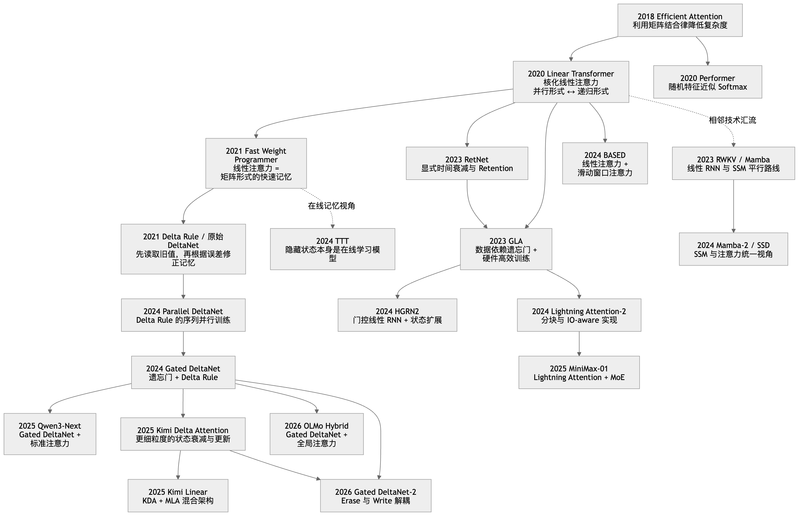
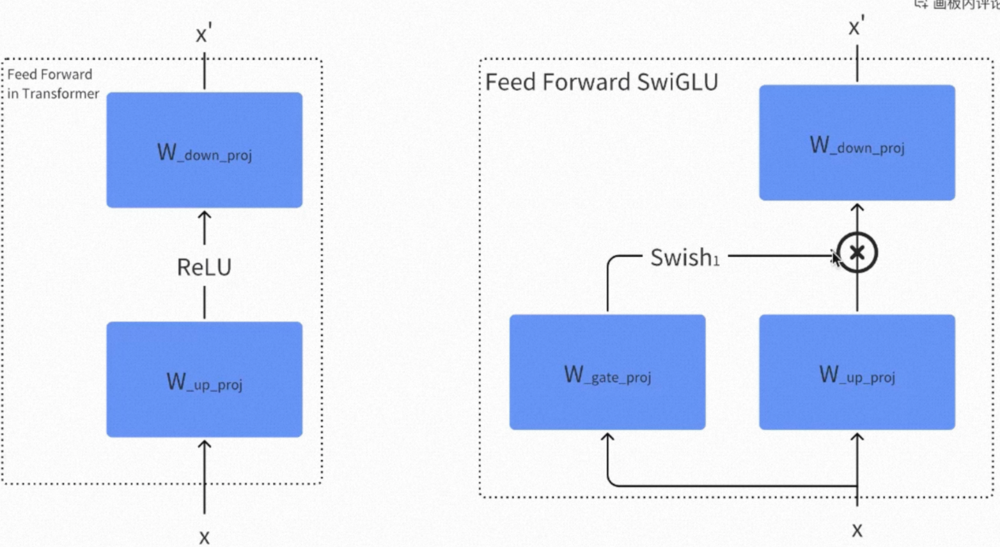
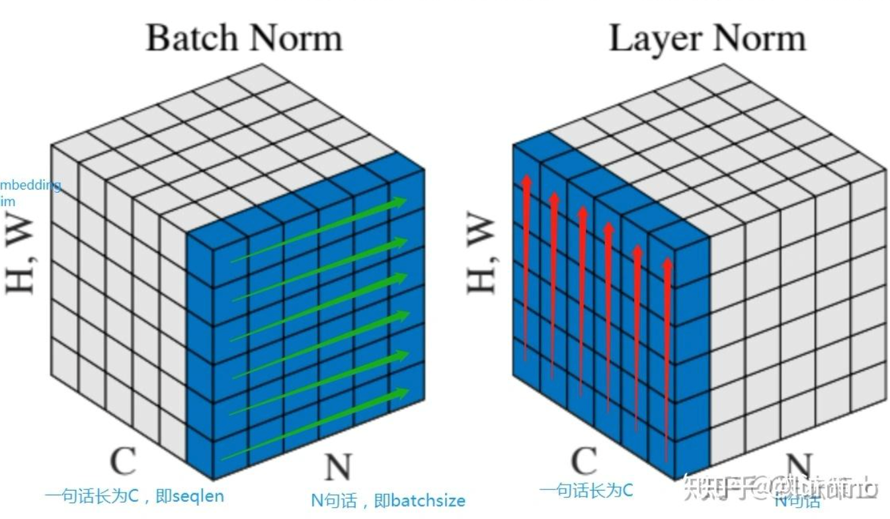
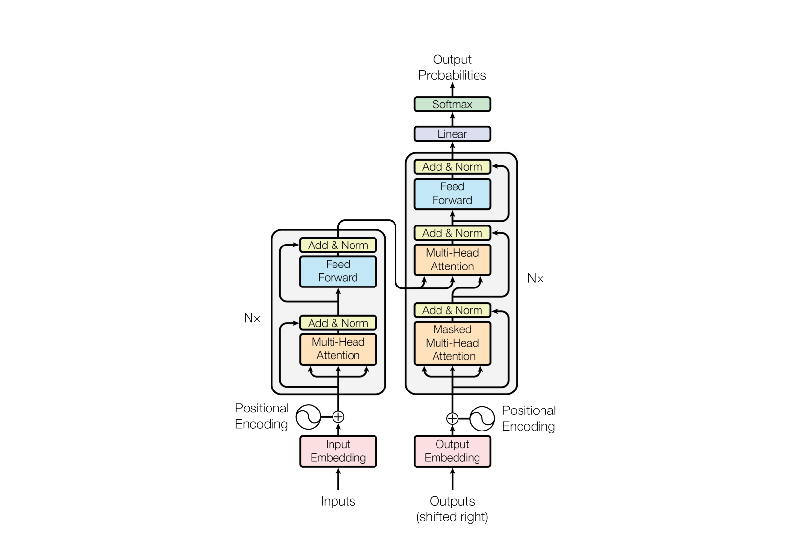
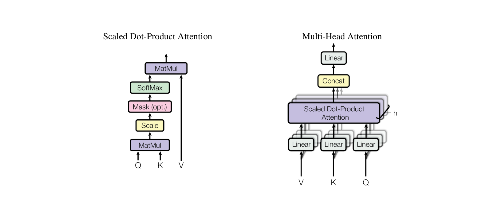
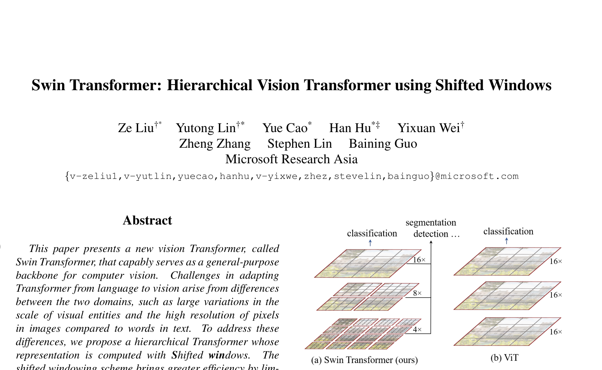

AAAAAAA_基础¶
目录¶
- 训练范式总览
- 一、正则化
- 二、优化器
- 三、学习率调度器
- 四、注意力机制
- 五、位置编码
- 六、激活函数
- 七、Normalization 机制
- 八、架构演进
- 九、Encoder vs Decoder
- 十、Mask 机制
- 十一、损失函数
- 十二、模型量化
- 十三、Flash Attention
〇、训练范式总览¶
一、对比学习¶
拉近正样本对、推远负样本对，学习模态间的对齐关系。
| 模型 | 做法 |
|---|---|
| CLIP / ALIGN | 双塔独立编码器，ITC Loss（InfoNCE）在大规模图文对上对比学习 |
| SigLIP / SigLIP-2 | 将 CLIP 的 Softmax 替换为 Sigmoid，消除全局归一化依赖 |
| ALBEF | 在模态融合前用 ITC Loss 对齐特征（Align before Fuse） |
二、掩码建模¶
随机遮盖输入的一部分，让模型预测被遮盖的内容。
| 模型 | 做法 |
|---|---|
| ViLT | MLM + ITM，在融合 Transformer 中同时做掩码语言建模和图文匹配 |
| BEiT-3 | 将图像视为"外语"，仅用 Masked Data Modeling 一个 Loss 统一视觉、语言、多模态三类任务 |
注：MAE、BEiT v1/v2、VideoMAE 本身是纯视觉自监督模型，不属于多模态模型。但它们的掩码建模思想被多模态领域继承——ViLT 将 MLM 引入视觉-语言融合训练，BEiT-3 将掩码建模推向极致，用一个 Loss 统一三类任务。
三、生成式方法¶
通过自回归生成或 seq2seq 建模，让模型学会"产出"内容。这是当前多模态大模型最主流的范式。
3.1 自回归 / Seq2Seq 生成
| 模型 | 做法 |
|---|---|
| SimVLM | PrefixLM（prefix 双向 + suffix 因果），单目标极简 VLP |
| PaLI / PaLI-X / PaLI-3 | ViT + mT5 encoder-decoder，所有 17+ 任务统一为文本生成 |
| OFA | BPE + VQGAN + 位置 token 统一词汇表，所有任务为指令驱动的 seq2seq 生成 |
| Unified-IO / IO 2 | "一切皆 token"，图像/文本/bbox/音频/动作统一为离散 token 序列 |
3.2 冻结 LLM + 视觉适配器
| 模型 | 做法 |
|---|---|
| Flamingo | 冻结 Chinchilla 70B，仅训练 Perceiver Resampler + Gated Cross-Attention 桥接模块 |
| BLIP-2 | 冻结 LLM，用 Q-Former 做两阶段 bootstrap（表示学习 → 生成学习） |
3.3 视觉指令微调 / ViT+MLP+LLM（当代主流 VLM）
| 模型 | 做法 |
|---|---|
| LLaVA | CLIP ViT + 线性投影 + Vicuna，GPT-4 生成指令数据，两阶段训练 |
| InstructBLIP | 指令感知 Q-Former 动态提取视觉特征 + LLM |
| Qwen-VL → Qwen3-VL | ViT + Adapter + LLM，从三阶段训练演进到四阶段预训练 + SFT |
| InternVL 1.5~2.5 | InternViT + MLP 投影 + LLM，渐进式训练 + 动态高分辨率 |
| Video-LLaVA | 图像/视频共享投影层 + LLM，"Alignment Before Projection" |
3.4 扩散模型
| 模型 | 做法 |
|---|---|
| DALL·E 2 | unCLIP：CLIP text → Prior 生成 embedding → 扩散 Decoder 生成像素 |
| CogVideoX | 3D Causal VAE + Expert DiT，渐进式分辨率/时长课程训练 |
四、统一表征¶
用统一的模型和任务公式直接处理所有任务，无需任务特定头。
| 模型 | 做法 |
|---|---|
| UniPerceiver v1 | 共享 Transformer 编码所有模态到统一空间，所有任务 = 表征相似度搜索 \(\hat{y} = \arg\max \exp\{\cos(f(x),f(y))/\tau\}\) |
| UniPerceiver v2 | 预训练编码器 + 共享 Decoder + Conditional MoE，首个同时覆盖分类/检测/分割/检索/captioning/LM 的通用模型 |
| VLMo | Mixture-of-Modality-Experts，FFN 按模态拆分 Expert，同一模型可切换 Dual-Encoder 与 Fusion-Encoder 模式 |
五、混合/统一范式¶
将多种训练目标组合在单一框架中，同时支持理解和生成。
| 模型 | 组合了哪些范式 |
|---|---|
| BLIP-1 | 对比学习（ITC）+ 匹配（ITM）+ 生成（LM）三目标 |
| CoCa | 对比学习（ITC）+ 生成（Captioning）双损失 |
| BEiT-3 | 掩码建模（唯一 Loss）+ MoME 架构统一三类任务 |
| PaLI-X | 生成（seq2seq）+ 对比（SigLIP 辅助） |
| InternVL 1.0 | 对比 → 生成 → SFT，三阶段渐进式训练 |
| InternVL 3.0/3.5 | 原生多模态 NTP + SFT + 偏好优化（Cascade RL），全参数联合训练 |
| Qwen2.5-VL | 三阶段预训练 + SFT + DPO 偏好优化 |
| Qwen3-VL | 四阶段预训练 + SFT + 开方归一化 per-token loss |
| Qwen2.5-Omni / Qwen3.5-Omni | 全模态感知 + 流式语音生成，Thinker-Talker 端到端联合训练 |
| Unified-IO 2 | 掩码重建 + 序列生成 + 指令微调，四模态统一（视觉/文本/音频/动作） |
演进脉络¶
对比学习 (CLIP) ──────────────────────────────┐
│
掩码建模 (BEiT-3) ─────────────────────────────┼──→ 混合/统一范式
│ (BLIP, CoCa, BEiT-3,
生成式方法 (SimVLM→Flamingo→LLaVA→Qwen/InternVL)┘ Qwen3, InternVL3,
Qwen3.5-Omni)
扩散模型 (DALL·E 2→CogVideoX) ← 独立生成路线
统一表征 (UniPerceiver, VLMo) ← 另一条通用化路线
三个核心趋势：
- 从多 Loss 到少 Loss：BLIP 用 3 个 loss，CoCa 用 2 个，BEiT-3 只用 1 个就超越了前两者——"越简单的方法，Scale 越好"
- 从冻结到原生：早期 Flamingo/LLaVA 冻结 LLM 或 ViT 做适配，后期 InternVL 3.0、Qwen 系列走向全参数联合更新的原生多模态预训练
- 从图文到全模态：Qwen3.5-Omni / Unified-IO 2 已扩展到文本+图像+音频+视频+动作的全模态感知与生成
一、正则化¶
正则化（Regularization）是所有旨在降低模型泛化误差、抑制过拟合的技术总称。它的核心不是让训练损失更低，而是限制模型的有效容量，让模型不去死记训练数据里的噪声，从而在没见过的数据上表现更好。
正则化手段可以按作用机制分为六大类：参数范数惩罚、随机噪声注入、隐式正则（归一化）、数据层面、训练策略、结构约束。
核心要点¶
- 本质是偏差-方差权衡：正则化用略微增大的训练偏差，换取显著减小的方差（泛化误差），只在模型容量相对数据过剩、有过拟合风险时才有净收益。
- 参数范数惩罚：L2（权重衰减）让权重平滑收缩，L1 产生稀疏解；现代 LLM 用的是 AdamW 的解耦权重衰减（见 二、优化器）。
- 随机性即集成：Dropout、DropPath 等在训练时随机置零，等价于对指数级子网络做隐式集成，推理时关闭。
- 很多组件同时兼具正则作用：BatchNorm 的批统计噪声、SGD 的梯度噪声、数据增强，都是"隐式正则"。
- LLM 预训练弱正则：数据量极大时过拟合风险低，Dropout 常设 0，主要靠权重衰减 + 大数据 + 梯度裁剪，正则重心转移到数据与规模本身。
1. 为什么需要正则化¶
模型的有效容量过高、而训练数据有限时，模型会连同数据里的随机噪声一起拟合，表现为训练损失很低但验证损失升高——这就是过拟合。
从偏差-方差分解看，泛化误差可近似拆成：
- 欠拟合：偏差大、方差小，模型太简单；
- 过拟合：偏差小、方差大，模型对训练集的微小扰动过度敏感。
正则化的作用就是主动增加一点偏差，换取方差的大幅下降，把模型推向偏差-方差的最优平衡点。因此正则化不是越强越好，过强会导致欠拟合。
2. 参数范数惩罚¶
在损失函数上追加一项对权重大小的惩罚，抑制权重无限制增长。
L2 正则 / 权重衰减
求导后梯度多出 \(\lambda\theta\)，等价于每步让权重按比例缩向 0（"回零弹簧"）。大权重意味着模型对个别特征反应剧烈、函数不平滑，压小权重后泛化更好。
- SGD 下：L2 正则与权重衰减数学等价；
- Adam 下不等价：L2 写法中 \(\lambda\theta\) 会被自适应缩放 \(\frac{1}{\sqrt{\hat v}}\) 加工，正则强度失控，所以现代 LLM 一律用 AdamW 的解耦权重衰减（推导见 二、优化器 的 AdamW 小节）；
- 通常不作用于 bias 和 norm 的 \(\gamma\)：它们不参与"特征乘法"，衰减只会破坏归一化的表达能力，没有正则收益。
L1 正则
梯度是 \(\lambda \cdot \text{sign}(\theta)\)，无论权重大小都施加等幅的向零推力，倾向于把不重要的权重精确压到 0，产生稀疏解，可用于特征选择与模型压缩。
Elastic Net：L1 + L2 组合，兼顾稀疏性与平滑收缩。
L1 与 L2 的区别¶
两者所有差异都源自同一条核心机制：惩罚项的梯度是"成比例"还是"恒定"。
（1）核心机制：梯度形式
| L2 | L1 | |
|---|---|---|
| 惩罚项 | \(\frac{\lambda}{2}\|\theta\|_2^2\) | \(\lambda\|\theta\|_1\) |
| 对 \(\theta_i\) 的梯度 | \(\lambda\,\theta_i\) | \(\lambda \cdot \text{sign}(\theta_i)\) |
| 更新形式 | \(\theta \leftarrow \theta(1-\eta\lambda)\) 乘性收缩 | \(\theta \leftarrow \theta - \eta\lambda\,\text{sign}(\theta)\) 减性收缩 |
- L2 的拉力与权重大小成正比：\(\theta\) 越接近 0，推力越弱 → 只能渐近逼近 0，永远到不了 0。像弹簧，形变小时力也小。
- L1 的拉力恒为 \(\lambda\)，与权重大小无关：哪怕 \(\theta = 0.001\)，推力依然是 \(\lambda\) → 足以把它精确推到 0 并按住。像恒定摩擦力，不管多慢都能让物体停下。
（2）具体算例：软阈值
正交设计的线性回归下有闭式解。设无正则的最优解为 \(\theta^{\text{OLS}}\)：
取 \(\lambda = 0.1\) 代入：
| \(\theta^{\text{OLS}}\) | L2 结果 | L1 结果 |
|---|---|---|
| 5.0 | 4.545 | 4.9 |
| 0.5 | 0.455 | 0.4 |
| 0.05 | 0.045 | 0 ← 被截断 |
L1 对小权重直接归零、对大权重只减一个常数；L2 则所有权重等比例缩小，大权重被压得更多，小权重永远留一点尾巴。
（3）几何视角
把正则化看成带约束的优化：在 \(\|\theta\| \le t\) 区域内最小化损失。
- L2 球是圆的（光滑）：损失等高线与圆相切处，各坐标一般都非零；
- L1 球是菱形（尖角正好落在坐标轴上）：等高线更容易先碰到尖角，而尖角意味着某些坐标恰好为 0。
维度越高，L1 球的尖角占比越大，稀疏性越明显。
（4）贝叶斯视角
MAP 估计下两者对应不同先验：
- L2 ⟺ 高斯先验 \(\theta \sim \mathcal{N}(0,\sigma^2)\)，\(-\log p(\theta)\propto \theta^2\)。高斯在 0 附近平坦，不特别偏好精确为 0；
- L1 ⟺ 拉普拉斯先验 \(p(\theta)\propto e^{-|\theta|/b}\)，\(-\log p(\theta)\propto|\theta|\)。拉普拉斯在 0 处有尖峰、尾部更重，既偏好"精确为 0"，也容许少数大权重。
（5）面对相关特征的行为差异
- L2 把权重"摊平"到相关特征上：两个高度相关的特征，L2 倾向各分一半，因为平方惩罚下 \(0.5^2+0.5^2 < 1^2+0^2\)；
- L1 倾向任选一个、其余归零：\(|0.5|+|0.5| = |1|+|0|\)，惩罚相同，解不唯一 → 特征选择不稳定，数据微小扰动就可能换一个特征。
这正是 Elastic Net 存在的理由：用 L2 项打破 L1 的平局，让相关特征成组进出。
（6）⚠️ 工程陷阱：普通 SGD 加 L1 拿不到精确 0
L1 在 0 处不可导，只有次梯度。后果是：用普通 SGD/Adam 直接加 L1，权重会在 0 附近来回震荡（这一步减 \(\eta\lambda\) 越过 0，下一步又加 \(\eta\lambda\) 回来），得不到精确稀疏。
要真正拿到精确的 0，必须用近端方法：
- 近端梯度 / ISTA：先做普通梯度步，再套软阈值算子 \(\text{prox}(\theta)=\text{sign}(\theta)\max(|\theta|-\eta\lambda,\,0)\)；
- 坐标下降：sklearn 的
Lasso用的就是这个。
L2 则处处光滑，直接加进梯度或做解耦衰减都可以——这也是它在深度学习里更好用的原因之一。
（7）为什么深度学习几乎只用 L2 🚗
现代 LLM/VLM 基本只用 AdamW 的解耦权重衰减（L2 血统），L1 罕见：
- 不想要稀疏权重：深度网络希望所有特征各贡献一点，硬把权重归零反而损失容量；
- 非结构化稀疏对 GPU 无用：权重矩阵即使 90% 是 0，稠密矩阵乘法一样慢，省不了算力。真要提速得靠结构化剪枝或 MoE，不是 L1；
- 与自适应优化器不合：L1 的不可导点配上 Adam 的自适应缩放，行为难以控制；
- L2 解析上更良性：解唯一、稳定、处处可导。
L1 仍在用的场合：经典 ML 的特征选择（Lasso）与压缩感知；稀疏自编码器（SAE）——机制可解释性的主流工具，用 L1 逼出稀疏特征，但注意那是对激活值加 L1 而非对权重；部分剪枝目标里作为稀疏诱导项。
（8）完整对比
| 维度 | L2 | L1 |
|---|---|---|
| 惩罚项 | \(\frac{\lambda}{2}\|\theta\|_2^2\) | \(\lambda\|\theta\|_1\) |
| 梯度 | \(\lambda\theta\)，成比例 | \(\lambda\,\text{sign}(\theta)\)，恒定 |
| 收缩方式 | 乘性（等比缩小） | 减性（软阈值） |
| 能否得到精确 0 | ❌ 渐近趋零 | ✅ 可精确为 0 |
| 解的特点 | 稠密、值小、平滑 | 稀疏 |
| 约束区域 | 圆（光滑） | 菱形（有尖角） |
| 概率先验 | 高斯 | 拉普拉斯 |
| 相关特征 | 摊平共享 | 任选一个，不稳定 |
| 可微性 | 处处可导 | 0 处不可导，需近端算子 |
| 解唯一性 | 唯一 | 可能不唯一 |
| 深度学习 | 主流（AdamW） | 罕见（SAE 对激活用） |
| 别名 | 岭回归 / weight decay | Lasso |
L1 / L2 正则（作用于权重）与 L1 / L2 损失（作用于预测误差）、L1 / L2 归一化（作用于向量长度）只是共用一套 \(L_p\) 范数定义，不要混淆，三者区别见 面试问题 Q8。
3. Dropout 及其变体¶
Dropout：训练时以概率 \(p\) 随机把神经元输出置 0，每个 mini-batch 相当于训练一个不同的"子网络"，最终等价于对指数级多个子网络做隐式集成。这迫使网络不依赖任何单个神经元，学到更冗余、更鲁棒的特征。
工程上用 inverted dropout：训练时对存活神经元除以保留概率 \((1-p)\) 做缩放，推理时无需任何改动。
变体：
| 变体 | 丢弃对象 | 典型场景 |
|---|---|---|
| Dropout | 单个神经元/激活 | FFN、全连接层 |
| DropConnect | 单个权重连接 | 全连接层 |
| DropPath / Stochastic Depth | 整个残差分支 | ViT、Swin、深层残差网络 |
| DropBlock | 特征图上连续区域 | CNN（相邻像素相关，逐点丢无效） |
- Transformer 里 Dropout 常加在注意力权重、FFN 输出、残差相加前；
- LLM 预训练常把 Dropout 设为 0：数据量极大、单个样本几乎只过一遍，过拟合风险低，Dropout 反而拖慢收敛。
4. 标签平滑¶
Label Smoothing：把 one-hot 硬标签软化，给非目标类分配一点小概率，防止模型对预测过度自信。
其中 \(K\) 是类别数，\(\varepsilon\) 常取 0.1。它抑制了 logit 之间无限拉大的趋势，让分类边界更平滑、校准更好，广泛用于分类、机器翻译、ViT 训练。
5. 数据层面¶
给模型喂更多、更多样的数据，是最根本的"正则化"。
- 数据增强：图像的翻转/裁剪/颜色抖动、Mixup（样本与标签线性插值）、CutMix（区域拼接）、RandAugment；文本的回译、EDA。本质是人为扩充数据流形，让模型对输入扰动不敏感。
- 扩充数据规模：数据越多，过拟合空间越小；LLM 的强泛化很大程度来自海量语料本身。
6. 训练策略¶
- Early Stopping：监控验证集，指标不再提升就停止训练，避免模型在训练集上继续过拟合。相当于对"训练轮数"这一隐式容量做约束。
- 梯度裁剪（clip norm）：把梯度范数限制在阈值内（LLM 常用 1.0），抑制 loss spike 导致的剧烈更新，稳定训练。详细展开见下。
- 学习率调度：warmup + cosine decay，前期小步热身、后期退火，间接控制更新幅度。详见 三、学习率调度器。
梯度裁剪详解¶
是什么：在反向传播算完梯度、优化器更新参数之前，把梯度的大小限制在阈值内，防止个别 step 出现异常大的梯度把参数"打飞"（loss spike、训练发散）。
按全局范数裁剪（clip by norm，主流做法）：把所有参数的梯度拼起来算总 L2 范数 \(\|g\|\)，超过阈值 \(c\) 则整体等比例缩小：
关键性质：只缩放幅度，不改变梯度方向。
"所有参数的梯度"的精确含义：就是把整个网络所有参数（每层的 weight、bias 等）的梯度 \(g_1, g_2, \dots\) 在概念上摊平拼接成一个巨大向量 \(g = [g_1; g_2; \dots]\)，对它算一个 L2 范数：
- 实现上不会真的拼接（7B 模型的 \(g\) 有 70 亿维）：先对每个参数张量算 \(\|g_p\|\)，再平方求和开根号，数学上完全等价
- 裁剪时所有参数乘同一个系数 \(c/\|g\|\)：
# clip_grad_norm_ 的核心逻辑
total_norm = torch.sqrt(sum(p.grad.norm()**2 for p in parameters))
clip_coef = max_norm / (total_norm + 1e-6)
if clip_coef < 1:
for p in parameters:
p.grad.mul_(clip_coef)
- 为什么全局算而不是逐层算：统一的范数、统一的缩放系数，各层梯度的相对比例才保持不变；若每层单独裁剪，梯度大的层被压得多、小的层不动，层间更新平衡就被破坏了
两种裁剪方式对比：
| 方式 | 做法 | 特点 |
|---|---|---|
| clip by norm | 全局范数超阈值时整体等比缩放 | 保持梯度方向不变，LLM 标配 |
| clip by value | 逐元素截断到 \([-c, c]\) | 会扭曲梯度方向，现在少用 |
为什么用 L2 范数裁剪（clip by norm 的好处）：🚗
- 方向不变：超阈值时所有梯度分量乘同一个系数 \(c/\|g\|\)，梯度方向完全保留，等价于"临时调小学习率"，优化仍沿原方向走；clip by value 逐元素截断会扭曲方向——大分量被砍、小分量不动，可能指向错误的下降方向
- 只在异常时生效：\(\|g\| \le c\) 时乘 \(\min(1, \cdot) = 1\)，是恒等操作，完全不干扰正常训练；只有 loss spike、坏 batch 等异常时刻才触发，是"保险丝"而非常态干预
- 全局一致：所有参数层用同一个缩放系数，各层梯度的相对比例不变，不破坏层间更新平衡
- 阈值好定、可监控：全局范数是一个标量，LLM 实践直接设 1.0 通用；训练时监控 grad norm 曲线还能顺带诊断训练健康度（spike 频率）
一句话：L2 范数裁剪 = 保方向、限步长、平时无感、异常兜底。
# PyTorch：backward 之后、optimizer.step() 之前调用
loss.backward()
torch.nn.utils.clip_grad_norm_(model.parameters(), max_norm=1.0)
optimizer.step()
各论文实践（均来自本项目笔记核实）：
| 模型 | 配置 |
|---|---|
| LLM 训练通用实践 | AdamW 配套 clip norm 1.0 |
| SigLIP | 梯度裁剪到范数 1 |
| Chameleon | 全局梯度裁剪阈值 1.0 |
| Unified-IO | 全局阈值 1.0，论文称"对 XL 模型训练稳定至关重要" |
定位：LLM 预训练弱正则化，正则重心是权重衰减 + 梯度裁剪 + 大数据🚗，梯度裁剪几乎必用（见本章开头核心要点与汇总表）。
7. 隐式正则（归一化与优化噪声）¶
有些组件设计初衷不是正则化，却带来了正则效果：
- 归一化：BatchNorm 依赖 mini-batch 统计，批间的统计噪声本身就是一种正则；LayerNorm / RMSNorm 稳定激活分布、缓解过拟合。详见 七、Normalization 机制。
- SGD 的梯度噪声：mini-batch 梯度是全量梯度的带噪估计，这种噪声有助于逃离尖锐极小值、收敛到更平坦（泛化更好）的解。
8. 结构与集成¶
从模型结构或多模型层面限制容量：
- 参数共享 / 权重绑定：CNN 卷积核共享、Transformer 跨层共享、embedding 与输出层绑定，都通过减少独立参数来正则化。
- 低秩约束（LoRA）：把权重更新约束为低秩 \(\Delta W = BA\)，只训练少量参数，天然限制了更新的自由度，也缓解灾难性遗忘（见 面试问题 Q4）。
- 集成与参数平均：Ensemble、EMA（指数滑动平均）、SWA（随机权重平均），用多模型/多时刻权重的平均来降低方差。
汇总¶
| 类别 | 代表方法 | 作用机制 | LLM/VLM 是否常用 |
|---|---|---|---|
| 参数范数惩罚 | L2 / weight decay、L1 | 惩罚大权重 | ✅ AdamW weight decay |
| 随机噪声 | Dropout、DropPath | 隐式集成 | 预训练常设 0，微调/ViT 用 |
| 标签平滑 | Label Smoothing | 抑制过度自信 | 分类/ViT 常用 |
| 数据层面 | 数据增强、扩充数据 | 扩充数据流形 | ✅ 核心 |
| 训练策略 | Early Stopping、梯度裁剪 | 约束训练过程 | ✅ 梯度裁剪必用 |
| 隐式正则 | 归一化、SGD 噪声 | 稳定分布/平坦解 | ✅ |
| 结构约束 | 参数共享、LoRA、集成 | 限制有效容量 | ✅ LoRA 微调 |
LLM / VLM 实践小结：预训练阶段数据规模巨大，过拟合不是主要矛盾，正则重心是权重衰减（AdamW）+ 梯度裁剪 + 大数据，Dropout 常为 0；下游微调阶段数据少、过拟合风险回升，才会重新启用 Dropout、LoRA 低秩约束、Early Stopping 等手段。
二、优化器¶
优化器决定"梯度算出来之后，参数怎么更新"。发展主线是两条：动量（用历史梯度平滑更新方向）和自适应学习率（每个参数用自己的步长），Adam 把两者合并，AdamW 修正了 weight decay 的实现方式，成为 LLM 训练的事实标准。
| 优化器 | 动量 | 自适应学习率 | 额外状态/参数 | 代表使用 |
|---|---|---|---|---|
| SGD | ✗ | ✗ | 0 | 早期 CNN |
| SGD+Momentum | ✓ | ✗ | 1 份（速度 \(v\)） | ResNet 等 CNN |
| AdaGrad | ✗ | ✓（累积平方和） | 1 份 | 稀疏特征场景 |
| RMSProp | ✗ | ✓（EMA 平方） | 1 份 | RNN 时代 |
| Adam | ✓ | ✓ | 2 份（\(m\)、\(v\)） | BERT、GPT-2 |
| AdamW | ✓ | ✓ | 2 份 | LLaMA、Qwen、DeepSeek 等所有现代 LLM |
1. SGD¶
随机梯度下降（Stochastic Gradient Descent）：最朴素的更新——沿负梯度方向走一步。
- \(\eta\)：学习率，全局唯一，所有参数共用
- "随机"指用 mini-batch 梯度近似全量梯度
两个核心缺点：
- 所有方向同一步长：损失面往往像"峡谷"——某些方向陡峭、某些方向平缓。统一的 \(\eta\) 要么在陡峭方向震荡，要么在平缓方向磨蹭
- 对 mini-batch 噪声敏感：每步只看当前 batch 的梯度，方向抖动大
2. SGD + Momentum¶
核心思想：不直接用当前梯度更新，而是维护一个"速度"向量 \(v\)，累积历史梯度——像小球滚下山，有惯性。
- \(\mu\)：动量系数，通常 0.9——历史速度保留 90%，新梯度贡献 10% 的方向修正
为什么有效：
- 震荡方向互相抵消：峡谷两壁来回震荡的梯度分量正负交替，累积后接近 0
- 一致方向不断加速：沿谷底的梯度分量方向一致，累积后越滚越快
- 冲过小坑：惯性帮助越过局部小极小值和平坦区
一句话：Momentum = 对梯度方向做指数移动平均，滤掉高频噪声、放大低频趋势。
3. AdaGrad¶
核心思想：每个参数用自己的学习率——历史梯度大的参数步长自动变小，梯度小（更新少）的参数步长保持大。
- \(G_t\)：该参数历史所有梯度平方的累积和（逐参数标量）
- 分母 \(\sqrt{G_t}\) 起"自适应"作用：常被大梯度更新的参数被抑制，稀疏更新的参数被放大
致命缺点：\(G_t\) 单调递增——分母只增不减，训练后期学习率不可逆地衰减到接近 0，模型学不动了。适合稀疏特征（如词嵌入早期），不适合训练深度网络到收敛。
4. RMSProp¶
核心思想：修复 AdaGrad——把"累积和"换成指数移动平均（EMA），只记住最近一段时间的梯度大小，久远的历史自动遗忘。
- \(\beta\)：通常 0.99——分母变成"最近梯度大小的滑动估计"，不再单调增长
- 学习率能跟随训练阶段动态调整：梯度变小后分母也变小，步长自动恢复
5. Adam 🚗¶
📄 来源：Adam: A Method for Stochastic Optimization（Kingma & Ba, 2015）
核心思想：Momentum + RMSProp 合体——同时维护梯度的一阶动量（方向）和二阶动量（大小），再加上偏差修正。
为什么需要偏差修正（面试高频）🚗：
\(m\)、\(v\) 初始化为 0，而 EMA 的更新是 \(m_t = \beta_1 m_{t-1} + (1-\beta_1)g_t\)。训练初期 \(m_{t-1}\) 几乎全是 0，导致 \(m_t\) 严重偏向 0（低估真实梯度）。
具体看第 1 步：\(m_1 = 0.9 \times 0 + 0.1 \times g_1 = 0.1 g_1\)——真实梯度是 \(g_1\)，估计值只有它的 10%。
修正项 \(1-\beta_1^t\) 正好补偿这个低估：\(\hat{m}_1 = m_1/(1-0.9^1) = 0.1g_1/0.1 = g_1\) ✓。随着 \(t\) 增大，\(\beta_1^t \to 0\)，修正系数趋于 1，自动退出。\(v\) 同理（\(\beta_2=0.999\) 时低估更严重、持续更久，修正更必要——不修正的话初期 \(\sqrt{\hat{v}}\) 过小、步长爆大，训练直接不稳定）。
Adam 的权重衰减问题🚗：
权重衰减（weight decay）是最常用的正则化手段——每步让所有权重按同一小比例向 0 收缩（乘以 \(1-\eta\lambda\)），防止权重无限变大、抑制过拟合。在 SGD 里它有两种等价写法：加在 loss 上（L2 正则 \(\frac{\lambda}{2}\|\theta\|^2\)）或加在梯度上（\(g \leftarrow g + \lambda\theta\)，正是 L2 项求导的结果）。
先厘清一个常见困惑：权重衰减到底作用在 loss、梯度、还是权重上？ 三个"位置"其实只有两种本质：
| 位置 | 写法 | 本质 |
|---|---|---|
| ① 加在 loss 上 | \(\mathcal{L}' = \mathcal{L} + \frac{\lambda}{2}\|\theta\|^2\) | L2 正则的定义 |
| ② 加在 梯度 上 | \(g \leftarrow g + \lambda\theta\) | ① 求导后的实现（\(\frac{\lambda}{2}\theta^2\) 的导数恰好是 \(\lambda\theta\)） |
| ③ 直接作用在 权重 上 | \(\theta \leftarrow \theta - \eta\lambda\theta\) | decoupled（AdamW 的做法） |
- ① 和 ② 是同一件事：框架从不真去改 loss 表达式，反正求导后就是给梯度加 \(\lambda\theta\)，所以直接加梯度上。"Adam 把 \(\lambda\theta\) 加进梯度"不是特殊设计，只是"loss 加 L2 正则"从 SGD 时代沿用下来的自然结果。
- SGD 下 ② ≡ ③：展开 \(\theta - \eta(g + \lambda\theta) = \theta - \eta g - \eta\lambda\theta\)，和 ③ 完全一样——所以 SGD 时代"加 loss / 加梯度 / 缩权重"三种说法随便混用都对。
- Adam 下 ② ≠ ③：梯度要先进 \(m\)、\(v\) 的 EMA、再被 \(\frac{1}{\sqrt{\hat v}}\) 缩放。走 ② 时 \(\lambda\theta\) 跟着梯度一起被加工（下面详解），正则强度失控；③ 绕开这套加工，单独减。这正是 Adam 与 AdamW 的分水岭。
Adam 沿用了"加梯度"（位置②）这个写法给权重衰减，但在 Adam 下它会失灵。原因在于 Adam 的更新是：
\(\frac{\hat m}{\sqrt{\hat v}}\) 把每个参数的更新量归一化到 ±1 附近（分子分母都正比于梯度大小，约掉了）——这是 Adam 的卖点：梯度是 100 还是 0.01，步长都拉到相近水平。可一旦把 \(\lambda\theta\) 加进梯度、跟着一起过归一化，正则那部分的实际贡献变成 \(\eta\cdot\frac{\lambda\theta}{\sqrt{\hat v}}\)。
这个 \(\frac{\lambda\theta}{\sqrt{\hat v}}\) 是怎么推出来的：
① \(\lambda\theta\) 加进梯度：\(g_t' = g_t + \lambda\theta_t\)，然后走完整 Adam。EMA 是线性运算，可以把 \(\lambda\theta\) 那部分单独拆出来：
即 \(m_t = m_t^{\text{grad}} + m_t^{\text{wd}}\)，其中权重衰减那部分自己也是一条独立 EMA：\(m_t^{\text{wd}} = \beta_1 m_{t-1}^{\text{wd}} + (1-\beta_1)\lambda\theta_t\)。
这份 \(m_t^{\text{wd}}\) 累积起来为什么 \(\approx\lambda\theta\)：把这条 EMA 一直展开到底，是对历史输入的加权和：
前面的权重之和 \((1-\beta_1)\sum_{i}\beta_1^{t-i}\to 1\)（等比级数 \((1-\beta_1)\cdot\frac{1}{1-\beta_1}=1\)）。训练中期 \(\theta\) 每步只动一点、变化慢，可近似 \(\theta_i\approx\theta_t\) 提出来：
本质：EMA 对一个近似恒定的输入，输出会收敛到那个输入本身。
② 更新时整个 \(\hat m\) 被 \(\sqrt{\hat v}\) 除。因为除法对加法可分配，\(m\) 里那份 \(\lambda\theta\) 成分被单独拎出来一起除：
把 \(\hat m_t^{\text{wd}}\approx\lambda\theta_t\)（偏差修正系数中后期 \(\to 1\)，不改变量级）代入最后一项：
三处"约"：① \(\theta\) 变化慢使 EMA 权重和 ≈1（主要近似）；② 偏差修正系数 ≈1；③ 忽略 \(\epsilon\)。都是量级近似，不改变"\(\lambda\theta\) 分母里带着 \(\sqrt{\hat v}\)"这个结论。
对比想要的 vs 实际得到的：
两者差了一个因子 \(\frac{1}{\sqrt{\hat v}}\)，而 \(\sqrt{\hat v}\approx\) 该参数历史梯度大小、每个参数各不相同——你在配置里只设了一个统一的 \(\lambda\)，本以为一视同仁，却被 \(\sqrt{\hat v}\) 暗中缩放成"每个参数各吃各的衰减"。这就是万恶之源：
| 参数 | \(\hat v\) | 正则实际贡献 | 结果 |
|---|---|---|---|
| A：梯度一直大 | 100 | \(\eta\lambda\theta / 10\) | 衰减被稀释到 1/10，几乎没正则 |
| B：梯度一直小 | 0.01 | \(10\,\eta\lambda\theta\) | 衰减被放大 10 倍，过度正则 |
结果和"所有权重按同比例缩"的目标完全拧反：变成"梯度大的几乎不缩、梯度小的猛缩"。更讽刺的是——梯度大往往说明该参数正在被积极学习、很重要，却逃过了正则。设的那个统一 \(\lambda\) 根本没起到"统一"的作用。解法就是下一节的 AdamW。
6. AdamW 🚗¶
📄 来源：Decoupled Weight Decay Regularization（Loshchilov & Hutter, 2019）
与 Adam 的唯一区别：解决上一节的权重衰减问题。做法是把衰减从梯度里拿出来，不经过 \(\sqrt{\hat v}\) 归一化，等 Adam 算完更新后单独直接减（decoupled，这就是名字里 W 的由来）：
对比两种写法的差别：
| 权重衰减位置 | 效果 | |
|---|---|---|
| Adam（L2 写法） | 加进梯度 \(g \leftarrow g + \lambda\theta\)，一起过归一化 | 正则强度被 \(\sqrt{\hat v}\) 扭曲（上节的 A/B 问题） |
| AdamW（解耦） | 更新时单独减 \(\eta\lambda\theta\) | 每个参数实打实乘 \((1-\eta\lambda)\)，一视同仁 |
正则强度与梯度大小无关，\(\lambda\) 和 \(\eta\) 也不再纠缠、更好调。这就是所有现代 LLM 用 AdamW 而不是 Adam 的原因。
7. Muon 🚗¶
一种较新的优化器，定位是大模型 backbone 预训练的 Adam/AdamW 替代方案。核心差异在于它不再把每个参数当独立标量处理，而是把权重矩阵的梯度当作整体矩阵做正交化更新。
Adam/AdamW 相对于 Muon 的缺点：
- 低秩倾向：Adam 训练时梯度矩阵的有效秩会自然下降，更新方向集中在少数主方向上，限制模型学习复杂模式。
- 逐元素更新：Adam 对每个参数单独维护动量，没有利用权重矩阵的整体几何结构。
Muon 的改进思路：
- 梯度正交化：把 Linear 权重的梯度矩阵整体做正交化处理，让更新方向相互正交、更均匀。
- 分参数使用：矩阵型参数用 Muon，Embedding、LayerNorm、Bias 等仍用 AdamW。
基本流程：
- 计算梯度，对可 reshape 为矩阵的参数梯度做正交化。
- 用正交化后的梯度方向更新参数，非矩阵参数仍走 AdamW。
实践注意：Muon 适合从头预训练大模型，不适合直接微调 Adam 预训练好的模型。
8. LLM 训练实践¶
典型超参（LLaMA / Qwen / DeepSeek 系技术报告的常见配置）：
| 超参 | 典型值 | 说明 |
|---|---|---|
| \(\beta_1\) | 0.9 | 一阶动量 |
| \(\beta_2\) | 0.95（而非经典 0.999） | 大 batch 下梯度噪声小，二阶估计不需要那么长的记忆；0.999 会让分母对 loss spike 反应迟钝，易训崩 |
| \(\epsilon\) | 1e-8 | 数值稳定 |
| weight decay | 0.1 | 通常不作用于 bias 和 norm 参数（γ）——它们不参与"特征乘法"，衰减只会破坏归一化的表达能力，没有正则收益 |
| 配套 | warmup + cosine decay 学习率调度（详见 三、学习率调度器）、梯度裁剪（clip norm 1.0） |
显存账🚗（与 面试问题 Q2 呼应）：
AdamW 每个参数要存 2 份 fp32 状态（\(m\) 和 \(v\)），共 8 bytes/参数——比 bf16 的参数本身（2 bytes）+ 梯度（2 bytes）加起来还大一倍：
4B 模型混合精度训练：
参数 bf16: 4B × 2 = 8 GB
梯度 bf16: 4B × 2 = 8 GB
Adam m (fp32): 4B × 4 = 16 GB ← 优化器状态
Adam v (fp32): 4B × 4 = 16 GB ← 优化器状态
合计 48 GB（不含激活）——优化器状态占了 2/3
这就是 ZeRO 优先切分优化器状态（Stage 1）、以及 Adafactor/Lion/8-bit Adam 等"省状态"优化器存在的原因。
8. 新一代优化器（简介）¶
| 优化器 | 核心思想 | 状态开销 | 代表使用 |
|---|---|---|---|
| Adafactor | 二阶动量按行/列因式分解存储（\(m \times n\) 矩阵只存 \(m+n\) 个数） | 远小于 Adam | T5、PaLM |
| Lion | 只存一阶动量，更新用 sign(动量插值)——每步等幅更新 | 1 份（Adam 的一半） | 谷歌搜出的优化器，部分视觉/多模态训练 |
| Muon❓ | 对动量矩阵做 Newton-Schulz 正交化再更新，只用于 2D 权重矩阵（embedding/head 仍用 AdamW） | 1 份 | Moonlight / Kimi 系列，宣称约 2 倍算力效率 |
趋势：要么省显存（Adafactor/Lion/8-bit Adam），要么提样本效率（Muon）；但 AdamW 目前仍是 LLM 预训练最稳的默认选择。
9. 手撕代码¶
import torch
class SGD:
def __init__(self, params, lr=0.01):
self.params, self.lr = list(params), lr
def step(self):
for p in self.params:
p.data -= self.lr * p.grad
class SGDMomentum:
def __init__(self, params, lr=0.01, mu=0.9):
self.params, self.lr, self.mu = list(params), lr, mu
self.v = [torch.zeros_like(p) for p in self.params]
def step(self):
for p, v in zip(self.params, self.v):
v.mul_(self.mu).add_(p.grad) # v = μv + g
p.data -= self.lr * v
class RMSProp:
def __init__(self, params, lr=0.001, beta=0.99, eps=1e-8):
self.params, self.lr, self.beta, self.eps = list(params), lr, beta, eps
self.G = [torch.zeros_like(p) for p in self.params]
def step(self):
for p, G in zip(self.params, self.G):
G.mul_(self.beta).addcmul_(p.grad, p.grad, value=1 - self.beta) # G = βG + (1-β)g²
p.data -= self.lr * p.grad / (G.sqrt() + self.eps)
class AdamW:
"""Adam 只需去掉 step() 里最后一行的解耦衰减、
并在开头改成 p.grad += wd * p.data（L2 写法）"""
def __init__(self, params, lr=1e-3, betas=(0.9, 0.95), eps=1e-8, wd=0.1):
self.params = list(params)
self.lr, (self.b1, self.b2), self.eps, self.wd = lr, betas, eps, wd
self.m = [torch.zeros_like(p) for p in self.params]
self.v = [torch.zeros_like(p) for p in self.params]
self.t = 0
def step(self):
self.t += 1
for p, m, v in zip(self.params, self.m, self.v):
g = p.grad
m.mul_(self.b1).add_(g, alpha=1 - self.b1) # m = β₁m + (1-β₁)g
v.mul_(self.b2).addcmul_(g, g, value=1 - self.b2) # v = β₂v + (1-β₂)g²
m_hat = m / (1 - self.b1 ** self.t) # 偏差修正
v_hat = v / (1 - self.b2 ** self.t)
p.data -= self.lr * m_hat / (v_hat.sqrt() + self.eps) # 自适应更新
p.data -= self.lr * self.wd * p.data # 解耦 weight decay（AdamW 的灵魂）
演进脉络总结：
SGD（一个学习率走天下）
├─ 方向问题 → Momentum（梯度 EMA，滤噪声加惯性）
└─ 步长问题 → AdaGrad（逐参数自适应）→ RMSProp（EMA 修复衰减）
↓ 合体
Adam（动量 + 自适应 + 偏差修正）
↓ 修正 weight decay 耦合
AdamW（解耦衰减，LLM 标配）
↓ 省显存 / 提效率
Adafactor / Lion / Muon
三、学习率调度器¶
学习率 \(\eta\) 是训练中最敏感的超参数。优化器决定"参数往哪改、每个参数步子怎么分配"，学习率调度器（learning rate scheduler）决定"全局节奏——什么时候快、什么时候慢"。两者独立、同时起作用。
1. 优化器 vs 调度器：职责区分¶
先厘清一个常见混淆——"Adam 不是自适应学习率吗，为什么还要调度器？"
| 谁控制 | 变化依据 | 作用范围 | |
|---|---|---|---|
| 全局学习率 \(\eta_t\) | 调度器 | 训练步数（预先设定的曲线） | 所有参数共享 |
| 每参数有效步长 | 优化器（Adam 的 \(\frac{1}{\sqrt{\hat v}}\)） | 该参数的梯度历史 | 逐参数 |
两者相乘才是实际步长：
Adam 的自适应是逐参数的相对缩放（把不同参数的步长拉平），解决不了"整个训练该快该慢"的全局节奏问题——所以两者互补，缺一不可。
一句话分工：反向传播算梯度，优化器用梯度，调度器定节奏。
2. 为什么学习率需要变化¶
固定学习率的两难：
- 设大了：初期参数随机、梯度方向不可靠，大步直接把模型带崩（loss 爆炸/NaN）；后期接近最优点，大步在谷底反复横跳，loss 降不下去
- 设小了：整个训练磨磨蹭蹭，算力浪费
解法就是分阶段：初期小步试探 → 中期大步快跑 → 后期小步精修。这正是 Warmup + Decay 的形状。
3. Warmup（预热）🚗¶
做法：开头几百~几千步，学习率从 0（或极小值）线性升到峰值 \(\eta_{\max}\)：
为什么需要 Warmup（面试高频）：
- Adam 的统计量还没积累准：训练刚开始时 \(m\)、\(v\) 只见过几个 batch，二阶动量 \(\hat v\) 估计噪声极大——某参数碰巧头几步梯度小，\(\sqrt{\hat v}\) 就小，步长会被放得异常大。此时若学习率也大，一步就把参数带飞
- 初期梯度本身不可靠：参数随机初始化，loss 面位置很陡，梯度方向抖动大
- Post-Norm/深层网络的梯度放大：深层 Transformer 初期梯度经过层层放大容易爆炸（这也是原始 Transformer 必须 warmup 的原因，见 七、Normalization 机制 的 Post-Norm 一节）
典型设置：LLM 预训练 warmup 约 2000 步或总步数的 0.1%~1%；微调场景常用 3%~10%。
4. Cosine Decay（余弦退火）🚗¶
做法：warmup 结束后，学习率按余弦曲线从 \(\eta_{\max}\) 平滑降到 \(\eta_{\min}\)：
为什么用余弦：
- 前段降得慢：峰值附近多训一会，充分利用大步长快速下降
- 后段降得也慢：接近 \(\eta_{\min}\) 时曲线变平，模型在小学习率下充分精修
- 中段降得快：平滑过渡，没有 step decay 那种突降造成的 loss 抖动
典型设置：\(\eta_{\min} = 0.1 \times \eta_{\max}\)（LLaMA 系惯例，降到峰值的 10% 而不是 0）。
5. 其他常见调度策略¶
| 策略 | 曲线形状 | 特点 | 代表使用 |
|---|---|---|---|
| Linear Decay | warmup 后线性降到 0 | 最简单 | BERT 微调 |
| Step Decay | 阶梯式，每隔 N 步乘 0.1 | 突降点 loss 会抖 | 早期 CNN（ResNet） |
| Inverse Sqrt | \(\eta \propto 1/\sqrt{t}\) | 原始 Transformer 论文的 "Noam" 调度 | Transformer (2017) |
| Cosine + Restart | 余弦降到底后重新拉高，周期重复 | 跳出局部极小 | SGDR |
| WSD（Warmup-Stable-Decay） | warmup → 长期恒定 → 末段快速衰减 | 恒定段可随时接续训练、不必预先定死总步数；checkpoint 从恒定段拉出来做 decay 即可用 | DeepSeek-V2 / MiniCPM 等新一代 LLM |
WSD 值得单独一说：Cosine 调度必须预先知道总训练步数 \(T\)（曲线形状依赖 \(T\)），中途想多训一会就要重排曲线。WSD 把中段拉平成恒定学习率，训练可以无限延长，想收尾时再从恒定段的 checkpoint 开一小段快速 decay——对"边训边加数据"的现代 LLM 预训练更友好。
6. LLM 实践与代码¶
典型配置（LLaMA / Qwen 系预训练）：
| 项 | 典型值 |
|---|---|
| 峰值学习率 \(\eta_{\max}\) | 3e-4（7B 级）；模型越大越小（70B 级约 1.5e-4） |
| warmup | 2000 步左右 |
| 调度 | cosine decay 到 \(0.1\times\eta_{\max}\) |
| 配套 | 梯度裁剪 clip norm 1.0 |
手撕代码（warmup + cosine，几行就够）：
import math
def get_lr(step, max_steps, warmup_steps, lr_max, lr_min):
if step < warmup_steps: # 1) 线性 warmup
return lr_max * step / warmup_steps
if step >= max_steps: # 2) 训练结束后保持 lr_min
return lr_min
# 3) cosine decay
progress = (step - warmup_steps) / (max_steps - warmup_steps)
return lr_min + 0.5 * (lr_max - lr_min) * (1 + math.cos(math.pi * progress))
# 训练循环中：调度器只改优化器的 lr，两者各司其职
for step, batch in enumerate(dataloader):
lr = get_lr(step, max_steps, warmup_steps, 3e-4, 3e-5)
for group in optimizer.param_groups:
group["lr"] = lr
loss = model(batch)
loss.backward()
optimizer.step()
optimizer.zero_grad()
PyTorch 也有现成接口：torch.optim.lr_scheduler.CosineAnnealingLR、transformers 的 get_cosine_schedule_with_warmup。
一句话总结：调度器管全局节奏（warmup 防初期崩、decay 助后期收敛），优化器管逐参数分配；实际步长 = 调度器的 \(\eta_t\) × Adam 的 \(\frac{1}{\sqrt{\hat v}}\)，两者独立互补。
四、注意力机制¶
MHA 的 KV Cache 是推理时的显存瓶颈。后续变体围绕如何压缩 KV Cache 进行优化，分为两种思路：减少头数（MQA/GQA）和低秩压缩维度（MLA）。
| 维度 | MHA | GQA | MQA | MLA |
|---|---|---|---|---|
| 压缩策略 | 无 | 减少 KV 头数（\(\text{num\_heads} \to \text{num\_kv\_groups}\)） | 减少 KV 头数（\(\text{num\_heads} \to 1\)） | 低秩压缩 KV 维度 |
| KV 头数 | \(\text{num\_heads}\)（等于 Q 头数） | \(\text{num\_kv\_groups}\)（\(1 < \text{num\_kv\_groups} < \text{num\_heads}\)） | 1 | \(\text{num\_heads}\)（全部保留） |
| KV Cache 大小 | \(2 \times \text{num\_heads} \times d_{\text{head}} \times \text{seq\_len}\) | \(2 \times \text{num\_kv\_groups} \times d_{\text{head}} \times \text{seq\_len}\) | \(2 \times d_{\text{head}} \times \text{seq\_len}\) | \((d_c + d_{\text{head}}^R) \times \text{seq\_len}\) |
| 推理内存 | 高 | 中 | 低 | 极低 |
| 表达能力 | 强 | 接近 MHA | 略弱 | 更强 |
| 代表模型 | 原始 Transformer, BERT, ViT | LLaMA 2 (70B), LLaMA 3, Qwen | Falcon, PaLM | DeepSeek-V2/V3/R1 |
-2. 稀疏注意力与滑动窗口¶
动机：标准 self-attention 中每个 token 要对全部 \(n\) 个 token 打分，注意力矩阵是 \(n \times n\)，计算复杂度 \(O(n^2)\)。序列一长（长文档、高分辨率图像），代价不可承受。
核心思想：不改变 softmax 注意力的计算公式，只是限制每个 query 能看到的 key 子集——把注意力矩阵中大部分位置 mask 掉（置 \(-\infty\)），只保留一个稀疏的模式。每个 token 只关注常数个位置，复杂度近似降到线性。这是一种近似方法：被 mask 掉的位置信息无法直接交互。
与其他优化路线的区分：
| 路线 | 是否改公式 | 是否精确 | 复杂度 |
|---|---|---|---|
| 稀疏注意力 | 不改公式，只改 mask | 近似 | \(O(n \cdot w)\)（\(w\) 为每个 token 关注数） |
| 线性注意力 | 换掉 softmax（可分解核） | 近似 | \(O(n \cdot d^2)\) |
| Flash Attention | 不改公式，改 IO 实现 | 精确 | 仍是 \(O(n^2)\)，省显存 |
各种稀疏模式的 mask 矩阵¶
以 \(n = 8\) 为例，■ 表示计算注意力，· 表示 mask 掉（\(-\infty\)）。行是 query，列是 key。
（0）全注意力（对照）：每个 token 看所有 token，\(O(n^2)\)。
k1 k2 k3 k4 k5 k6 k7 k8
q1 ■ ■ ■ ■ ■ ■ ■ ■
q2 ■ ■ ■ ■ ■ ■ ■ ■
q3 ■ ■ ■ ■ ■ ■ ■ ■
q4 ■ ■ ■ ■ ■ ■ ■ ■
q5 ■ ■ ■ ■ ■ ■ ■ ■
q6 ■ ■ ■ ■ ■ ■ ■ ■
q7 ■ ■ ■ ■ ■ ■ ■ ■
q8 ■ ■ ■ ■ ■ ■ ■ ■
（1）滑动窗口（局部）注意力：每个 token 只看自己前后 \(w\) 个邻居，mask 矩阵呈带状（对角带）。每行只有 \(O(w)\) 个位置，总复杂度 \(O(n \cdot w)\)。
双向滑动窗口（每侧 w=1）：
k1 k2 k3 k4 k5 k6 k7 k8
q1 ■ ■ · · · · · ·
q2 ■ ■ ■ · · · · ·
q3 · ■ ■ ■ · · · ·
q4 · · ■ ■ ■ · · ·
q5 · · · ■ ■ ■ · ·
q6 · · · · ■ ■ ■ ·
q7 · · · · · ■ ■ ■
q8 · · · · · · ■ ■
因果滑动窗口（窗口 w=4，只看过去）：
k1 k2 k3 k4 k5 k6 k7 k8
q1 ■ · · · · · · ·
q2 ■ ■ · · · · · ·
q3 ■ ■ ■ · · · · ·
q4 ■ ■ ■ ■ · · · ·
q5 · ■ ■ ■ ■ · · ·
q6 · · ■ ■ ■ ■ · ·
q7 · · · ■ ■ ■ ■ ·
q8 · · · · ■ ■ ■ ■
层叠扩大感受野：单层只看窗口内，但多层堆叠后信息逐层传递——第 1 层 q5 看到 k2~k5，第 2 层 q5 通过 k2 间接看到更早的 token。\(L\) 层滑窗注意力的理论感受野约为 \(L \times w\)，与 CNN 堆叠卷积层扩大感受野同理。
（2）局部 + 全局锚点：在滑动窗口基础上，指定少数全局 token（如 [CLS]、任务相关 token）：全局 token 看所有人，所有人也看它，作为跨窗口的信息枢纽。这正是笔记前文所述"只计算局部 + 全局锚点的注意力"（Longformer、BigBird 的思路）。
局部（每侧 w=1）+ 全局锚点（t1 为全局 token）：
k1 k2 k3 k4 k5 k6 k7 k8
q1 ■ ■ ■ ■ ■ ■ ■ ■ ← 全局 token 看所有人
q2 ■ ■ ■ · · · · ·
q3 ■ ■ ■ ■ · · · ·
q4 ■ · ■ ■ ■ · · ·
q5 ■ · · ■ ■ ■ · ·
q6 ■ · · · ■ ■ ■ ·
q7 ■ · · · · ■ ■ ■
q8 ■ · · · · · ■ ■
↑ 所有人都看全局 token
（3）局部 + 全局 + 随机：再给每个 token 加少量随机连接（R），让远距离信息有概率直接交互（BigBird 的组合思路）。
k1 k2 k3 k4 k5 k6 k7 k8
q1 ■ ■ ■ ■ ■ ■ ■ ■
q2 ■ ■ ■ · · R · ·
q3 ■ ■ ■ ■ · · · R
q4 ■ · ■ ■ ■ · R ·
q5 ■ R · ■ ■ ■ · ·
q6 ■ · · R ■ ■ ■ ·
q7 ■ · R · · ■ ■ ■
q8 ■ · · · R · ■ ■
（4）不重叠窗口（视觉端的块对角模式）：把序列/图像划分成不重叠的窗口，只在窗口内部做全注意力，窗口之间完全不交互，mask 矩阵呈块对角。这是 Swin Transformer 的窗口注意力（复杂度 \(O(N^2) \to O(N)\)），Qwen2.5-VL 的视觉编码器同样借此支持高分辨率输入；Swin 再通过移动窗口（shifted window）让相邻窗口之间交换信息。
窗口大小 = 4（t1~t4 一个窗口，t5~t8 一个窗口）：
k1 k2 k3 k4 k5 k6 k7 k8
q1 ■ ■ ■ ■ · · · ·
q2 ■ ■ ■ ■ · · · ·
q3 ■ ■ ■ ■ · · · ·
q4 ■ ■ ■ ■ · · · ·
q5 · · · · ■ ■ ■ ■
q6 · · · · ■ ■ ■ ■
q7 · · · · ■ ■ ■ ■
q8 · · · · ■ ■ ■ ■
小结¶
| 稀疏模式 | mask 形状 | 每个 token 关注数 | 复杂度 |
|---|---|---|---|
| 滑动窗口 | 对角带状 | \(O(w)\) | \(O(n \cdot w)\) |
| 局部 + 全局锚点 | 带状 + 十字 | \(O(w + g)\) | \(O(n(w + g))\) |
| 局部 + 全局 + 随机 | 带状 + 十字 + 散点 | \(O(w + g + r)\) | \(O(n(w + g + r))\) |
| 不重叠窗口 | 块对角 | \(O(M)\)（\(M\) 为窗口内 token 数） | \(O(n \cdot M)\) |
一句话总结：稀疏注意力保留 softmax、只裁剪注意力矩阵的计算范围，用"局部为主 + 少量全局/随机通道"近似全注意力；滑动窗口靠层叠扩大感受野，视觉端则用块对角窗口 + 移动窗口实现同样的思想。
稀疏注意力发展路线❓¶

-1. 线性注意力¶
动机：标准 softmax 注意力需要显式计算 \(n \times n\) 的注意力矩阵，计算复杂度 \(O(n^2 d)\)，且推理时 KV Cache 随序列长度线性增长。序列越长（长文档、视频、多模态长上下文），代价越不可承受。
核心思想：把 softmax 里不可因式分解的 \(\exp(q \cdot k)\) 换成一个可分解的相似度 \(\phi(q)^T \phi(k)\)，从而利用矩阵乘法结合律改变计算顺序，把复杂度从 \(O(n^2 d)\) 降到 \(O(n \cdot d^2)\)——对序列长度 \(n\) 是线性的。
符号说明：
- \(n\)：序列长度（token 数量），即输入序列中有多少个 token。\(Q\)、\(K\)、\(V\) 矩阵的行数都是 \(n\)（形状为 \(n \times d\)）。长文档、长对话、视频帧序列都会让 \(n\) 变得很大（几万到上百万）
- \(d\)：每个注意力头的特征维度（head dim），即每个 token 在单个头内被表示成多长的向量。\(d\) 是模型结构里固定的超参数，典型值 64/128/256，不随输入变长而变化
- \(\phi(\cdot)\)：特征映射函数（feature map），逐元素作用在 \(q\)、\(k\) 向量上，把"先点积再取指数"换成"先各自映射、再点积"。相似度变成纯点积后，才能利用结合律先算 \(\phi(K)^T V\)。\(\phi\) 的输出必须非负，否则注意力权重和归一化分母可能为负或为零
\(n\) 与 \(d\) 的关键差别：\(d\) 固定且小，\(n\) 随输入增长且可以非常大。长上下文场景下 \(n \gg d\)（如 \(n = 100{,}000\)，\(d = 128\)），因此：
- 标准注意力 \(O(n^2 d)\)：\(n\) 平方增长，\(n\) 翻倍计算量变 4 倍
- 线性注意力 \(O(n \cdot d^2)\)：\(n\) 一次方增长，\(n\) 翻倍计算量只翻倍；\(d^2\) 虽然比 \(d\) 大，但它是常数，不随输入变化
瓶颈到底在哪：exp 的不可分解性¶
从矩阵形式推到单行形式
矩阵写法 \(\text{softmax}(QK^T/\sqrt{d_k})V\) 看起来像"一个整体"，容易让人以为必须先算出 \(n \times n\) 才能往下走。拆成单行后结构就暴露了。\(Q\)、\(K\)、\(V\) 都是 \(n \times d\)，按行看，第 \(i\) 行分别是 \(q_i\)、\(k_i\)、\(v_i\)。
Step 1：\(QK^T\) 的每个元素是一个点积
整行 \(S_{i,:}\) 就是"\(q_i\) 对全部 \(n\) 个 key 的打分"。
Step 2：softmax 是逐行归一化（关键）
softmax 不是对整个 \(n \times n\) 矩阵做一次，而是对每一行独立做一次：
每行和为 1，是一个概率分布。注意分母只依赖行号 \(i\)、与列号 \(j\) 无关——这是后面能把它提出来的原因。
Step 3：\(AV\) 的第 \(i\) 行是加权平均
因为 \(\sum_j A_{ij} = 1\)，这是所有 \(v_j\) 的凸组合，输出落在 value 向量的凸包内。
Step 4：代入并把公共分母提到外面
得到最终的单行形式（省略 \(\sqrt{d_k}\)，保留时把 \(q_i \cdot k_j\) 换成 \(\frac{q_i \cdot k_j}{\sqrt{d_k}}\) 即可）：
- 分子：用指数相似度对所有 \(v_j\) 加权求和（向量）
- 分母：归一化项，保证权重和为 1（标量）
用 \(n=3\) 感受一下：记 \(q_1\) 对三个 key 的打分为 \(s_j\)，\(e_j = \exp(s_j)\)，则
若 \(s_1\) 明显大于另两个，\(e_1\) 会指数级压倒它们，\(o_1 \approx v_1\)——这就是 softmax 的"硬聚焦"来源。
病根定位
单行展开后，分子分母都是 \(\sum_j f(q_i, k_j)\cdot(\cdots)\) 的形式，于是问题变得非常具体：能不能把 \(\sum_j\) 里与 \(q_i\) 有关的部分提到求和号外面？
- 用 \(\exp(q_i \cdot k_j)\)：不行。\(q_i\) 与 \(k_j\) 在指数里纠缠，无法拆成"只含 \(q\) 的项 × 只含 \(k\) 的项"，\(\sum_j\) 只能留在外面，每个 \(i\) 都要重算 \(n\) 次 → \(O(n^2)\)。
- 换成 \(\phi(q_i)^T\phi(k_j)\)：可以。点积对加法有分配律，\(\phi(q_i)\) 能提出来 → \(O(n)\)。
⚠️ 一个常见误解：认为 \(O(n^2)\) 只是分母造成的，分子没问题。其实分子和分母同样卡住——两者都需要那 \(n\) 个 \(\exp(q_i \cdot k_j)\) 值。真正的病根是 \(\exp\) 不可因式分解，这个限制对分子、分母是完全对称的；替换掉 \(\exp\) 之后，两者也同时解锁。
核心推导：把求和号与点积交换¶
把 \(\exp(q_i \cdot k_j)\) 替换成 \(\phi(q_i)^T \phi(k_j)\)：
关键一步：点积对加法有分配律，\(\phi(q_i)\) 与 \(j\) 无关，可以从求和号里提出来：
现在看括号里的两项，它们都与 \(i\) 完全无关，整个序列只需各算一次：
| 项 | 形状 | 含义 | 复杂度 |
|---|---|---|---|
| \(S = \sum_j \phi(k_j) v_j^T\) | \(d \times d\) | 全局上下文汇总（分子状态） | \(O(n \cdot d^2)\) |
| \(z = \sum_j \phi(k_j)\) | \(d\) | 全局特征和（分母状态） | \(O(n \cdot d)\) |
算完这两个之后，每个 query 只需与它们各做一次点积（\(O(d^2)\) 和 \(O(d)\)），全程没有任何一刻出现 \(n \times n\) 矩阵。
写成矩阵形式：
| 计算顺序 | 中间矩阵 | 复杂度 |
|---|---|---|
| \((QK^T)V\)（标准） | \(n \times n\) | \(O(n^2 d)\) |
| \(\phi(Q)(\phi(K)^T V)\)（线性） | \(d \times d\) | \(O(n \cdot d^2)\) |
一句话记住这个变换：
为什么叫「核函数」¶
这个叫法不是比喻，而是有严格出处的——它来自 SVM 时代的核方法（kernel methods）。
核与特征映射的定义：一个二元函数 \(K(x,y)\) 若能写成某个特征空间里的内积
就称为核（kernel），\(\phi\) 称为特征映射（feature map）。Mercer 定理保证：只要 \(K\) 对称且半正定，这样的 \(\phi\) 必然存在。
经典 kernel trick 的动机是：\(\phi\) 可能无穷维（如高斯核），根本没法显式算出来；但 \(K(x,y)\) 本身很好算。所以 SVM 故意绕开 \(\phi\)、只算 \(K\)，用低维运算换高维表达力。
关键事实：\(\exp(q\cdot k)\) 本身就是一个核。 把高斯核展开，由 \(\|q-k\|^2 = \|q\|^2 - 2q\cdot k + \|k\|^2\) 移项得：
即 softmax 用的指数相似度，就是高斯核（RBF 核）差几个逐向量的缩放因子。（逐行 softmax 时 \(\exp(\|q_i\|^2/2)\) 在分子分母里约掉，只剩 \(\exp(\|k_j\|^2/2)\) 作为对 key 的重加权。）
于是注意力矩阵在数学上就是一个 Gram 矩阵，整个自注意力可以重述为：
这个视角一建立，"能不能换一个 \(K\)"就成了自然的问题，"换核函数"也就成了这条路线的标准说法。
但线性注意力把 kernel trick 用反了——这是最值得注意的一点：
| 经典核方法（SVM） | 线性注意力 | |
|---|---|---|
| 手上有的 | 显式的低维 \(x\) | 隐式的无穷维 \(\phi\)（来自 exp） |
| 想要的 | 隐式的高维 \(\phi\) | 显式的有限维 \(\phi\) |
| 做法 | 避免算 \(\phi\)，只算 \(K\) | 必须算出 \(\phi\)，才能换序 |
| 目的 | 用低维代价换高维表达力 | 用表达力换线性复杂度 |
softmax 卡在 \(O(n^2)\) 恰恰因为它的核"太好"了：对应的 \(\phi\) 无穷维，没法把 \(\phi(K)^\top V\) 物化成有限矩阵，只能老实算 \(n\times n\) 的 Gram 矩阵。线性注意力的做法是主动降级——找一个 \(\phi\) 维度有限、能真正算出来的核，牺牲表达力换取换序的资格。
💡 这也顺带解释了后文的秩瓶颈：\(\phi\) 只有 \(d\) 维，Gram 矩阵 \(\phi(Q)\phi(K)^\top\) 的秩必然 \(\le d\)；而 exp 核的 Gram 矩阵可以满秩。秩上限就是特征空间维度，两者是同一件事的两种说法。
术语辨析：严格讲 \(K(q,k)\) 才是"核"，\(\phi\) 是"特征映射"，关系是 \(K=\langle\phi(q),\phi(k)\rangle\)。所以"线性注意力的核函数用 elu+1"是不严谨的——elu+1 是 \(\phi\)，它诱导出的核才是 \(K(q,k)=\langle\text{elu}(q)+1,\ \text{elu}(k)+1\rangle\)。论文和工程里这两个词长期混用，读时心里清楚即可。
为什么 elu+1 能替代 exp¶
这里有个流传很广的错误说法，需要澄清。
❌ 常见错误解释：「\(\phi(x) = \text{elu}(x)+1\) 在 \(x>0\) 时等于 \(x+1\)，正好是 \(e^x\) 泰勒展开的前两项，所以它是 \(\exp(q \cdot k)\) 的一阶近似。」
这个推理不成立，因为它混淆了两件事：作用在标量点积上的核 与 逐元素作用在向量上的特征映射。
- 要近似的目标是 \(\exp(q \cdot k) = \sum_{m} \frac{(q \cdot k)^m}{m!}\)，它对应的特征映射是无穷维的张量幂；
- 而 \(\phi\) 是逐元素作用的：\(\phi(q)^T\phi(k) = \sum_{i=1}^{d} \phi(q_i)\phi(k_i)\)。
把 \(x>0\) 分支实际展开算一下：
对比真正的一阶近似 \(1 + q\cdot k\)：常数项是 \(d\) 而不是 1，还多出 \(\sum_i q_i\)、\(\sum_i k_i\) 两个只依赖单边的杂项，与 \(\exp\) 的展开毫无对应关系。更根本的是 \(\exp(q\cdot k) = \prod_i e^{q_i k_i}\) 是连乘，而 \(\phi(q)^T\phi(k)\) 是求和，结构上就不是同一类对象。
✅ elu+1 的真实动机（Katharopoulos et al. 2020, Linear Transformer）：它从未声称近似 softmax，选它只有两条理由——
- 保证非负：\(\text{elu}(x)+1 > 0\) 恒成立（\(x \le 0\) 时为 \(\alpha(e^x - 1) + 1\)，值域 \((1-\alpha,\,1]\)，取 \(\alpha = 1\) 即 \(e^x\)），从而注意力权重非负、分母为正；
- 不杀梯度：相比 \(\text{relu}\) 在负半轴梯度恒为 0（特征直接死掉），elu 在负半轴是平滑的指数曲线，梯度不消失。
换句话说，线性注意力并不追求"数值上逼近 softmax"，只要求相似度非负 + 单调，保住"谁跟谁更相关"的相对排序，剩下的由多头、残差和后续线性层去适配。
真正显式近似 softmax 核的是 Performer（FAVOR+）：它用正交正随机特征构造 \(\phi\)，使 \(\mathbb{E}[\phi(q)^T\phi(k)] = \exp(q\cdot k)\) 成为无偏估计，这才是"近似 exp"这条技术路线。elu+1 和 Performer 是两种不同的思路，不要混为一谈。
✅ 泰勒展开该怎么正确做：Based 的反证
泰勒近似 exp 是可以做的，但代价完全不同。Based（arXiv:2402.18668）用二阶泰勒特征映射，论文 §4.1 用的是等号而非近似号：
做法是把特征向量构造成张量幂的拼接 \([\,1,\ q,\ q\otimes q\,]\)，所以特征维度从 \(d\) 涨到 \(O(d^2)\)（论文原文：picking φ: R^d → R^{d²}），时间空间复杂度变成 \(O(nd^3)\)，状态大小 \(O(d^3)\)。
这正好反证了 elu+1 那套说法：要真正保留 exp 的低阶项，必须付出维度爆炸的代价，不可能靠一个逐元素的 elu+1 白捡。elu+1 维度还是 \(d\)，它压根没在做泰勒近似。
核函数的设计准则¶
后续工作总结出几条硬性标准：
| 准则 | 要求 | 违反的后果 |
|---|---|---|
| 可分解性 | 必须能写成 \(\phi(Q)\phi(K)^T\) | 无法换序，退回 \(O(n^2)\) |
| 非负性 | \(\phi\) 输出恒非负 | 权重为负、分母可能为 0 |
| 判别力 | 分布不能过平（高熵） | 注意力"雨露均沾"，失去聚焦能力 |
| 全参数参与 | 不粗暴把负数归零 | 丢失负相关语义信息 |
常见核函数：
| 核函数 | 形式 | 特点 |
|---|---|---|
| elu+1 | \(\text{elu}(x)+1\) | Linear Transformer 原始选择，简单、非负、不杀梯度 |
| relu | \(\max(0,x)\) | 更简单，但负半轴梯度全死、信息丢失 |
| 随机特征 | 正交正随机特征 | Performer/FAVOR+，无偏近似 softmax 核 |
| 可学习幂函数 | 通道级 \(x^p\)，\(p\) 可学 | PolaFormer（ICLR 2025），用指数 \(p\) 调控分布尖锐度，且不抛弃负数 |
elu+1 与 relu 的共同短板是直接丢掉负数信息，模型只能看到正相关；近年工作（如 PolaFormer 的极性感知设计、Hedgehog 的学习式尖锐化）主要就在弥补这一点。
递归形式（RNN 视角）¶
因果（自回归）场景下，第 \(t\) 步只能看到前 \(t\) 个 token，上面的两个全局状态自然变成增量累加，线性注意力退化成一个 RNN：
- 两个状态都要维护：矩阵 \(S_t\)（\(d \times d\)，存加权和）+ 向量 \(z_t\)（\(d\)，存权重和）。只提 \(S_t\) 会漏掉归一化
- 两者维度都与序列长度 \(n\) 无关，是对全部历史的固定容量压缩——相当于"无限长的历史被浓缩成一张便签纸"
- 推理时每步只需更新和读取这两个固定状态，不需要 KV Cache：无论生成 1 万字还是 100 万字，显存占用恒定（\(O(1)\)）
- 这正是"Transformer 训练并行 + RNN 推理高效"的结合
⚠️ 这是教科书版本。 上式带分母的形式对应 2020 年的经典线性注意力；现代实现（GLA / DeltaNet / Gated DeltaNet / Qwen3-Next / Kimi KDA）已把分母状态 \(z_t\) 整体丢弃，只保留矩阵状态 \(S_t\)，改用 q/k 的 L2 归一化 + 输出侧 gated RMSNorm 控制尺度。源码证据见下文「现代实现实际用什么」。
与标准注意力的推理侧对比：
| 标准注意力 | 线性注意力 | |
|---|---|---|
| 推理需缓存 | 全部历史 K、V | \(S_t\)（\(d\times d\)）+ \(z_t\)（\(d\)） |
| 显存随长度 | 线性增长 | 恒定 |
| 回看历史 | 精确逐 token | 有损压缩 |
代价与局限¶
线性注意力不是免费午餐，代价很具体：
1. 聚焦能力衰减（"尖锐"变"模糊"）
\(\exp\) 有"赢家通吃"的性质：关键 token 分数稍高，经指数放大后权重可逼近 1，不相关的压到近 0，形成硬聚焦。而 \(\phi\)（如 elu+1）过于平滑，很难产生真正接近 0 的权重，结果是"雨露均沾"——该看的看得不够狠，不该看的也分走注意力。在局部强依赖任务（代码括号匹配、指代消解）上掉点明显。
2. 秩瓶颈（表达能力天花板）
这是更本质的数学缺陷。标准注意力矩阵是 \(n \times n\)，理论上可满秩；而线性注意力的注意力矩阵是 \(\phi(Q)\phi(K)^T\)，秩最多为特征维度 \(d\)。当 \(n \gg d\) 时（如一万 token 对 \(d=128\)），注意力图的多样性严重坍缩——原本上万个 token 的独立关系，被强行压进 \(d\) 维的表达能力里，大量细微语义关系被合并。
3. 短序列反而更慢（工程上的尴尬）
反直觉但真实：现代 GPU 极擅长大矩阵乘法并行，配合 Flash Attention 后，短序列（< 2K）下 softmax 注意力能把算力利用率拉满；而线性注意力涉及大量累加（reduce）操作，对内存带宽压力大，实测可能比 softmax 更慢。只有长序列（> 4K）时 \(O(n)\) 的优势才开始碾压。
4. 有损压缩导致检索能力弱
固定容量状态无法精确回看任意历史 token，"大海捞针"式的长文本精确检索明显弱于全注意力。这是纯线性注意力模型最受诟病的一点，也是必须走混合架构的直接原因。
一句话概括：用 \(\phi\) 换 softmax，本质是用模型的表达能力上限，换取显存与计算时间的下限。
现代实现实际用什么（源码核实） ❓¶
📄 核实来源（2026-07 抓取）： -
transformers/models/qwen3_next/modeling_qwen3_next.py、models/qwen3_5/modeling_qwen3_5.py-moonshotai/Kimi-Linear-48B-A3B-Instruct的modeling_kimi.py/config.json-fla-org/flash-linear-attention：fla/layers/{linear_attn,delta_net,gated_deltanet,gla,based}.py、fla/ops/**
结论先行：现代混合架构里 \(\phi\) 已经不是设计重点了。它退化成一个不起眼的激活，设计重心整体转移到状态怎么衰减（gating / delta rule）。前面讲的那套"挑核函数"的语言，主要停留在 2020–2021 年那一代工作上。
共性一：\(\phi\) 就是 SiLU，而且是融合在短卷积里的
不是教科书上的 elu+1。三处源码一致：
| 实现 | 代码 |
|---|---|
| Qwen3-Next / Qwen3.5 | causal_conv1d_fn(..., activation=self.activation)，而 self.activation = config.hidden_act = "silu" |
| Kimi KDA | ShortConvolution(..., activation='silu')，无短卷积时 fallback 为 F.silu(self.q_proj(x)) |
| fla DeltaNet / GatedDeltaNet | q/k/v 三路 conv 全部 activation='silu' |
选它的理由不是"更像 exp"，而是与全网 SwiGLU 化一致、工程顺手。Qwen3-Next 的 GatedDeltaNet 区段里 grep elu|relu|softmax|F.normalize 零命中。
共性二：q、k 做 L2 归一化（这才是数值稳定的主力）
调用侧硬编码开启：
# Qwen3-Next / Qwen3.5 / Kimi KDA / fla GatedDeltaNet 均是
use_qk_l2norm_in_kernel=True
kernel 内实现（modeling_qwen3_next.py）：
def l2norm(x, dim=-1, eps=1e-6):
inv_norm = torch.rsqrt((x * x).sum(dim=dim, keepdim=True) + eps)
return x * inv_norm
...
if use_qk_l2norm_in_kernel:
query = l2norm(query, dim=-1, eps=1e-6)
key = l2norm(key, dim=-1, eps=1e-6)
scale = 1 / (query.shape[-1] ** 0.5)
query = query * scale
顺序是 Linear → conv1d(SiLU) → split q/k/v → L2norm(q), L2norm(k) → 乘 1/√d（v 不做 L2norm）。作用是把 \(q\cdot k\) 约束进 \([-1,1]\)，避免 \(\|k\|\) 过大导致状态爆炸——这一步对长序列稳定性的贡献，比选哪个 \(\phi\) 大得多。
共性三：归一化分母 \(z\) 被彻底丢弃
这是与教科书公式最大的出入。Qwen3-Next 的 recurrent 参考实现里，状态只有一个矩阵，输出直接是 \(q_t^\top S_t\)，没有任何除法：
last_recurrent_state = torch.zeros(batch, num_heads, k_head_dim, v_head_dim) # 唯一状态
for i in range(seq_len):
g_t = g[:, :, i].exp()... # 衰减
last_recurrent_state = last_recurrent_state * g_t
kv_mem = (last_recurrent_state * k_t.unsqueeze(-1)).sum(dim=-2)
delta = (v_t - kv_mem) * beta_t # delta rule：误差修正而非直接累加
last_recurrent_state = last_recurrent_state + k_t.unsqueeze(-1) * delta.unsqueeze(-2)
core_attn_out[:, :, i] = (last_recurrent_state * q_t.unsqueeze(-1)).sum(dim=-2)
尺度改由输出侧 gated RMSNorm 控制（Qwen3-Next 的 Qwen3NextRMSNormGated：先 RMSNorm 再乘 F.silu(gate)；Kimi 的 FusedRMSNormGated(activation='sigmoid')）。
🔑 一个决定性的结构证据：fla 里 GLA 的默认
feature_map=None，即 \(\phi\) = 恒等映射，根本不保证非负。这说明分母一旦被丢弃，非负性这个要求也随之失效——前面「核函数设计准则」里的非负性，本质是为分母服务的。
分母存活在哪里：只存活于"以逼近 softmax 为目标"的那一支。fla 里 Based 和 ReBased 强制 normalize=True（因为分母是逼近 softmax 的一部分），而经典 LinearAttention 层把它降级为默认关闭的可选项（do_feature_map_norm=False）。整个 fla 里 \(z\) 状态只存在于 fla/ops/linear_attn/utils.py 一处。
fla 库横向对比（默认配置）：
| 变体 | \(\phi\)（默认） | q/k L2norm | 分母 \(\phi(q)^\top z\) | 输出 RMSNorm |
|---|---|---|---|---|
LinearAttention |
可学习 Hadamard（\(W_1x \odot W_2x\)） | 否 | 可选，默认关 | 有 |
Based |
二阶泰勒 | 否 | 强制开 | 无 |
GLA |
None（恒等） | 否 | 无 | 有 + swish 门 |
DeltaNet |
SiLU | 是 | 无 | 有 |
GatedDeltaNet |
SiLU | 是 | 无 | 有 + 门控 |
门控粒度：GDN 与 KDA 的精确差别
这是当前这代工作真正的设计变量，源码里的形状差异很清楚：
| 遗忘门 \(g\) | 写入强度 \(\beta\) | |
|---|---|---|
| Qwen3-Next Gated DeltaNet | [B,T,H] —— 每头标量（Mamba2 风格） |
[B,T,H] 标量 |
| Kimi KDA | [B,T,H,K] —— 逐头逐通道向量 |
[B,T,H] 标量 |
fla 的 KDA docstring 原文印证：
"the forget gate
ghas shape[B, T, H, K](vector per head), compared to GDN's scalar per-head gate[B, T, H]"
KDA 的门控公式（fla/ops/kda/gate.py）：\(g = -\exp(A_{\log}) \cdot \text{softplus}(f(x) + b_{dt})\)，其中 \(A_{\log}\) 形状 [H]、\(b_{dt}\) 形状 [H·K]。注意只有遗忘门升级成了向量，\(\beta\) 仍是每头标量。
所以现代线性注意力其实更像"带衰减的线性 RNN"，而不是"归一化的核注意力"。核方法那套语言现在主要只剩历史渊源的意义。
研究线上仍在做 \(\phi\) 的工作 ❓¶
学术界还有一支在认真做特征映射，两个代表：
- Hedgehog（ICLR 2024, arXiv:2402.04347）：把 \(\phi\) 做成可学习的单层 MLP，并用注意力权重蒸馏显式训练它去拟合 softmax 的注意力分布——论文原文："we train \(\phi_{mlp}\) to minimize the cross-entropy loss between the computed linear attention weights and those that would have been computed via softmax attention"。专门补"尖锐度不够"这个短板。fla 里的实现是 \(\phi(x)=\text{softmax}([2Wx,\,-2Wx])\)，\(\mathbb{R}^d\to\mathbb{R}^{2d}\)。
- Based（arXiv:2402.18668）：二阶泰勒特征映射，见前文"泰勒展开该怎么正确做"。
这两个都保留分母——因为它们的 \(\phi\) 输出恒正、目标就是逼近 softmax，分母有实际意义。这与主流那支"丢分母"的路线形成清晰分野。
实际应用：混合架构¶
因为上述代价，现代大模型几乎不用纯线性注意力，主流做法是线性注意力 + 标准注意力分层混合：线性层做长程概览、标准层兜底精确检索。
Qwen3.5-397B-A17B（60 层混合布局）：
每 4 层为一组：3 × 线性注意力（Gated DeltaNet） + 1 × 标准注意力（Gated Attention）
重复 15 组，共 60 层
- 线性注意力层（Gated DeltaNet）承担大部分序列建模——复杂度线性，长上下文便宜
- 标准注意力层每隔 3 层出现一次，保证精确检索能力
- 工程细节：GatedDeltaNet 输入侧带 kernel=4 的深度可分离因果卷积（
groups=conv_dim、padding=k-1后截断），作用在 q/k/v 拼接后的通道上；z/b/a不过卷积
配置字段（源码核实）：布局由 layer_types: list[str] 显式给出（取值 "linear_attention" / "full_attention"），也可用简写 full_attention_interval（默认 4）自动生成：
self.layer_types = [
"linear_attention" if bool((i + 1) % interval_pattern) else "full_attention"
for i in range(self.num_hidden_layers)
]
实测 checkpoint：Qwen3-Next-80B 为 48 层 → 36 linear + 12 full；Qwen3.5-397B-A17B 为 60 层，同为 3:1。Qwen3.5 相对 Qwen3-Next 的唯一实质改动是把融合投影拆开（in_proj_qkvz/in_proj_ba → in_proj_qkv/in_proj_z/in_proj_b/in_proj_a），核心算子逐行 diff 无差异。
Kimi Linear 的 KDA（Kimi Delta Attention）：同一条路线的另一个实例，在 Gated DeltaNet 基础上做了几点改进：
| 改进 | 内容（源码/论文核实） |
|---|---|
| 细粒度遗忘门 | GDN 的遗忘门是 [B,T,H] 每头标量，KDA 升级为 [B,T,H,K] 逐通道向量，每个 key 通道有独立遗忘速率。注意 \(\beta\) 仍是每头标量 |
| DPLR 的简化变体 | 状态转移 \(S_t = (I - \beta_t k_tk_t^\top)\,\text{Diag}(\alpha_t)\,S_{t-1} + \beta_t k_t v_t^\top\)。通用 DPLR 的低秩项有两个独立向量 \(a\)、\(b\)，KDA 把它们绑定到同一个 \(k_t\)（\(a=\beta k\)、\(b=k\odot\alpha\)），秩为 1 且与经典 delta rule 一致，因此省掉通用形式的额外矩阵运算。论文措辞是 "a specialized variant of the DPLR transition matrices" |
| 隐式位置编码 | KDA 层无任何位置编码；MLA 层走 NoPE（config.json 里 mla_use_nope: true，源码有 assert self.use_nope）。rope_theta、qk_rope_head_dim 是残留字段，q_rot/k_rot 那 64 维只是沿用 MLA 张量布局被原样拼回，不做旋转。位置信息与 recency bias 全部交给 KDA 层 |
混合比例的实际情况（值得注意的偏差）：官方措辞是 "A 3:1 KDA-to-global MLA ratio"，但 config.json 是显式列层号而非给比例：
"num_hidden_layers": 27,
"full_attn_layers": [4, 8, 12, 16, 20, 24, 27],
"kda_layers": [1,2,3,5,6,7,9,10,11,13,14,15,17,18,19,21,22,23,25,26]
27 不能被 4 整除，所以前 24 层是 6 组标准的 (3 KDA + 1 MLA)，最后一组只有 2 KDA + 1 MLA。全局是 20 : 7 ≈ 2.86 : 1，不是精确 3:1。
📌 两个常被引用的数字，前提条件如下（arXiv:2510.26692 摘要原文："reducing KV cache usage by up to 75% and achieving up to 6 times decoding throughput for a 1M context"）： - KV cache 减少 75%：是
up to，且由 3:1 层比例直接推导而来（只有 1/4 的层保留 KV cache），不是实测值；按实际 7/27 算是省 74.1%。分母是自家同配方的 full-MLA 基线，不是相对 GQA/MHA。另外 KDA 层并非零缓存——仍需常数大小的recurrent_states（32 头 × 128 × 128）和conv_states，只是不随序列长度增长。 - 6× 解码吞吐：特指 1M 上下文下的 TPOT（time per output token），且有明显的长度依赖：4k 时"与 full attention 速度相当"，128k 时约 3.98×，只有到 1M 才 ~6.3×。引用时必须带上长度。具体 batch size、推理引擎与硬件未能从一手论文核实。
混合架构的共同思路：把"哪一层需要精确回看"交给少量全注意力层，其余层用线性注意力压成本——本质是承认线性注意力的秩瓶颈无法靠调核函数彻底解决。
与其他长上下文方案的关系（Flash Attention 详见 十三、Flash Attention）：
| 方法 | 思路 | 是否改变复杂度 |
|---|---|---|
| 稀疏注意力 | 只计算局部 + 全局锚点的注意力 | 是（近似） |
| Flash Attention | IO 感知的精确注意力实现 | 否（精确，省显存） |
| KV Cache 压缩 | GQA / MLA / PagedAttention | 否（省显存） |
| 线性注意力 | 可分解核替代 softmax + 结合律换序 | 是，\(O(n \cdot d^2)\) |
注意这几条是正交的：线性注意力改的是"用什么相似度"，Flash Attention 改的是"精确注意力怎么在 GPU 上算得快"，GQA/MLA 改的是"K、V 怎么设计"。混合架构里它们经常同时出现。
0. 自注意力¶
自注意力（Self-Attention） 的核心思想：让序列中的每个位置都能关注到序列中的所有其他位置，从而捕获长距离依赖关系。
基本公式：
其中 \(Q\)（Query）、\(K\)（Key）、\(V\)（Value）都来自同一个输入序列 \(X\) 的线性投影：
Q、K、V 各自的直觉含义：
把自注意力想象成一次"信息检索"：
- Q（Query，查询）："我在找什么"。每个位置生成一个查询向量，描述自己当前的信息需求
- K（Key，键）："我有什么标签"。每个位置生成一个键向量，描述自己能提供什么信息
- V（Value，值）："我的实际内容"。每个位置保留原始语义信息，等待被选择性提取
注意力计算的过程：每个位置的 \(Q\) 去和所有位置的 \(K\) 做点积，得到匹配分数（"你和我有多相关"）；然后用这个分数对所有位置的 \(V\) 做加权求和，得到输出（"把相关的信息汇总过来"）。
为什么需要三个独立的投影而不是直接用 \(X\)：
如果只用 \(X\) 本身做 \(X \cdot X^T\)，那每个位置只能根据自己的原始表示判断相关性。三个独立的投影矩阵 \(W_Q\)、\(W_K\)、\(W_V\) 让模型可以学习： - 用什么标准判断"我需要什么"（\(W_Q\)） - 用什么标准判断"我能提供什么"（\(W_K\)） - 匹配之后提取什么内容（\(W_V\)）
这三者是不同的学习空间，比单一投影表达力强得多。
计算流程： 1. 对输入序列 \(X\) 做三次线性变换，得到 \(Q\)、\(K\)、\(V\) 2. 计算 \(Q\) 和 \(K^T\) 的点积，得到注意力分数矩阵（每个位置对其他位置的"关注度"） 3. 除以 \(\sqrt{d_k}\) 缩放（防止点积过大导致 softmax 梯度消失） 4. 通过 softmax 归一化，得到注意力权重 5. 用注意力权重对 \(V\) 加权求和，得到输出
🚗为什么要除以 \(\sqrt{d_k}\)（缩放因子）：
假设 \(Q\) 和 \(K\) 的各分量独立，均值为 0、方差为 1。它们的点积：
每一项 \(q_i k_i\) 的方差为 \(1 \times 1 = 1\)，\(d_k\) 项求和后方差为 \(d_k\)。也就是说，点积的标准差是 \(\sqrt{d_k}\)。
\(d_k\) 通常较大（如 64 或 128），点积的绝对值会很大。大值输入 softmax 会导致： - softmax 输出变得非常尖锐（接近 one-hot），大部分概率集中在一个位置 - 大部分位置的梯度趋近于 0，网络难以学习
除以 \(\sqrt{d_k}\) 将点积的方差重新拉回 1，让 softmax 保持在梯度有意义的区域。
为什么叫"自"注意力：
- 自注意力：\(Q\)、\(K\)、\(V\) 都来自同一个序列，序列自己和自己做注意力
- 交叉注意力：\(Q\) 来自一个序列（如解码器），\(K\) 和 \(V\) 来自另一个序列（如编码器），两个序列之间做注意力
自注意力的优势：
- 长距离依赖：任意两个位置可以直接交互，不需要像 RNN 那样通过中间状态传递信息
- 并行计算：所有位置的注意力可以一次性计算（矩阵乘法），不像 RNN 必须逐步处理
- 全局上下文：每个 token 的输出都融合了序列中所有其他 token 的信息
1. MHA¶
逐维度详解
用一个具体例子贯穿全程：
设定：
Step 0：输入
输入 \(x\) 的 shape：\((\text{batch\_size}, \text{seq\_len}, d_{\text{model}}) = (2, 4, 512)\)
\(x[1] = [\ldots]\)（第二个样本）
每个 token 是一个 512 维的向量，这是上一层 Transformer 的输出。
Step 1：线性投影生成 Q, K, V
三个独立的线性层：
计算：
维度追踪（以 Q 为例）：
此时还没拆分为多头。
Q 是"我要查什么"，K 是"我有什么"，V 是"我的实际内容"。三者是对同一输入做了三次不同的线性变换。
Step 2：拆分为多头
将 512 维拆成 8 个头，每头 64 维：
维度追踪：
为什么要 transpose？🚗 - 让每个头可以独立做矩阵乘法（batch 维度上的并行） - \(Q[b, h, :, :]\) 就是第 \(b\) 个样本、第 \(h\) 个头的完整注意力计算
transpose¶
transpose 的本质：修改索引规则，不移动数据
PyTorch 的 tensor 在内存中是一维的连续存储。多维只是逻辑上的"解读方式"。transpose 改变的不是数据本身，而是用哪些步长（stride）去读取同一块内存：
原始 tensor：shape \((2, 4, 8, 64)\)，strides \((2048, 512, 64, 1)\)
strides 的含义：访问 \([b, s, h, d]\) 时，内存偏移 \(= b \times 2048 + s \times 512 + h \times 64 + d \times 1\)
例：\([0, 3, 7, 63] \rightarrow\) 偏移 \(= 0 + 1536 + 448 + 63 = 2047\)
transpose(1, 2) 之后：shape \((2, 8, 4, 64)\)，strides \((2048, 64, 512, 1)\)
现在访问 \([b, h, s, d]\) 时，偏移 \(= b \times 2048 + h \times 64 + s \times 512 + d \times 1\)
例：\([0, 7, 3, 63] \rightarrow\) 偏移 \(= 0 + 448 + 1536 + 63 = 2047\)（同一个内存位置！）
数据完全没动，只是 \(s\) 和 \(h\) 的步长对调了。
所以 transpose 是 \(O(1)\) 操作，不拷贝任何数据。这也解释了为什么 transpose 之后通常需要 .contiguous()：因为 stride 对调后，tensor 在内存中不再是连续排列的，而 view/reshape 要求内存连续。
为什么要 transpose：矩阵乘法的维度规则
核心原因：PyTorch 的 torch.matmul 只在最后两个维度上做矩阵乘法，把前面所有维度当作 batch 维度。
torch.matmul(A, B) 的规则：
"\(\ldots\)" 部分自动并行（batch 维度），最后两维做矩阵乘法。
不 transpose 会怎样？
reshape 后的 shape：\((\text{batch}=2, \text{seq}=4, \text{heads}=8, d_{\text{head}}=64)\)
直接做 \(Q \cdot K^T\)：
- batch 维度：\((2, 4)\) = 对每个样本的每个 token 并行
- 矩阵乘法维度：\((8, 64) \times (64, 8) = (8, 8)\)
这是什么？\(\rightarrow\) 每个 token 在 8 个头之间做了"头间注意力"。这完全不是我们要的！
transpose 之后
\(\text{transpose}(1,2)\) 后的 shape：\((\text{batch}=2, \text{heads}=8, \text{seq}=4, d_{\text{head}}=64)\)
做 \(Q \cdot K^T\)：
- batch 维度：\((2, 8)\) = 对每个样本的每个头并行
- 矩阵乘法维度：\((4, 64) \times (64, 4) = (4, 4)\)
这是什么？\(\rightarrow\) 每个头在每个样本内，计算 \(\text{seq} \times \text{seq}\) 的注意力矩阵。这正是我们要的！
一句话总结
- 不 transpose：batch 维度 = (样本, token) \(\rightarrow\) 每个 token 独立处理（头之间做乘法） ❌
- transpose 后：batch 维度 = (样本, 头) \(\rightarrow\) 每个头独立处理（token 之间做注意力） ✅
transpose 的本质是告诉 PyTorch："把 heads 当 batch 维度，把 seq 当矩阵维度"。如果不 transpose，PyTorch 会把 seq 当 batch 维度、heads 当矩阵维度，得到的结果就是头间关系而不是 token 间的注意力。
更底层的理解
矩阵乘法是逐对元素相乘再求和。注意力需要的是 token 之间的相似度（seq 维度 × seq 维度），所以 seq 维度必须在最后两维。而 heads 是每个 token 的不同"视角"，它们之间不应该交互，所以放到 batch 维度去并行处理。
我们要计算的：
\(\uparrow\) 对 \(d_{\text{head}}\) 求和 \(\rightarrow\) 这是矩阵乘法的语义
用 LaTeX 表达：
所以 \(d_{\text{head}}\) 必须在倒数第一维（\(k\) 维），\(\text{seq}\) 必须在倒数第二维（\(m/n\) 维）
\(\rightarrow\) shape 必须是 \((\ldots, \text{seq}, d_{\text{head}})\) 才能直接用 matmul
\(\rightarrow\) 所以 heads 要提前到 batch 维度
\(\rightarrow\) 所以需要 transpose(1, 2)
具体看一个头的切片：
\(Q[0, 3, :, :] \rightarrow \text{shape } (4, 64)\)
含义：第 0 个样本，第 3 个注意力头
- 4 行：4 个 token 各自的 query
- 64 列：每个 token 在这个头上的 64 维表示
Step 3：计算注意力分数（QK^T）
对于每个样本的每个头，计算 Q 和 K 的点积：
矩阵乘法在最后两个维度上：\((4, 64) \times (64, 4) = (4, 4)\)
含义：
\(=\) 第 0 个样本，第 3 个头，token 1 对 token 2 的注意力分数 \(=\) "token 1 有多关注 token 2"
具体看一个头的注意力矩阵：
\(\text{attn\_scores}[0, 3, :, :] \rightarrow \text{shape } (4, 4)\)
- 行 = query token（"我在查"）
- 列 = key token（"被查的对象"）
- 值 = 相似度分数（越大 = 越关注）
Step 4：缩放 + Mask + Softmax
缩放（Scaled）：
为什么要缩放？ - 点积的方差随维度增大：\(d\) 维标准正态向量的点积方差 \(= d\) - 不缩放的话，softmax 会饱和（一个值接近 1，其余接近 0），梯度消失
为什么除以 \(\sqrt{d_{head}}\)：从方差到梯度消失
第一步：点积的方差为什么等于 \(d\)
假设 Q 和 K 的每个分量都是独立的标准正态分布（均值 0，方差 1）。这在初始化时近似成立。
点积：
每一项 \(q_i k_i\) 的统计性质：
\(d\) 个独立项求和，方差相加：
结论：\(d\) 维标准正态向量的点积 \(\sim \mathcal{N}(0, d)\)
第二步：方差大了，softmax 会怎样
softmax 对输入值的大小差异非常敏感——指数函数会放大差距：
例 1：方差小（\(d = 4\)，点积 \(\sim \mathcal{N}(0, 4)\)，标准差 \(\approx 2\)）
假设 4 个注意力分数：\([3.2, 1.1, -0.5, 2.0]\)
例 2：方差大（\(d = 512\)，点积 \(\sim \mathcal{N}(0, 512)\)，标准差 \(\approx 22.6\)）
假设 4 个注意力分数：\([25.1, 8.3, -12.4, 18.7]\)
用我们的例子（\(d_{head} = 64\)）看具体数字：
不缩放时，注意力分数的量级大约在 \([-24, +24]\) 之间（\(3\sigma\) 范围）
除以 \(\sqrt{64} = 8\) 后：
第三步：softmax 饱和为什么导致梯度消失
softmax 的梯度（对输入 \(z_i\)）：
当 \(\text{softmax}(z_i) \approx 1\)（饱和）时：
当 \(\text{softmax}(z_i) \approx 0.5\)（平滑）时：
具体看两种情况：
饱和情况（不缩放，\(d=512\)）：
softmax 输出：\([0.998, 0.001, 0.000, 0.001]\)
- 位置 0 的梯度：\(0.998 \times 0.002 = 0.002\) ← 几乎为零
- 位置 2 的梯度：\(0.000 \times 1.000 = 0.000\) ← 完全为零
模型无法学习！所有梯度都是 0，参数无法更新。
平滑情况（缩放后）：
softmax 输出：\([0.695, 0.107, 0.039, 0.155]\)
- 位置 0 的梯度：\(0.695 \times 0.305 = 0.212\) ← 有效梯度
- 位置 3 的梯度：\(0.155 \times 0.845 = 0.131\) ← 有效梯度
模型正常学习。
第四步：为什么除以 \(\sqrt{d}\) 而不是 \(d\)
目标：让缩放后的点积方差回到 1。
不缩放：\(\text{Var}[q \cdot k] = d\)
缩放后：\(\text{Var}\left[\frac{q \cdot k}{\alpha}\right] = \frac{d}{\alpha^2}\)
令 \(\frac{d}{\alpha^2} = 1\)，得 \(\alpha = \sqrt{d}\)
所以除以 \(\sqrt{d_{head}}\)，而不是 \(d_{head}\)。
直觉：标准差是 \(\sqrt{d}\)，除以 \(\sqrt{d}\) 把标准差归一化到 1；方差是 \(d\)，除以 \(d\) 才归一（但我们要归一化标准差，不是方差）。
完整因果链
\(d\) 维向量点积 \(\rightarrow\) 方差 \(= d\)（随维度线性增长）
\(\rightarrow\) 不缩放时，注意力分数数值很大
\(\rightarrow\) softmax 输入值差异大
\(\rightarrow\) softmax 输出趋近 one-hot（饱和）
\(\rightarrow\) softmax 梯度 \(\approx 0\)（梯度消失）
\(\rightarrow\) 参数无法更新，模型无法学习
解决方案：除以 \(\sqrt{d}\)
\(\rightarrow\) 方差归一化到 1
\(\rightarrow\) softmax 输入值在合理范围内（约 \([-3, +3]\)）
\(\rightarrow\) softmax 输出平滑分布
\(\rightarrow\) 梯度有效，模型正常训练
Mask（可选，取决于模型类型）：
- Encoder（双向）：无 causal mask，所有 token 互相可见
- Decoder（自回归）：加上三角 mask
\(\rightarrow\) token \(i\) 只能看到 \(j \leq i\) 的位置
Softmax（沿最后一个维度，即 key 维度）：
shape 不变：\((2, 8, 4, 4)\)
每行的和 \(= 1\)（归一化为概率分布）
缩放 + Softmax 后：
\(\text{attn\_weights}[0, 3, :, :] \rightarrow \text{shape } (4, 4)\)
直觉：\(\text{token}_0\) 对自身的注意力权重是 \(0.38\)；\(\text{token}_2\) 最关注自身 \((0.46)\)
Step 5：加权求和（@ V）
矩阵乘法：\((4, 4) \times (4, 64) = (4, 64)\)
具体看 \(\text{token}_1\) 在第 3 个头的输出：
\(=\) 加权组合所有 token 的 value，shape \((64,)\)
这就是"根据注意力权重，从所有 value 中提取信息"
直觉：
注意力权重决定了"从哪些 token 提取多少信息"
Step 6：拼接所有头
维度追踪：
拼接后每个 token 的表示：
\(= [\text{head}_0 \text{ 的 64 维} \mid \text{head}_1 \text{ 的 64 维} \mid \ldots \mid \text{head}_7 \text{ 的 64 维}]\)
8 个头各自捕捉了不同方面的信息，拼接后得到综合表示
Step 7：输出投影
shape 与输入相同。
作用：将多头拼接后的表示做一次线性混合 - 让不同头的信息可以交互 - 也是残差连接前的最后一步
全流程维度总结：
输入 x: (2, 4, 512) ← (batch, seq, d_model)
│
├─ @ W_Q → Q: (2, 4, 512) ← 线性投影
├─ @ W_K → K: (2, 4, 512)
└─ @ W_V → V: (2, 4, 512)
│
├─ reshape Q: (2, 4, 8, 64) ← 拆分为 8 头
├─ reshape K: (2, 4, 8, 64)
└─ reshape V: (2, 4, 8, 64)
│
├─ transpose Q: (2, 8, 4, 64) ← 头维度提前
├─ transpose K: (2, 8, 4, 64)
└─ transpose V: (2, 8, 4, 64)
│
├─ Q @ K^T: (2, 8, 4, 4) ← 注意力分数
├─ / √64: (2, 8, 4, 4) ← 缩放
├─ + mask: (2, 8, 4, 4) ← 可选因果 mask
└─ softmax: (2, 8, 4, 4) ← 注意力权重（每行和=1）
│
└─ @ V: (2, 8, 4, 64) ← 加权求和
│
├─ transpose: (2, 4, 8, 64) ← 头维度换回
└─ reshape: (2, 4, 512) ← 拼接所有头
│
└─ @ W_O: (2, 4, 512) ← 输出投影
│
输出: (2, 4, 512) ← shape 与输入相同
参数量：
推理时的 KV Cache 详解¶
KV Cache 是 MHA 推理时的核心机制——缓存历史 token 的 K 和 V，避免重复计算。
阶段一：Prefill（处理 prompt，并行计算）
这一步和训练完全一样——所有 prompt token 并行处理。
输入：prompt 的 3 个 token
x: (1, 3, 512)
Step 1: 线性投影
Q = x @ W_Q → (1, 3, 512) → reshape + transpose → (1, 8, 3, 64)
K = x @ W_K → (1, 3, 512) → reshape + transpose → (1, 8, 3, 64)
V = x @ W_V → (1, 3, 512) → reshape + transpose → (1, 8, 3, 64)
Step 2: 计算完整的 3×3 注意力
scores = Q @ K^T / √64 → (1, 8, 3, 3)
weights = softmax(scores) → (1, 8, 3, 3)
output = weights @ V → (1, 8, 3, 64)
Step 3: 拼接 + 输出投影 → (1, 3, 512)
Step 4: 缓存 K 和 V
K_cache = K → shape (1, 8, 3, 64) ← 3 个 token 的 key
V_cache = V → shape (1, 8, 3, 64) ← 3 个 token 的 value
取最后一层的最后一个位置预测下一个 token：
next_token_logits = LMHead(output[0, -1, :]) → (vocab_size,)
next_token = argmax(next_token_logits) → token_id
阶段二：Decode（逐 token 生成）——以生成第 4 个 token 为例
此时已有 K_cache: (1, 8, 3, 64), V_cache: (1, 8, 3, 64)。
步骤 1：算新 token 的 Q、K、V
新 token 的 embedding: x_new: (1, 1, 512)
↑↑↑
batch=1, seq=1, d_model=512
注意 seq=1，只有 1 个 token！
投影：
q_new = x_new @ W_Q → (1, 1, 512) → reshape + transpose → (1, 8, 1, 64)
k_new = x_new @ W_K → (1, 1, 512) → reshape + transpose → (1, 8, 1, 64)
v_new = x_new @ W_V → (1, 1, 512) → reshape + transpose → (1, 8, 1, 64)
注意：
- q_new: (1, 8, 1, 64) ← 只有 1 个 query（当前 token）
- k_new: (1, 8, 1, 64) ← 只有 1 个 key
- v_new: (1, 8, 1, 64) ← 只有 1 个 value
步骤 2：把新 token 的 K、V 追加到缓存
K_cache = concat(K_cache, k_new, dim=2)
(1, 8, 3, 64) 拼接 (1, 8, 1, 64) → (1, 8, 4, 64)
↑沿 seq 维度拼接↑
V_cache = concat(V_cache, v_new, dim=2)
(1, 8, 3, 64) 拼接 (1, 8, 1, 64) → (1, 8, 4, 64)
现在缓存里有 4 个 token 的 K 和 V。
步骤 3：用新 token 的 Q 和所有缓存的 K 算注意力分数
Q: (1, 8, 1, 64) ← 1 个 query（当前新 token）
K_cache: (1, 8, 4, 64) ← 4 个 key（3 个旧 + 1 个新）
K_cache^T: (1, 8, 64, 4) ← 转置最后两维
scores = Q @ K_cache^T / √64
(1, 8, 1, 64) @ (1, 8, 64, 4) = (1, 8, 1, 4)
↑ ↑ ↑ ↑
batch 头 1个query 4个key
含义：当前 token 对所有 4 个历史 token 的注意力分数
scores[0, h, 0, :] = [s₀, s₁, s₂, s₃]
= 第 h 个头对 token_0, token_1, token_2, token_3 的关注度
步骤 4：Softmax 归一化
weights = softmax(scores, dim=-1) → (1, 8, 1, 4)
每行和 = 1：
weights[0, h, 0, :] = [w₀, w₁, w₂, w₃] 且 w₀+w₁+w₂+w₃ = 1
= 当前 token 应该从每个历史 token 提取多少信息
步骤 5：用注意力权重和所有缓存的 V 算输出
weights: (1, 8, 1, 4) ← 4 个权重
V_cache: (1, 8, 4, 64) ← 4 个 value
output = weights @ V_cache
(1, 8, 1, 4) @ (1, 8, 4, 64) = (1, 8, 1, 64)
↑ ↑ ↑ ↑
batch 头 1个token 64维输出
具体计算（对第 h 个头）：
output[0, h, 0, :] = w₀ × V_cache[0,h,0,:] + w₁ × V_cache[0,h,1,:]
+ w₂ × V_cache[0,h,2,:] + w₃ × V_cache[0,h,3,:]
= 加权组合所有历史 token 的 value
步骤 6：拼接 + 输出投影 + 预测
output: (1, 8, 1, 64) → transpose → reshape → (1, 1, 512)
↓
final = output @ W_O → (1, 1, 512)
↓
logits = LMHead(final[0, 0, :]) → (vocab_size,)
↓
next_token = argmax(logits) → token_id
完整时间线：从 prompt 到生成 3 个新 token
K_cache shape V_cache shape 计算量
Prefill:
处理 [t₀,t₁,t₂] (1,8,3,64) (1,8,3,64) 3×3 矩阵乘（并行）
预测 t₃
Decode Step 1:
算 t₃ 的 q,k,v (1,8,1,64) - 1×512 投影
追加到缓存 (1,8,4,64) (1,8,4,64) concat
q @ K^T - - 1×4 矩阵乘
weights @ V (1,8,1,64) - 1×4 矩阵乘
预测 t₄
Decode Step 2:
算 t₄ 的 q,k,v (1,8,1,64) - 1×512 投影
追加到缓存 (1,8,5,64) (1,8,5,64) concat
q @ K^T - - 1×5 矩阵乘
weights @ V (1,8,1,64) - 1×5 矩阵乘
预测 t₅
Decode Step 3:
算 t₅ 的 q,k,v (1,8,1,64) - 1×512 投影
追加到缓存 (1,8,6,64) (1,8,6,64) concat
q @ K^T - - 1×6 矩阵乘
weights @ V (1,8,1,64) - 1×6 矩阵乘
预测 t₆
没有 KV Cache 会怎样？
假设已生成到 t₅，要预测 t₆：
有 KV Cache:
只需要算 t₅ 的 q（1 个向量）
和缓存的 6 个 K 做点积 → 6 次向量点积
计算量：O(d_head × seq_len)
没有 KV Cache:
需要重新算所有 6 个 token 的 Q、K、V
然后做完整的 6×6 注意力矩阵
计算量：O(seq_len² × d_head)
下一个 token 又要重新算 7 个 token 的 Q、K、V...
大量重复计算！
节省比：seq_len 越大，节省越多
seq=64: 有缓存 O(64) vs 无缓存 O(64²) → 快 64 倍
seq=2048: 有缓存 O(2048) vs 无缓存 O(2048²) → 快 2048 倍
多层 Transformer 的 KV Cache
实际模型有 L 层 Transformer，每层各有独立的 K_cache 和 V_cache：
Layer 0: K_cache[0]: (batch, heads, seq, d_head)
V_cache[0]: (batch, heads, seq, d_head)
Layer 1: K_cache[1]: (batch, heads, seq, d_head)
V_cache[1]: (batch, heads, seq, d_head)
...
Layer L-1: K_cache[L-1]: (batch, heads, seq, d_head)
V_cache[L-1]: (batch, heads, seq, d_head)
总 KV Cache 大小 = 2(K+V) × L(layers) × heads × d_head × seq × batch × sizeof(FP16)
DeepSeek-V2 (MLA): 每层只缓存 c_KV + k_R → (d_c + d_head_R) × L
LLaMA 3 70B (GQA): 每层缓存 8 组 KV → 2 × 8 × d_head × L
KV Cache 代码实现
class KVCacheAttention:
"""模拟推理时的 KV Cache 机制"""
def __init__(self, d_model=512, num_heads=8):
self.num_heads = num_heads
self.d_head = d_model // num_heads
self.W_Q = torch.randn(d_model, d_model)
self.W_K = torch.randn(d_model, d_model)
self.W_V = torch.randn(d_model, d_model)
self.W_O = torch.randn(d_model, d_model)
# KV Cache：每层独立，这里只演示一层
self.K_cache = None # (batch, heads, seq, d_head)
self.V_cache = None
def prefill(self, x):
"""
阶段一：并行处理所有 prompt token
x: (1, prompt_len, d_model)
"""
Q = (x @ self.W_Q).view(1, -1, self.num_heads, self.d_head).transpose(1, 2)
K = (x @ self.W_K).view(1, -1, self.num_heads, self.d_head).transpose(1, 2)
V = (x @ self.W_V).view(1, -1, self.num_heads, self.d_head).transpose(1, 2)
# 缓存所有 K 和 V
self.K_cache = K # (1, 8, prompt_len, 64)
self.V_cache = V
# 完整的注意力计算
scores = (Q @ K.transpose(-2, -1)) / math.sqrt(self.d_head)
weights = F.softmax(scores, dim=-1)
output = (weights @ V).transpose(1, 2).contiguous().view(1, -1, 512)
return output @ self.W_O
def decode_step(self, x_new):
"""
阶段二：生成单个新 token
x_new: (1, 1, d_model) ← 只有 1 个 token
"""
# 步骤 1：算新 token 的 q, k, v
q_new = (x_new @ self.W_Q).view(1, 1, self.num_heads, self.d_head).transpose(1, 2)
k_new = (x_new @ self.W_K).view(1, 1, self.num_heads, self.d_head).transpose(1, 2)
v_new = (x_new @ self.W_V).view(1, 1, self.num_heads, self.d_head).transpose(1, 2)
# 步骤 2：追加到缓存（沿 seq 维度 concat）
self.K_cache = torch.cat([self.K_cache, k_new], dim=2)
self.V_cache = torch.cat([self.V_cache, v_new], dim=2)
# 步骤 3：用新 q 和所有缓存的 K 算分数
scores = (q_new @ self.K_cache.transpose(-2, -1)) / math.sqrt(self.d_head)
# 步骤 4：Softmax
weights = F.softmax(scores, dim=-1)
# 步骤 5：用权重和所有缓存的 V 算输出
output = (weights @ self.V_cache).transpose(1, 2).contiguous().view(1, 1, 512)
return output @ self.W_O
# 使用示例
model = KVCacheAttention()
# Prefill：处理 prompt
prompt = torch.randn(1, 3, 512)
output = model.prefill(prompt)
print(f"Prefill 后 K_cache: {model.K_cache.shape}") # (1, 8, 3, 64)
# Decode：逐个生成
for step in range(5):
x_new = torch.randn(1, 1, 512)
output = model.decode_step(x_new)
print(f"Step {step+1} 后 K_cache: {model.K_cache.shape}")
# Step 1: (1, 8, 4, 64)
# Step 2: (1, 8, 5, 64)
# Step 3: (1, 8, 6, 64)
# Step 4: (1, 8, 7, 64)
# Step 5: (1, 8, 8, 64)
KV Cache 大小计算
每个 token 的 KV Cache = num_heads × d_head × 2(K+V) × num_layers × sizeof(float16)
= 8 × 64 × 2 × 64 × 2 bytes
= 131,072 bytes ≈ 128 KB
batch=32, seq=2048 时：32 × 2048 × 128 KB ≈ 8 GB
这就是为什么后续会有 MQA、GQA、MLA 这些变体——它们都在想办法压缩 KV Cache
手撕代码实现¶
# ========================================
# 公共函数：缩放点积注意力（三种变体共用）
# ========================================
def scaled_dot_product_attention(Q, K, V, mask=None):
"""
Q: (batch, num_heads_q, seq_len, d_head)
K: (batch, num_heads_kv, seq_len, d_head)
V: (batch, num_heads_kv, seq_len, d_head)
当 num_heads_q != num_heads_kv 时，
通过 expand 广播使 K/V 匹配 Q 的头数
"""
# 广播 K/V 以匹配 Q 的头数（GQA/MQA 的关键）
if K.size(1) != Q.size(1):
repeat_factor = Q.size(1) // K.size(1)
K = K.repeat_interleave(repeat_factor, dim=1)
V = V.repeat_interleave(repeat_factor, dim=1)
d_head = Q.size(-1)
# (batch, heads, seq_q, seq_k)
attn_scores = torch.matmul(Q, K.transpose(-2, -1)) / math.sqrt(d_head)
if mask is not None:
attn_scores = attn_scores.masked_fill(mask == 0, float('-inf'))
attn_weights = F.softmax(attn_scores, dim=-1)
output = torch.matmul(attn_weights, V)
return output
# ========================================
# MHA: Multi-Head Attention（标准多头注意力）
# ========================================
class MultiHeadAttention(nn.Module):
"""
每个 Q 头有独立的 K 和 V 投影
num_kv_heads = num_heads
"""
def __init__(self, d_model, num_heads):
super().__init__()
self.num_heads = num_heads
self.d_head = d_model // num_heads
# Q, K, V 各有 num_heads 组投影
self.W_q = nn.Linear(d_model, d_model)
self.W_k = nn.Linear(d_model, d_model)
self.W_v = nn.Linear(d_model, d_model)
self.W_o = nn.Linear(d_model, d_model)
def forward(self, x, mask=None):
batch_size, seq_len, _ = x.shape
Q = self.W_q(x).view(batch_size, seq_len, self.num_heads, self.d_head).transpose(1, 2)
K = self.W_k(x).view(batch_size, seq_len, self.num_heads, self.d_head).transpose(1, 2)
V = self.W_v(x).view(batch_size, seq_len, self.num_heads, self.d_head).transpose(1, 2)
# Q: (batch, num_heads, seq, d_head)
# K: (batch, num_heads, seq, d_head) ← 头数相同
# V: (batch, num_heads, seq, d_head)
out = scaled_dot_product_attention(Q, K, V, mask)
out = out.transpose(1, 2).contiguous().view(batch_size, seq_len, -1)
return self.W_o(out)
W_O（输出投影）是干什么的
Attention 四件套 Q、K、V、O 中：Q·K 管"看哪里"，V 管"取什么"，O 管"各头取到的东西怎么合成一句话写回残差流"。W_O 做两件事：
- 跨头信息融合（关键作用）：分头计算时每个头只在自己的 d_head 维子空间里独立工作，头与头之间零交互；concat 只是把 h 段向量首尾排在一起，各头输出仍互不相干。W_O 是全维度线性变换，输出的每一维都是全部 h 个头输出的加权组合——让"关注句法的头"和"关注指代的头"的发现混合成统一表示。没有 W_O，多头就退化成 h 个互相隔离的小注意力。
- 维度对齐回残差流：concat 后维度是
num_heads × d_head，不一定等于 d_model（如 Qwen3.5 全注意力层 32×256=8192 ≠ 4096），必须投影回去才能做x + attn_out的残差相加。
数学上 W_O 可按头切成 h 块，第 i 头对值的等效变换 = \(W_V^{(i)} \cdot W_O^{(i)}\)——W_O 相当于每个头值变换的"后一半"，同时决定各头写回残差流的方向和权重。
masked_fill 是什么操作
PyTorch 的 Tensor 方法：tensor.masked_fill(mask, value)——在 mask 为 True 的位置把元素替换成 value，False 位置不动（返回新张量；masked_fill_ 是原地版）。
上面代码中 attn_scores.masked_fill(mask == 0, float('-inf')) 分两步：
mask == 0：逐元素比较得 bool 张量——mask 为 0 的位置（要屏蔽）变 True- 把这些位置的注意力分数改写成 -∞
为什么填 -inf 而不是 0：下一步是 softmax（\(e^{x_i}/\sum e^{x_j}\)）。填 -inf → \(e^{-\infty}=0\) → 该位置权重精确为 0 且不影响归一化；若填 0 → \(e^0=1\)，该位置仍分到权重，屏蔽失败。"分数置 -inf → softmax 后权重为 0"是因果 mask 和 padding mask 的标准手法。
2. MQA¶
核心思想：所有 Q 头共享一组 K 和 V。KV Cache 减少 h 倍，但表达能力下降。
MHA 中 Q、K、V 各有 \(h\) 个头，MQA 只改了一点：K 和 V 从 \(h\) 个头压缩为 1 个头，所有 Q 头共享。
投影矩阵的变化（以 d_model=512, num_heads=8, d_head=64 为例）：
MHA:
W_Q: (512, 512) W_K: (512, 512) W_V: (512, 512)
MQA:
W_Q: (512, 512) W_K: (512, 64) W_V: (512, 64)
↑ 输出维度从 512 缩到 64（1 个头）
投影后 reshape 的维度追踪（batch=2, seq=4）：
MHA:
Q: x @ W_Q → (2, 4, 512) → view → (2, 4, 8, 64) → transpose → (2, 8, 4, 64)
K: x @ W_K → (2, 4, 512) → view → (2, 4, 8, 64) → transpose → (2, 8, 4, 64)
V: x @ W_V → (2, 4, 512) → view → (2, 4, 8, 64) → transpose → (2, 8, 4, 64)
MQA:
Q: x @ W_Q → (2, 4, 512) → view → (2, 4, 8, 64) → transpose → (2, 8, 4, 64)
K: x @ W_K → (2, 4, 64) → view → (2, 4, 1, 64) → transpose → (2, 1, 4, 64)
V: x @ W_V → (2, 4, 64) → view → (2, 4, 1, 64) → transpose → (2, 1, 4, 64)
注意力计算时的广播：
K/V 只有 1 个头，Q 有 \(h\) 个头，通过 repeat_interleave 沿 head 维度复制：
Q: (2, 8, 4, 64) ← 8 个不同的 query 头
K: (2, 1, 4, 64) ← 1 个共享的 key
↓ expand（repeat_interleave 8 次）
K_expanded: (2, 8, 4, 64) ← 沿 head 维度复制 8 份，内容完全相同
scores = Q @ K_expanded^T / √64 → (2, 8, 4, 4)
weights = softmax(scores, dim=-1) → (2, 8, 4, 4)
output = weights @ V_expanded → (2, 8, 4, 64)
每个 Q 头用相同的 K/V 算注意力，但 Q 本身不同，所以 8 个头仍然能学到不同的注意力权重分布。
推理时 KV Cache 的变化：
MHA: K_cache: (batch, 8, seq, 64) V_cache: (batch, 8, seq, 64)
MQA: K_cache: (batch, 1, seq, 64) V_cache: (batch, 1, seq, 64)
每生成一个新 token 追加到缓存时，MHA 追加 \(8 \times 64 \times 2 = 1024\) 个元素，MQA 只追加 \(1 \times 64 \times 2 = 128\) 个元素，KV Cache 缩小 \(h\) 倍。
# ========================================
# MQA: Multi-Query Attention（多查询注意力）
# ========================================
class MultiQueryAttention(nn.Module):
"""
所有 Q 头共享一组 K 和 V
num_kv_heads = 1
"""
def __init__(self, d_model, num_heads):
super().__init__()
self.num_heads = num_heads
self.d_head = d_model // num_heads
# Q 有 num_heads 组投影
self.W_q = nn.Linear(d_model, d_model)
# K, V 只有 1 组投影（共享）
self.W_k = nn.Linear(d_model, self.d_head)
self.W_v = nn.Linear(d_model, self.d_head)
self.W_o = nn.Linear(d_model, d_model)
def forward(self, x, mask=None):
batch_size, seq_len, _ = x.shape
# Q: num_heads 个头
Q = self.W_q(x).view(batch_size, seq_len, self.num_heads, self.d_head).transpose(1, 2)
# K, V: 只有 1 个头
K = self.W_k(x).view(batch_size, seq_len, 1, self.d_head).transpose(1, 2)
V = self.W_v(x).view(batch_size, seq_len, 1, self.d_head).transpose(1, 2)
# Q: (batch, num_heads, seq, d_head) ← h 个头
# K: (batch, 1, seq, d_head) ← 只有 1 个头，广播给所有 Q 头
# V: (batch, 1, seq, d_head)
out = scaled_dot_product_attention(Q, K, V, mask)
out = out.transpose(1, 2).contiguous().view(batch_size, seq_len, -1)
return self.W_o(out)
3. GQA¶
核心思想：Q 头分为 g 组，每组共享一组 K/V。是 MHA 和 MQA 的折中方案。当前主流 LLM 的标配（LLaMA 2 70B、LLaMA 3、Qwen 系列）。
GQA 是 MHA 和 MQA 的中间态：\(g=1\) 时退化为 MQA，\(g=h\) 时退化为 MHA。
投影矩阵的变化（以 d_model=512, num_heads=8, num_kv_heads=2, d_head=64 为例）：
MHA:
W_Q: (512, 512) W_K: (512, 512) W_V: (512, 512)
GQA (g=2):
W_Q: (512, 512) W_K: (512, 128) W_V: (512, 128)
↑ 输出维度 = g × d_head = 2 × 64
MQA (g=1):
W_Q: (512, 512) W_K: (512, 64) W_V: (512, 64)
投影后 reshape 的维度追踪（batch=2, seq=4）：
GQA (g=2):
Q: x @ W_Q → (2, 4, 512) → view → (2, 4, 8, 64) → transpose → (2, 8, 4, 64)
K: x @ W_K → (2, 4, 128) → view → (2, 4, 2, 64) → transpose → (2, 2, 4, 64)
V: x @ W_V → (2, 4, 128) → view → (2, 4, 2, 64) → transpose → (2, 2, 4, 64)
分组广播机制：
8 个 Q 头分为 2 组，每组 4 个 Q 头共享 1 组 K/V。广播通过 repeat_interleave 实现：
Q: (2, 8, 4, 64) ← 8 个 query 头
K: (2, 2, 4, 64) ← 2 组 key
↓ repeat_interleave(repeat_factor=4, dim=1)
K_expanded: (2, 8, 4, 64) ← K₀ 复制给 Q₀~Q₃，K₁ 复制给 Q₄~Q₇
具体对应关系：
Q₀, Q₁, Q₂, Q₃ → 共享 K₀ / V₀
Q₄, Q₅, Q₆, Q₇ → 共享 K₁ / V₁
三种变体的广播对比（统一用 repeat_interleave 实现，只是 repeat_factor 不同）：
MHA (g=h=8): K: (2, 8, 4, 64) → repeat_factor=1 → (2, 8, 4, 64) ← 无需广播
GQA (g=2): K: (2, 2, 4, 64) → repeat_factor=4 → (2, 8, 4, 64) ← 每组 4 个 Q 头共享
MQA (g=1): K: (2, 1, 4, 64) → repeat_factor=8 → (2, 8, 4, 64) ← 所有 Q 头共享
推理时 KV Cache 的变化：
MHA (g=8): K_cache: (batch, 8, seq, 64) 每 token 追加 8×64×2 = 1024 元素
GQA (g=2): K_cache: (batch, 2, seq, 64) 每 token 追加 2×64×2 = 256 元素 ← 缩小 4 倍
MQA (g=1): K_cache: (batch, 1, seq, 64) 每 token 追加 1×64×2 = 128 元素 ← 缩小 8 倍
KV Cache 大小对比（batch=1, seq=2048, d_head=128, num_heads=32）：
MHA (g=32): 32 × 2048 × 128 × 2 = 16 MB
GQA (g=8): 8 × 2048 × 128 × 2 = 4 MB ← 缩小 4 倍
GQA (g=2): 2 × 2048 × 128 × 2 = 1 MB ← 缩小 16 倍
MQA (g=1): 1 × 2048 × 128 × 2 = 0.5 MB ← 缩小 32 倍
🚗🚗🚗🚗🚗🚗🚗🚗🚗🚗🚗
为什么 GQA 是主流选择：
MQA 虽然 KV Cache 最小，但所有 Q 头被迫共享同一组 K/V，限制了不同头学到不同注意力模式的能力。GQA 通过适当增加 KV 头数（如 \(g=8\)），在显存节省和表达能力之间取得平衡——KV Cache 缩小 4 倍，性能几乎不掉。
# ========================================
# GQA: Grouped-Query Attention（分组查询注意力）
# ========================================
class GroupedQueryAttention(nn.Module):
"""
Q 头分为 g 组，每组共享一组 K/V
num_kv_heads = g (1 < g < num_heads)
"""
def __init__(self, d_model, num_heads, num_kv_heads):
super().__init__()
assert num_heads % num_kv_heads == 0
self.num_heads = num_heads
self.num_kv_heads = num_kv_heads
self.d_head = d_model // num_heads
# Q 有 num_heads 组投影
self.W_q = nn.Linear(d_model, d_model)
# K, V 有 num_kv_heads 组投影（g 组）
self.W_k = nn.Linear(d_model, num_kv_heads * self.d_head)
self.W_v = nn.Linear(d_model, num_kv_heads * self.d_head)
self.W_o = nn.Linear(d_model, d_model)
def forward(self, x, mask=None):
batch_size, seq_len, _ = x.shape
# Q: num_heads 个头
Q = self.W_q(x).view(batch_size, seq_len, self.num_heads, self.d_head).transpose(1, 2)
# K, V: num_kv_heads 个头（g 组）
K = self.W_k(x).view(batch_size, seq_len, self.num_kv_heads, self.d_head).transpose(1, 2)
V = self.W_v(x).view(batch_size, seq_len, self.num_kv_heads, self.d_head).transpose(1, 2)
# Q: (batch, num_heads, seq, d_head) ← h 个头
# K: (batch, num_kv_heads, seq, d_head) ← g 个头，每组服务 h/g 个 Q 头
# V: (batch, num_kv_heads, seq, d_head)
# 例如: 8 个 Q 头，2 组 KV → Q_1~Q_4 共享 K_1/V_1，Q_5~Q_8 共享 K_2/V_2
out = scaled_dot_product_attention(Q, K, V, mask)
out = out.transpose(1, 2).contiguous().view(batch_size, seq_len, -1)
return self.W_o(out)
核心差异总结：
# MHA: W_q/W_k/W_v 各 num_heads 组投影 → 各自 reshape → 各自算 attention
# MQA: W_q 有 num_heads 组，W_k/W_v 只有 1 组 → K/V 广播给所有 Q 头
# GQA: W_q 有 num_heads 组，W_k/W_v 有 g 组 → 每组 KV 服务 h/g 个 Q 头
# 实际推理时 KV Cache 大小对比（假设 batch=1, seq=2048, d_head=128）：
# MHA (32 heads): 32 × 2048 × 128 × 2(K+V) = 16 MB
# GQA (8 groups): 8 × 2048 × 128 × 2 = 4 MB ← 减少 4 倍
# MQA (1 group): 1 × 2048 × 128 × 2 = 0.5 MB ← 减少 32 倍
MQA 与 GQA 的对比总结：MQA 将 K/V 头数压缩到 1（W_K/W_V 输出维度为 d_head），所有 Q 头共享同一组 K/V，通过 repeat_interleave(h) 广播后做注意力，KV Cache 缩小 \(h\) 倍，实现最极致但所有 Q 头被迫用同一套"键值"查找信息，限制了不同头学到不同注意力模式的能力，性能略有下降；GQA 将 K/V 头数压缩到 \(g\)（W_K/W_V 输出维度为 g × d_head），每 \(h/g\) 个 Q 头共享一组 K/V，通过 repeat_interleave(h/g) 广播，KV Cache 缩小 \(h/g\) 倍，在显存节省和表达能力之间取得平衡——例如 \(g=8\) 时 KV Cache 缩小 4 倍但性能几乎不掉 MHA，因此成为当前主流 LLM 的标配。两者实现上完全同构，只是 repeat_factor 不同（MQA 为 \(h\)，GQA 为 \(h/g\)），实际上 GQA 在 \(g=1\) 时退化为 MQA、\(g=h\) 时退化为 MHA。
4. MLA¶
MLA (Multi-head Latent Attention)：低秩 KV 压缩
📄 来源：DeepSeek-V2（2024）
符号说明：
| 符号 | 全称 | 含义 |
|---|---|---|
| \(\text{num\_heads}\) | number of attention heads | 注意力头数 |
| \(d_{\text{head}}\) | dimension per head | 每个头的维度 = \(d_{\text{model}} / \text{num\_heads}\) |
| \(d_{\text{model}}\) | model hidden dimension | 模型隐藏维度 |
| \(\text{seq\_len}\) | sequence length | 序列长度 |
| \(d_c\) | compressed latent dimension | KV 联合压缩后的潜向量维度 |
| \(d_c^Q\) | Q compressed latent dimension | Q 低秩压缩后的潜向量维度 |
| \(d_{\text{head}}^R\) | RoPE dimension per head | Decoupled RoPE 中每个头的额外位置编码维度 |
| \(\text{num\_kv\_groups}\) | number of KV groups (GQA) | GQA 中 KV 分组数 |
MHA → MQA → GQA 的演进思路是减少 KV 头数来压缩 KV Cache。但头数减少意味着表达能力下降——GQA 和 MQA 的性能始终不如 MHA。MLA 换了一个完全不同的思路：不减少头数，而是把 KV 联合压缩到低秩潜空间，推理时只缓存压缩后的潜向量。
核心思想：
MHA/MQA/GQA 的思路（减少头数）：
每个 token 缓存完整的 K 和 V 向量（即使共享头数减少，每个头仍是 d_head 维）
MHA: 缓存 2 × num_heads × d_head 个元素
GQA: 缓存 2 × num_kv_groups × d_head 个元素（num_kv_groups < num_heads）
MQA: 缓存 2 × d_head 个元素
MLA 的思路（低秩压缩）：
将 K 和 V 联合压缩成一个低维潜向量 c_t（维度 d_c << num_heads × d_head）
推理时只缓存 c_t，需要时再解压缩还原 K 和 V
MLA: 缓存 d_c + d_head_R 个元素（约等于 GQA 2.25 组的量级）
MLA 的具体机制：
核心问题：推理时到底要缓存什么？
自回归生成时，每生成一个新 token，都需要用它的 Q 去和之前所有 token 的 K 和 V 做注意力。所以每个 token 的 K 和 V 都得缓存下来——这就是 KV Cache。
MHA 推理时每个 token 要缓存：
K: num_heads × d_head 个浮点数
V: num_heads × d_head 个浮点数
合计: 2 × num_heads × d_head 个元素
序列越长，KV Cache 越大，显存扛不住。
MLA 的核心洞察：K 和 V 有冗余
K 和 V 都是从同一个输入 \(h_t\) 算出来的，它们之间有大量冗余信息。与其分别缓存 K 和 V，不如把它们联合压缩成一个更小的向量 \(c_t^{KV}\)，推理时只缓存这个压缩向量，需要 K 和 V 的时候再"解压缩"。
MHA 的做法：
把一本书的"目录"（K）和"正文"（V）分别复印一份存起来
→ 占地方
MLA 的做法：
把整本书压缩成一个"摘要"（c_KV）存起来
需要目录时，从摘要里恢复目录（W_UK · c_KV）
需要正文时，从摘要里恢复正文（W_UV · c_KV）
→ 省地方，而且摘要保留了足够恢复原书的信息
训练时的计算流程（用具体例子：\(d_{\text{model}} = 512, \text{num\_heads} = 8, d_{\text{head}} = 64, d_c = 256\)）：
Step 1：输入 \(h_t \in \mathbb{R}^{d_{\text{model}}}\)
\(h_t\) 是当前 token 经过上一层 Transformer 的输出，shape 是 (512,)。
Step 2：KV 联合压缩（MLA 的核心）
🚗
h_t (512维)
│
│ W_DKV (512 × 256) ← 下投影，压缩
▼
c_t^KV (256维) ← 这就是"摘要"！推理时只缓存它
│
├── W_UK (256 × 512) ← 上投影，解压缩还原 K
│ ▼
│ k_t^C (512维 = 8头 × 64维)
│
└── W_UV (256 × 512) ← 上投影，解压缩还原 V
▼
v_t^C (512维 = 8头 × 64维)
关键：256 维远小于 \(8 \times 64 \times 2 = 1024\) 维（原本要缓存 K 和 V 两个 512 维向量）。
训练时，先压缩再解压缩，K 和 V 都能正常算出来，然后做标准注意力，端到端训练。模型会学会怎么在 256 维的"瓶颈"中保留足够信息。
Step 3：Q 也做低秩压缩（目的不同于 KV）
Q 的压缩不是为了省 KV Cache（Q 本来就不缓存），而是为了减少激活内存——训练时中间激活值占显存，压缩 Q 可以减少这部分的开销。
Step 4：标准多头注意力
有了 Q、K、V 之后，就是正常的多头注意力计算，和 MHA 完全一样。保留全部 \(\text{num\_heads}\) 个注意力头，一个头都没少。
Step 5：推理时只缓存 \(c_t^{KV}\)（MLA 的 payoff）
MHA：每个 token 缓存 K + V = 512 + 512 = 1024 个元素
MLA：每个 token 只缓存 c_KV = 256 个元素（加上 RoPE 部分 64 个 = 320 个）
→ 省了约 70%！
需要 K 和 V 的时候，从 \(c_t^{KV}\) 用 \(W_{UK}\) 和 \(W_{UV}\) 解压缩就行。
矩阵吸收¶
推理时的矩阵吸收（进一步加速）
实际上推理时甚至可以不需要显式解压缩 K 和 V。因为：
所以 \(W_{UK}\) 和 \(W_{UV}\) 的计算在推理时可以被"吸收"到其他矩阵中，额外开销几乎为零。
一句话总结
MLA 的本质：训练时先压缩再解压（学会有损压缩），推理时只存压缩后的向量，需要时再解压或用矩阵吸收跳过解压。用一个小维度的潜向量 \(c_t^{KV}\) 同时编码 K 和 V 的信息，替代分别缓存完整 K/V 的做法。
训练时：h_t → 压缩 → c_KV → 解压 → K, V → 注意力 → 正常训练
↑
信息瓶颈（学会压缩）
推理时：只缓存 c_KV，不缓存 K 和 V
新 token 来了，用 c_KV 解压缩或直接矩阵吸收
❓ Decoupled RoPE：¶
解决 RoPE 与低秩压缩的不兼容
前提回顾：
- RoPE 的工作方式：对每个位置的 Q、K 向量乘一个随位置变化的旋转矩阵 \(R_t\)；两个位置做点积时 \(R_t^\top R_s = R_{s-t}\)，相对位置信息自动出现在注意力分数里
- 矩阵吸收的成立条件：上一节推理时预合并 \(W_{UQ}^\top W_{UK}\)，能成立的唯一条件是——\(W_{UQ}^\top\) 和 \(W_{UK}\) 之间没有别的东西挡着
冲突在哪：
RoPE 的旋转要作用在升维后的完整 Q、K 上：
\(R_{s-t}\) 夹在两个投影矩阵中间，且不是固定矩阵——矩阵乘法结合律被位置相关项破坏，无法预计算 \(W_{UQ}^\top W_{UK}\)。此时只剩两个坏选择：放弃吸收（每步从 \(c_{KV}\) 解压 K 再旋转，压缩白做）或放弃 RoPE（位置信息没了）。
解法（Decoupled RoPE）：内容和位置分家
把 Q、K 各拆成"内容段 + 位置段"两段拼接，位置信息单独走一条小通道：
最终拼接：
注意力分数因为拼接自动拆成两项之和：
- 第一项：干干净净，\(W_{UQ}^\top W_{UK}\) 继续预合并，K 依旧不用重建
- 第二项：RoPE 只作用在这条小通道上，位置信息保住；维度小且 \(k^R\) 全头共享，代价很低
代价核算：推理时每 token 缓存 \(c_{KV}\)（\(d_c\) 维）+ 共享的 \(k^R\)（\(d_{\text{head}}^R\) 维）。
一句话总结：RoPE 的旋转矩阵随位置变化，会卡在 \(W_{UQ}^\top\) 和 \(W_{UK}\) 中间让矩阵吸收失效；Decoupled RoPE 把 Q/K 拆成"内容段 + 位置段"，内容段照常吸收省显存，位置段用一条小通道单独携带 RoPE，两全其美。
\(W_{QR}\) / \(W_{KR}\) 是哪来的：
它们不是从哪"推导"出来的——就是 MLA 新增的两个可训练权重矩阵，和 \(W_{UQ}\)、\(W_{UK}\) 一样是模型参数的一部分，随机初始化、跟着整个模型端到端训练出来的。
DeepSeek-V2 设计 MLA 时，参数表里除了压缩/升维那一套（\(W_{DQ}, W_{DKV}, W_{UQ}, W_{UK}, W_{UV}\)），额外定义了两个专门伺候位置通道的小投影：
- \(W_{QR}\)：输入是压缩向量 \(c_t^Q\)，输出 \(d_{\text{head}}^R\) 维的"待旋转"向量，套 RoPE → 得到 \(q^R\)
- \(W_{KR}\)：输入是原始隐状态 \(h_t\)，输出同样维度，套 RoPE → 得到 \(k^R\)
本质就是两个 nn.Linear（见下方手撕代码 # ===== Decoupled RoPE ===== 附近）。
为什么必须新增而不是复用现有矩阵：位置通道的全部意义就是"绕开矩阵吸收的限制"。如果复用 \(W_{UQ}/W_{UK}\)（它们要被预合并吸收掉），RoPE 又会掺进内容通道，冲突就回来了。所以必须给位置信息开一条独立的、参数专属的小路——这条路上的矩阵不参与吸收，愿意怎么被 RoPE 旋转都行。训练时模型自己学会分工：内容语义走大通道（可吸收），位置匹配信号走 \(W_{QR}/W_{KR}\) 这条小通道。
符号速查表：
下标：\(t\) = 当前 token 位置（query 所在）；\(s\) = 被注意的 key 所在位置；\(i\) = 第 \(i\) 个注意力头。
| 符号 | 含义 | 备注 |
|---|---|---|
| \(h_t\) | 位置 \(t\) 的原始隐状态（进注意力层前的完整向量，未压缩） | \(d_{\text{model}}\) 维 |
| \(c_t^Q\)（简写 \(c_Q\)） | Q 的压缩潜向量，\(h_t\) 降维得到，Q 支路专用 | \(d_c^Q\) 维 |
| \(c_{KV}\) | K、V 共用的压缩潜向量 | KV cache 存的就是它，\(d_c\) 维 |
| \(W_{UQ}\) / \(W_{UK}\) | Q / K 的升维矩阵（U = Up），把压缩向量还原 | 固定权重，"解压器" |
| \(W_{QR}\) / \(W_{KR}\) | 生成 RoPE 位置段的小投影矩阵（R = RoPE） | \(W_{KR}\) 从原始 \(h_t\) 映射，不走压缩链路 |
| \(R_t\) | 位置 \(t\) 的 RoPE 旋转矩阵，随位置变化 | 所有麻烦的来源 |
| \(R_t^\top R_s = R_{s-t}\) | 转置相乘只剩相对位置差的旋转 | RoPE 编码相对位置的原理 |
| \(q_{t,i}^C\) / \(k_{t,i}^C\) | 第 \(i\) 头的 Q / K 内容段（C = Content），无 RoPE | 所以能矩阵吸收 |
| \(q_{t,i}^R\) | 第 \(i\) 头的 Q 位置段，每头独立 | 带 RoPE，\(d_{\text{head}}^R\) 维 |
| \(k_t^R\) | K 的位置段，无下标 \(i\)——所有头共用一份 | 缓存代价小 |
| \([\,\cdot\, ; \,\cdot\,]\) | 向量拼接：内容段 + 位置段接成完整 q、k | — |
| \(d_c\) | \(c_{KV}\) 的维度 | DeepSeek-V2 取 \(4 d_{\text{head}}\) |
| \(d_{\text{head}}^R\) | 位置段小通道的维度 | DeepSeek-V2 取 \(d_{\text{head}}/2\) |
读公式口诀：大写 \(W\) 都是固定权重（可预计算的原料）；小写 \(c\) 是压缩向量（缓存里存的）；上标 \(C\)/\(R\) 分内容/位置；\(R_t\) 是唯一随输入位置变化的"捣乱分子"——整个 Decoupled RoPE 就是把它隔离到小通道里。
5. KV Cache 对比（含 MLA）：¶
| 维度 | MHA | GQA | MQA | MLA |
|---|---|---|---|---|
| KV 头数 | \(\text{num\_heads}\) | \(\text{num\_kv\_groups}\)（\(1 < \text{num\_kv\_groups} < \text{num\_heads}\)） | 1 | \(\text{num\_heads}\)（完整保留） |
| KV Cache 大小 | \(2 \times \text{num\_heads} \times d_{\text{head}} \times \text{seq\_len}\) | \(2 \times \text{num\_kv\_groups} \times d_{\text{head}} \times \text{seq\_len}\) | \(2 \times d_{\text{head}} \times \text{seq\_len}\) | \((d_c + d_{\text{head}}^R) \times \text{seq\_len}\) |
| 推理内存 | 高 | 中 | 低 | 极低 |
| 表达能力 | 最强 | 接近 MHA | 略弱 | 更强 |
| 代表模型 | 原始 Transformer | LLaMA 2 (70B), Qwen | Falcon, PaLM | DeepSeek-V2/V3 |
DeepSeek-V2 中 \(d_c = 4 \times d_{\text{head}}\)，\(d_{\text{head}}^R = d_{\text{head}} / 2\)，KV Cache 等效于 GQA 仅 2.25 组，但性能强于 MHA。
手撕代码实现：
import torch
import torch.nn as nn
import torch.nn.functional as F
import math
class MultiHeadLatentAttention(nn.Module):
"""
MLA: Multi-head Latent Attention (DeepSeek-V2)
核心思想：不是减少 KV 头数，而是将 KV 联合压缩到低秩潜空间。
推理时只缓存压缩后的潜向量 c_KV，KV Cache 大幅减少。
对比：
MHA: 缓存完整的 K, V → 2 × num_heads × d_head 个元素/token
GQA: 缓存 num_kv_groups 组 K, V → 2 × num_kv_groups × d_head 个元素/token
MLA: 缓存 c_KV + k_R → (d_c + d_head_R) 个元素/token
"""
def __init__(self, d_model, num_heads, d_c=None, d_c_q=None, d_R_h=None):
super().__init__()
self.num_heads = num_heads
self.d_head = d_model // num_heads
# KV 压缩维度（默认 4 × d_head，DeepSeek-V2 的设定）
self.d_c = d_c or 4 * self.d_head
# Q 压缩维度
self.d_c_q = d_c_q or 4 * self.d_head
# Decoupled RoPE 的每头维度（默认 d_head / 2）
self.d_R_h = d_R_h or self.d_head // 2
# ===== KV 联合压缩 =====
# 下投影：h_t → c_t^KV（d_model → d_c）
self.W_DKV = nn.Linear(d_model, self.d_c, bias=False)
# 上投影：c_t^KV → k_t^C（d_c → num_heads × d_head）
self.W_UK = nn.Linear(self.d_c, num_heads * self.d_head, bias=False)
# 上投影：c_t^KV → v_t^C（d_c → num_heads × d_head）
self.W_UV = nn.Linear(self.d_c, num_heads * self.d_head, bias=False)
# ===== Q 低秩压缩（减少激活内存） =====
self.W_DQ = nn.Linear(d_model, self.d_c_q, bias=False)
self.W_UQ = nn.Linear(self.d_c_q, num_heads * self.d_head, bias=False)
# ===== Decoupled RoPE =====
# Q 的 RoPE 投影（每个头独立）
self.W_QR = nn.Linear(self.d_c_q, num_heads * self.d_R_h, bias=False)
# K 的 RoPE 投影（所有头共享）
self.W_KR = nn.Linear(d_model, self.d_R_h, bias=False)
# 输出投影
self.W_O = nn.Linear(num_heads * self.d_head, d_model, bias=False)
def apply_rope(self, x, positions):
"""简化的 RoPE 实现（实际中用旋转矩阵）"""
# 这里省略具体 RoPE 实现，仅示意位置编码的施加
# 实际实现参考 LLaMA 的 RoPE
return x # placeholder
def forward(self, h, mask=None):
batch_size, seq_len, _ = h.shape
# ===== 1. KV 联合压缩 =====
# c_KV: (batch, seq, d_c) ← 这就是推理时需要缓存的！
c_KV = self.W_DKV(h)
# 解压缩得到完整的 K 和 V
# k_C: (batch, seq, num_heads × d_head)
k_C = self.W_UK(c_KV)
v_C = self.W_UV(c_KV)
# reshape 为多头格式
k_C = k_C.view(batch_size, seq_len, self.num_heads, self.d_head).transpose(1, 2)
v_C = v_C.view(batch_size, seq_len, self.num_heads, self.d_head).transpose(1, 2)
# ===== 2. Q 低秩压缩 =====
c_Q = self.W_DQ(h)
q_C = self.W_UQ(c_Q)
q_C = q_C.view(batch_size, seq_len, self.num_heads, self.d_head).transpose(1, 2)
# ===== 3. Decoupled RoPE =====
# Q 的 RoPE 部分（每个头独立）
q_R = self.W_QR(c_Q)
q_R = q_R.view(batch_size, seq_len, self.num_heads, self.d_R_h).transpose(1, 2)
# K 的 RoPE 部分（所有头共享）
k_R = self.W_KR(h) # (batch, seq, d_R_h)
k_R = k_R.view(batch_size, seq_len, 1, self.d_R_h).transpose(1, 2)
# 广播给所有头
k_R = k_R.expand(-1, self.num_heads, -1, -1)
# ===== 4. 拼接压缩部分和 RoPE 部分 =====
# Q: (batch, num_heads, seq, d_head + d_R_h)
Q = torch.cat([q_C, q_R], dim=-1)
# K: (batch, num_heads, seq, d_head + d_R_h)
K = torch.cat([k_C, k_R], dim=-1)
# V: (batch, num_heads, seq, d_head) ← V 不需要 RoPE
V = v_C
# ===== 5. 标准多头注意力 =====
d_total = self.d_head + self.d_R_h
attn_scores = torch.matmul(Q, K.transpose(-2, -1)) / math.sqrt(d_total)
if mask is not None:
attn_scores = attn_scores.masked_fill(mask == 0, float('-inf'))
attn_weights = F.softmax(attn_scores, dim=-1)
output = torch.matmul(attn_weights, V)
# (batch, seq, num_heads × d_head)
output = output.transpose(1, 2).contiguous().view(batch_size, seq_len, -1)
return self.W_O(output)
# KV Cache 大小对比（假设 batch=1, seq=2048, d_head=128, num_layers=64）：
# MHA (32 heads): 32 × 128 × 2(K+V) × 64 = 524,288 元素/token
# GQA (8 groups): 8 × 128 × 2 × 64 = 131,072 元素/token
# MQA (1 group): 1 × 128 × 2 × 64 = 16,384 元素/token
# MLA (d_c=512, d_head_R=64): (512 + 64) × 64 = 36,864 元素/token
# → 等效于 GQA 仅 2.25 组，但性能强于 MHA
MLA 的关键优势：
- 性能更强：压缩后的潜向量保留了比 GQA/MQA 更丰富的信息，实测性能优于 MHA
- KV Cache 极小：只需缓存 \(d_c\) 维的潜向量 + \(d_{\text{head}}^R\) 维的 RoPE key，远小于 GQA
- 推理时矩阵吸收：\(W_{UK}\) 可被吸收到 \(W_Q\) 中，\(W_{UV}\) 可被吸收到 \(W_O\) 中，甚至不需要显式解压缩 K 和 V
- 完全兼容多头注意力：保留全部 \(\text{num\_heads}\) 个注意力头，不像 GQA/MQA 需要牺牲头数
演进脉络总结：
MHA (num_heads 个 KV 头，完整缓存)
↓ 减少头数
MQA (1 个 KV 头，全部共享) ← 掉性能
↓ 折中
GQA (num_kv_groups 个 KV 头，分组共享) ← 性能和效率的平衡
↓ 换思路：不减少头数，压缩 KV 维度
MLA (num_heads 个 KV 头全部保留，但 KV 联合压缩到低秩潜空间) ← 更强性能 + 更小缓存
| 方法 | 压缩策略 | 代价 |
|---|---|---|
| MHA → MQA | 减少 KV 头数（\(\text{num\_heads} \to 1\)） | 表达能力下降 |
| MHA → GQA | 减少 KV 头数（\(\text{num\_heads} \to \text{num\_kv\_groups}\)） | 轻微表达损失 |
| MHA → MLA | 低秩压缩 KV 维度 | 额外投影计算，但可被吸收 |
代表模型：DeepSeek-V2、DeepSeek-V3、DeepSeek-R1 均采用 MLA。
五、位置编码¶
0. 视觉 Transformer 位置编码¶
从 ViT 开始，视觉 Transformer 尝试了多种位置编码方案，大致可分为三类：可学习 1D 绝对位置编码、相对位置偏置、隐式位置编码（无显式位置编码）。
| 模型 | 年份 | 位置编码方案 | 是否可学习 |
|---|---|---|---|
| ViT | 2020 | 可学习 1D 绝对位置编码 | ✅ |
| DeiT | 2020 | 可学习 1D 绝对位置编码（+ distillation token） | ✅ |
| PVT | 2021 | 可学习 1D 绝对位置编码（每 stage 一个） | ✅ |
| PVTv2 | 2021 | 无显式位置编码，用重叠卷积 patch embed 隐式编码 | ❌ |
| CaiT | 2021 | 可学习 1D 绝对位置编码（CLS token 不加） | ✅ |
| Swin | 2021 | 相对位置偏置（window-based） | ✅ |
| BEiT | 2021 | 相对位置偏置 + 可选可学习绝对位置编码 | ✅ |
| MaxViT | 2022 | 2D 相对位置偏置 | ✅ |
| MAE | 2021 | 固定 2D 正弦余弦位置编码（frozen） | ❌ |
| CvT | 2021 | 无显式位置编码，用卷积 token embedding 隐式编码 | ❌ |
ViT 的可学习 1D 绝对位置编码详解
ViT 是最先用标准 Transformer 做图像分类的模型，它的位置编码方案直接继承了 NLP Transformer 的"可学习位置编码"思路。
具体做法
输入图像 \(224 \times 224\)，patch size \(16 \times 16\)：
- 切分 patch：得到 \(14 \times 14 = 196\) 个 patch
- 线性投影：每个 patch 拉平后投影到 \(d\) 维，得到形状
(batch, 196, d)的 patch embedding - 加 [CLS] token：一个可学习的 \(d\) 维向量，拼在序列最前面
- 加可学习位置编码：一个形状 `(1, 197, d)$ 的参数矩阵，直接加到 token embedding 上
self.cls_token = nn.Parameter(torch.randn(1, 1, d))
self.position_embeddings = nn.Parameter(torch.randn(1, 196 + 1, d))
patch_embeddings = cat([cls_token, patch_embeddings], dim=1) # (batch, 197, d)
embeddings = patch_embeddings + self.position_embeddings # 加位置编码
为什么是 1D？
196 个 patch 按行优先展平成一维序列：
patch 0 patch 1 ... patch 13
patch 14 patch 15 ... patch 27
...
位置编号就是 0, 1, 2, ..., 196。位置编码矩阵的第 \(i\) 行就是第 \(i\) 个位置的可学习向量。
1D 编码会丢失 2D 空间信息吗？
初始化时是的。ViT 论文原话：
"At initialization time, the position embeddings carry no information about the 2D positions of the patches."
位置编码矩阵初始化是随机的，第 5 行和第 6 行（水平相邻）与第 5 行和第 19 行（垂直相邻）在初始化时没有预设差异。
但训练后模型可以隐式学到 2D 关系：因为行优先顺序下，水平/垂直相邻的 patch 在 1D 序列中有固定的距离（水平差 1，垂直差 14），模型通过训练会发现某些位置对的视觉关联更强，从而恢复出 2D 空间结构。
ViT 论文实验也发现 1D、2D、相对位置编码的性能差异不大，所以最终采用了最简单的 1D 方案。
高分辨率迁移
训练好的位置编码对应固定分辨率。测试时图像更大（如 \(336 \times 336\)），需要对位置编码做 2D 插值（双线性/双三次）resize 后再展平使用。
演进趋势
ViT/DeiT/PVT: 可学习 1D 绝对位置编码
↓
Swin/BEiT/MaxViT: 相对位置偏置（更适合窗口/局部注意力）
↓
PVTv2/CvT: 无显式位置编码，由卷积隐式提供
↓
MAE: 固定 2D 正弦余弦（与 NLP 正弦 PE 呼应）
一句话总结：视觉 Transformer 的位置编码从 ViT 的"可学习 1D"出发，Swin/BEiT 转向"相对位置偏置"以适配局部窗口注意力，PVTv2/CvT 则尝试完全去掉显式位置编码、依靠卷积隐式编码，MAE 独辟蹊径使用固定 2D 正弦余弦。
1. 正弦余弦位置编码¶
🚗
Transformer 本身没有顺序感知能力，所以用一组不同频率的正弦和余弦函数为每个位置生成一个固定维度的向量，直接加到词嵌入上，让模型知道每个 token 在句子中的位置。
设计上，相邻的两个维度总是共享同一个频率，一个用正弦、一个用余弦，低频维度变化慢用来捕捉远距离的位置关系，高频维度变化快用来区分相邻的 token，整体上类似于二进制编码的连续平滑版本。
这种设计有几个核心优势：
首先，正弦和余弦配对构成单位圆上的唯一坐标，保证了每个位置的编码向量都不相同，不会出现位置歧义；
其次，同频配对使得任意的位置偏移都能表示为一个只和偏移量有关的旋转矩阵，模型因此可以通过简单的线性变换来理解两个 token 之间的相对距离；
再者，正弦平方加余弦平方恒等于一，使得每个位置的编码向量模长恒定，不会因为位置不同而导致注意力权重的偏好或抑制，梯度也能在各位置间均匀传播。另外它完全不需要学习参数，理论上可以外推到训练时未见过的更长序列。
缺点方面，位置信息是通过加法与语义信息混合在一起的，在注意力计算中位置的影响不够直接，模型需要额外学习如何从混合信号中提取位置关系，这也是后来 RoPE 等方法改为直接在查询和键向量上做旋转、把位置和语义解耦的动机所在。而且原始论文的实验也表明，正弦位置编码和直接学习一个位置嵌入表的实际性能几乎相同，它并没有带来明显的效果优势。
📄 来源：Attention Is All You Need（Vaswani et al., 2017）
核心问题：Transformer 没有 RNN 的顺序归纳偏置，需要一种方式把位置信息注入模型。
做法：为每个位置生成一个固定的 \(d_{\text{model}}\) 维向量，直接加到 token embedding 上：
数学公式：
对位置 \(\text{pos}\) 和维度索引 \(i\)：
其中 \(k = 0, 1, \ldots, d_{\text{model}}/2 - 1\)。
每一对相邻维度 \((2k, 2k+1)\) 用同一个频率的正弦和余弦：
为什么 sin 和 cos 必须成对绑定？
在正余弦位置编码中，将 \(\sin\) 和 \(\cos\) 成对绑定（维度 \(2i\) 用 \(\sin\)，维度 \(2i+1\) 用 \(\cos\)，共享同一个频率 \(\omega_i\)）绝非随意的工程选择，而是整个设计能够成立的数学根基。如果只用 \(\sin\)、只用 \(\cos\)、或者让 \(\sin\)/\(\cos\) 使用不同的频率，以下三个核心优势将全部丧失：
① 保证每个位置的编码唯一性（消除对称歧义）
三角函数具有对称性： - \(\sin(\theta) = \sin(\pi - \theta)\) → 单独用 \(\sin\) 无法区分位置 \(\text{pos}\) 和 \(\pi/\omega - \text{pos}\) - \(\cos(\theta) = \cos(-\theta)\) → 单独用 \(\cos\) 无法区分 \(+\text{pos}\) 和 \(-\text{pos}\)
而 \((\sin\theta, \cos\theta)\) 构成了单位圆上的参数化坐标。对于任意 \(\theta \in [0, 2\pi)\)，点 \((\sin\theta, \cos\theta)\) 是一一映射的，不存在任何两个不同的 \(\theta\) 对应相同的 \((\sin, \cos)\) 对。
几何直觉：单个三角函数是单位圆在某个轴上的"投影"，投影必然丢失信息（就像影子无法还原物体）。\(\sin\)/\(\cos\) 配对则保留了完整的二维旋转状态，每个位置对应圆上一个唯一的角度。
在 \(d_{\text{model}}=1024\) 的例子中，512 对 \((\sin, \cos)\) 相当于 512 个独立的"旋转子空间"，每个子空间以不同速率旋转，它们的组合确保了 512 个位置在整个 1024 维空间中没有任何两行相同。
② 实现相对位置的线性变换（核心数学性质）
这是原始论文选择正余弦配对的最根本原因。只有当 \(\sin\) 和 \(\cos\) 共享同一频率 \(\omega_i\) 并占据相邻维度时，偏移 \(k\) 才能表示为一个与位置 \(\text{pos}\) 无关的旋转矩阵：
这个性质成立的前提条件极其严格： - ✅ 必须同频：若 \(\sin\) 用 \(\omega_a\)、\(\cos\) 用 \(\omega_b\)（\(\omega_a \neq \omega_b\)），则 \(\sin(\omega_a(\text{pos}+k))\) 展开后包含 \(\sin(\omega_a \text{pos})\cos(\omega_a k) + \cos(\omega_a \text{pos})\sin(\omega_a k)\)，但对应的 \(\cos\) 维度是 \(\cos(\omega_b \text{pos})\) 而非 \(\cos(\omega_a \text{pos})\)，无法写成关于 \((PE_{2i}, PE_{2i+1})\) 的线性组合 - ✅ 必须配对相邻：矩阵乘法要求这两个分量在向量中是可被同一个 \(2 \times 2\) 块操作的连续维度
如果失去这个性质，模型将无法通过一个简单的线性层来理解"这两个 token 相距 \(k\) 个位置"。注意力机制需要额外学习复杂的非线性映射才能提取相对距离，大幅增加了优化难度和数据需求。RoPE 正是继承并强化了这一性质（直接在 Q/K 上做旋转），才成为现代 LLM 的标准。
③ 提供稳定的模长与正交基底
恒定模长：对于每一对维度，无论 \(\text{pos}\) 取何值：
这意味着每个频率子空间的能量是归一化的。整个 PE 向量的 L2 范数为 \(\sqrt{d_{\text{model}}/2}\)，是一个与位置无关的常数。这保证了： - 不同位置的 Token 在加上 PE 后不会因为位置本身而被注意力机制偏好或抑制 - 梯度在各位置间均匀传播，避免训练不稳定
正交性：不同频率对之间近似正交（在足够长的序列上精确正交），同一频率对内 \(\sin\) 和 \(\cos\) 严格正交。这使得 \(d_{\text{model}}\) 维空间被干净地分解为 \(d_{\text{model}}/2\) 个独立的二维子空间，每个子空间专注编码一个特定尺度的位置信息，互不干扰。
反面论证：如果不配对会怎样？
| 替代方案 | 问题 |
|---|---|
| 全部用 \(\sin\) | 位置歧义；无法构成旋转矩阵；相对位置不可线性表达 |
| 全部用 \(\cos\) | 同上；且 \(\cos(0)=1\) 导致位置 0 在所有维度上都是 1，退化严重 |
| \(\sin\)/\(\cos\) 不同频 | 相对位置线性变换性质彻底破坏 |
| \(\sin\)/\(\cos\) 不相邻 | 无法用分块对角矩阵统一操作，需全维度稠密矩阵，参数量从 \(O(d)\) 爆炸到 \(O(d^2)\) |
| 可学习但不约束配对结构 | 模型可能学到退化解，需要大量数据才能自发发现旋转结构 |
总结：正余弦配对本质上是将一维的位置标量 \(\text{pos}\) 提升为多个二维旋转子空间中的角度表示。这种提升带来了三个不可替代的好处： 1. 单射性：单位圆参数化消除了三角函数的对称歧义 2. 等变性：同频配对使位置偏移等价于旋转，实现了相对位置的线性可表达 3. 稳定性：恒等式 \(\sin^2+\cos^2=1\) 提供了天然的归一化和正交分解
这三者共同构成了正余弦位置编码的数学完备性。后续的 RoPE、T5 相对偏置等改进方案，本质上都是在保留等变性（第 2 点）的前提下，对单射性和稳定性的工程优化，而非对配对思想本身的否定。
频率的直觉理解：
d_model = 512，共 256 对 (sin, cos)
低频维度（k 小）：
ω_0 = 1.0 → 周期 2π ≈ 6 个 token
ω_1 = 10000^{-2/512} ≈ 0.912 → 周期 ≈ 6.9 个 token
高频维度（k 大）：
ω_{255} = 10000^{-510/512} ≈ 0.0001 → 周期 ≈ 62832 个 token
不同频率捕获不同尺度的位置关系：
低频 → 区分相邻 token（精细位置）
高频 → 区分远距离 token（粗粒度位置）
类比：
就像二进制编码，最低位每 2 个数翻转一次，
次低位每 4 个数翻转一次，依此类推。
正弦位置编码是这个思想的连续版本。
具体计算例子（\(d_{\text{model}} = 8\)，4 对 sin/cos，位置 0~7）：
先算每个 \(k\) 对应的频率和周期：
| \(k\) | \(\omega_k = 10000^{-2k/8}\) | 周期 \(2\pi/\omega_k\) | 变化速度 |
|---|---|---|---|
| 0 | \(10000^0 = 1.0\) | \(2\pi \approx 6.3\) 个 token | 快 |
| 1 | \(10000^{-0.25} \approx 0.178\) | \(\approx 35\) 个 token | 中 |
| 2 | \(10000^{-0.5} \approx 0.032\) | \(\approx 199\) 个 token | 慢 |
| 3 | \(10000^{-0.75} \approx 0.006\) | \(\approx 1118\) 个 token | 极慢 |
逐位置计算 \(PE(\text{pos}, 2k) = \sin(\omega_k \cdot \text{pos})\) 的值：
k=0 (ω=1.0) k=1 (ω=0.178) k=2 (ω=0.032) k=3 (ω=0.006)
pos=0: sin(0)=0.00 sin(0)=0.00 sin(0)=0.00 sin(0)=0.00
pos=1: sin(1.0)=0.84 sin(0.18)=0.18 sin(0.03)=0.03 sin(0.01)=0.01
pos=2: sin(2.0)=0.91 sin(0.36)=0.35 sin(0.06)=0.06 sin(0.01)=0.01
pos=3: sin(3.0)=0.14 sin(0.53)=0.51 sin(0.10)=0.10 sin(0.02)=0.02
pos=4: sin(4.0)=-0.76 sin(0.71)=0.65 sin(0.13)=0.13 sin(0.02)=0.02
pos=5: sin(5.0)=-0.96 sin(0.89)=0.78 sin(0.16)=0.16 sin(0.03)=0.03
pos=6: sin(6.0)=-0.28 sin(1.07)=0.88 sin(0.19)=0.19 sin(0.03)=0.03
pos=7: sin(7.0)=0.66 sin(1.25)=0.95 sin(0.22)=0.22 sin(0.04)=0.04
观察相邻位置之间的变化量（\(\Delta = |PE(\text{pos}+1) - PE(\text{pos})|\)）：
k=0 (高频) k=1 k=2 k=3 (低频)
pos 0→1: |0.84-0.00| |0.18-0.00| |0.03-0.00| |0.01-0.00|
= 0.84 = 0.18 = 0.03 = 0.01
pos 1→2: |0.91-0.84| |0.35-0.18| |0.06-0.03| |0.01-0.01|
= 0.07 = 0.17 = 0.03 = 0.00
pos 2→3: |0.14-0.91| |0.51-0.35| |0.10-0.06| |0.02-0.01|
= 0.77 = 0.16 = 0.04 = 0.01
关键发现： - \(k=0\)（高频）：相邻位置变化剧烈（0.84, 0.07, 0.77），值快速振荡 → 能区分相邻 token - \(k=3\)（低频）：相邻位置几乎不变（0.01, 0.00, 0.01），缓慢爬升 → 只能区分很远的 token
再看完整的 \(d_{\text{model}}=8\) 位置编码矩阵（sin 和 cos 交替排列）：
dim0(sin) dim1(cos) dim2(sin) dim3(cos) dim4(sin) dim5(cos) dim6(sin) dim7(cos)
k=0 k=0 k=1 k=1 k=2 k=2 k=3 k=3
pos=0: [ 0.00 1.00 0.00 1.00 0.00 1.00 0.00 1.00 ]
pos=1: [ 0.84 0.54 0.18 0.98 0.03 1.00 0.01 1.00 ]
pos=2: [ 0.91 -0.42 0.35 0.94 0.06 1.00 0.01 1.00 ]
pos=3: [ 0.14 -0.99 0.51 0.86 0.10 0.99 0.02 1.00 ]
pos=4: [ -0.76 -0.65 0.65 0.76 0.13 0.99 0.02 1.00 ]
pos=5: [ -0.96 0.28 0.78 0.63 0.16 0.99 0.03 1.00 ]
pos=6: [ -0.28 0.96 0.88 0.48 0.19 0.98 0.03 1.00 ]
pos=7: [ 0.66 0.75 0.95 0.32 0.22 0.98 0.04 1.00 ]
从左到右：频率越来越低，变化越来越慢
每个位置的编码向量是唯一的！
pos=0: [0.00, 1.00, 0.00, 1.00, 0.00, 1.00, 0.00, 1.00]
pos=3: [0.14, -0.99, 0.51, 0.86, 0.10, 0.99, 0.02, 1.00]
pos=7: [0.66, 0.75, 0.95, 0.32, 0.22, 0.98, 0.04, 1.00]
→ 任意两个位置的编码都不同，模型可以区分它们
这是正弦位置编码最精妙的设计。对任意固定偏移 \(\Delta\)，存在一个只依赖于 \(\Delta\) 的线性变换矩阵 \(T_\Delta\)，使得：
具体来说，利用三角恒等式：
写成矩阵形式（对每一对维度）：
关键性质：这个变换矩阵 \(T_\Delta\) 只依赖于偏移 \(\Delta\)，不依赖于绝对位置 \(\text{pos}\)。这意味着模型可以通过线性变换学习到相对位置关系。
代码实现：
import torch
import math
def create_sinusoidal_pe(max_len: int, d_model: int):
"""创建正弦余弦位置编码。max_len: 最大序列长度, d_model: 模型维度（偶数）"""
position = torch.arange(max_len).unsqueeze(1).float()
div_term = torch.exp(
torch.arange(0, d_model, 2).float() * (-math.log(10000.0) / d_model)
)
pe = torch.zeros(max_len, d_model)
pe[:, 0::2] = torch.sin(position * div_term) # sin(ω_k × pos)
pe[:, 1::2] = torch.cos(position * div_term) # cos(ω_k × pos)
return pe # shape: (max_len, d_model)
维度追踪：
position: (max_len, 1) = (5000, 1)
div_term: (d_model/2,) = (256,)
position * div_term: (5000, 256) ← 广播：每个位置 × 每个频率
pe[:, 0::2] = sin(...) → (5000, 256) 填入偶数列
pe[:, 1::2] = cos(...) → (5000, 256) 填入奇数列
pe: (5000, 512) ← 最终位置编码表
使用方式：
pe = create_sinusoidal_pe(max_len=5000, d_model=512)
# x: (batch, seq_len, d_model) = (2, 4, 512)
x = x + pe[:seq_len].unsqueeze(0)
# pe[:4]: (4, 512) → unsqueeze(0) → (1, 4, 512) → 广播到 batch
可视化理解：
位置编码矩阵 pe（前 8 个位置，d_model=8）：
dim0 dim1 dim2 dim3 dim4 dim5 dim6 dim7
pos=0 [ 0.00 1.00 0.00 1.00 0.00 1.00 0.00 1.00 ]
pos=1 [ 0.84 0.54 0.04 1.00 0.00 1.00 0.00 1.00 ]
pos=2 [ 0.91 -0.42 0.08 0.99 0.00 1.00 0.00 1.00 ]
pos=3 [ 0.14 -0.99 0.12 0.99 0.00 1.00 0.00 1.00 ]
观察：
dim0-1（ω=1.0）：变化快，周期 ≈ 6 → 区分相邻位置
dim2-3（ω≈0.04）：变化慢，周期 ≈ 150 → 区分较远位置
dim6-7（ω≈0.0001）：几乎不变 → 区分极远位置
正弦位置编码 vs 可学习位置编码：
| 维度 | 正弦位置编码 | 可学习位置编码（BERT, GPT） |
|---|---|---|
| 参数 | 固定，不参与训练 | 可学习，参与训练 |
| 实现 | 预计算，加到 embedding 上 | nn.Embedding(max_len, d_model) |
| 相对位置 | 天然支持（线性变换性质） | 不直接支持 |
| 长度外推 | 理论上可外推到任意长度 | 受限于训练时的 max_len |
| 实际性能 | 与可学习位置编码接近 | 与正弦位置编码接近 |
| 代表模型 | 原始 Transformer | BERT, GPT-2 |
原始论文的实验结论（Table 3, row E）：在英语到德语的机器翻译任务上，作者对比了正弦位置编码和可学习位置嵌入两种方式，发现两者产生了几乎相同的结果（nearly identical results）。这意味着尽管正弦位置编码具有优美的数学性质（单射性、等变性、稳定性），这些理论优势在实际训练中并没有转化为明显的性能提升。一个完全可学习的位置嵌入表，通过梯度下降自动学习每个位置的最优表示，最终也能达到相近的效果。作者最终选择正弦版本的原因并非性能，而是它理论上可能允许模型外推到训练时未见过的更长序列——可学习位置编码在训练时固定了最大序列长度，推理时遇到更长的输入就无法处理，而正弦位置编码可以为任意位置计算出对应的编码向量。不过这个外推优势在实践中也有限，后续的 BERT、GPT 等模型都选择了可学习位置编码，并通过在训练时覆盖足够长的序列来规避长度限制问题。
关于外推能力的补充说明：可学习位置编码本质上是一张查表（nn.Embedding(max_len, d_model)），训练时只初始化了 0 到 max_len-1 这些位置的向量，推理时如果序列超过这个长度，就没有对应的嵌入向量可以查。而正弦位置编码是一个确定性的数学函数，给定任意位置都能直接算出编码向量，且相对位置的线性变换性质（旋转矩阵只依赖偏移量，不依赖绝对位置）在任何位置都成立，理论上模型在短序列上学到的相对位置知识可以直接迁移到长序列。
但实践中这个优势有限——模型在训练时只见过特定长度范围内的位置组合模式，遇到更长的序列时，那些"旋转状态"的组合可能是从未同时出现过的，模型能否正确理解取决于其泛化能力。后来真正解决长度外推问题的是 RoPE + NTK-aware scaling / YaRN 等方法，通过调整频率和缩放来显式适应更长上下文，而非依赖位置编码函数本身的数学性质。
从正弦位置编码到 RoPE 的演进：
正弦位置编码（2017）：
PE 加到 embedding 上 → 位置信息和语义信息混合
→ 注意力分数中位置信息的影响不够直接
RoPE（2021）：
位置信息通过旋转直接作用于 Q 和 K
→ 注意力分数天然只依赖相对位置
→ 位置信息和语义信息解耦
核心区别：
正弦位置编码：加法注入（位置 + 语义 混合）
RoPE：旋转注入（位置 × 语义 交互）
代表模型：原始 Transformer。现代 LLM（LLaMA、Qwen 等）已全面转向 RoPE。
2. 可学习位置编码¶
📄 代表模型：BERT（2018）、GPT / GPT-2（2018-2019）
核心思想：不预设任何数学函数，而是为每个位置分配一个可学习的嵌入向量，作为模型参数参与训练，由梯度下降自动学习最优的位置表示。
做法：
使用一个嵌入表（nn.Embedding(max_position, d_model)），为 \(0, 1, 2, \ldots, \text{max\_position}-1\) 每个位置维护一个 \(d_{\text{model}}\) 维的向量。与正弦位置编码一样，这个位置向量直接加到 token embedding 上：
区别在于，这里的 \(e_i^{\text{position}}\) 不是由公式算出来的，而是一个完全可学习的参数矩阵，初始化后随训练一起更新。
与正弦位置编码的核心区别：
| 维度 | 正弦位置编码 | 可学习位置编码 |
|---|---|---|
| 参数 | 固定，不参与训练 | 可学习，参与训练 |
| 实现 | 预计算，加到 embedding 上 | nn.Embedding(max_len, d_model) |
| 相对位置 | 天然支持（旋转矩阵性质） | 不直接支持，需模型自行学习 |
| 长度外推 | 理论上可外推到任意长度 | 受限于训练时的 max_position |
| 表达能力 | 受限于预设的数学结构 | 更灵活，可以学习任意位置模式 |
| 实际性能 | 与可学习位置编码接近 | 与正弦位置编码接近 |
| 代表模型 | 原始 Transformer | BERT, GPT-2 |
具体模型的使用方式：
- BERT：
max_position = 512，d_model = 768（base）/1024（large）。位置编码是一个(512, 768)的可学习矩阵，与 token embedding 和 segment embedding 一起相加作为输入。 - GPT-2：
max_position = 1024，d_model = 768（small）到1600（xl）。位置编码同样是可学习的嵌入表，加到 token embedding 上。
为什么实践中被广泛采用？
可学习位置编码的优势在于简单且灵活：
- 实现只需一行代码（nn.Embedding），无需理解三角函数的数学性质
- 模型可以根据数据自由学习位置模式，不受预设函数的约束
- 在训练长度足够的情况下，性能与正弦位置编码几乎相同（原始 Transformer 论文的 Table 3 row E 已验证）
BERT、GPT 系列选择可学习位置编码而非正弦版本，本质上是用训练时覆盖足够长的序列来规避外推问题——只要训练时见过的序列长度够长，推理时就不会遇到长度限制。这个策略在预训练大模型的时代是可行的，因为预训练数据可以控制在固定长度内。
局限性：
- 无法外推：推理时序列长度超过
max_position就会报错或需要截断 - 参数量增加：额外引入了 \(\text{max\_position} \times d_{\text{model}}\) 个参数（如 BERT 的 \(512 \times 768 = 393,216\) 个参数）
- 位置关系需自行学习：不像正弦位置编码天然具备相对位置的线性变换性质，可学习位置编码需要模型从数据中学习位置之间的关系
原始 Transformer 论文的实验结论已经表明，这两种位置编码的实际性能几乎相同。后续的发展路径是：可学习位置编码（BERT/GPT）→ 回到正弦位置编码的思想但改进为 RoPE（LLaMA/Qwen）→ RoPE 成为现代 LLM 的标准。
3. RoPE¶
（背）🚗RoPE（Rotary Position Embedding，旋转位置编码）是一种将位置信息编码进注意力机制的方法：
它不再像传统位置编码那样把位置向量直接加到 token embedding 上，而是对注意力计算中的 Q 和 K 向量逐位置施加一个旋转操作。
具体而言，RoPE 把向量的每对相邻维度看作二维平面上的一个点，根据 token 所在位置乘以一个对应角度的旋转矩阵，且不同维度对采用不同旋转频率——低频维度转得慢、用于捕捉远距离关系，高频维度转得快、用于区分近距离 token。
由于旋转矩阵具有正交性，当两个经过旋转的 Q 和 K 做点积时，各自绝对位置对应的旋转会相互抵消，最终注意力分数只依赖于两者的相对位置差，从而实现了位置信息与语义信息的解耦。
也正因这一优良性质，RoPE 已成为现代大语言模型的事实标准，被 LLaMA、Qwen、Mistral、Gemma、DeepSeek 等广泛采用；不过它也存在长度外推受限、不对 V 施加位置编码等问题，实际中常需配合 NTK-aware Scaling、YaRN 等方法扩展上下文。
一句话总结：用旋转编码位置，让 Q 和 K 的内积自然依赖相对位置。
📄 来源：RoFormer: Enhanced Transformer with Rotary Position Embedding（2021）
RoPE 的核心思路是：不再把位置信息加到 token 的语义向量上，而是对每个位置的 Q 和 K 向量施加一个旋转操作，位置越远旋转角度差越大。
具体做法是把 Q 和 K 向量的每对相邻维度看作二维平面上的一个点，根据位置乘以一个对应角度的旋转矩阵，不同维度对使用不同的旋转频率，低频维度转得慢用来捕捉远距离关系，高频维度转得快用来区分近距离 token。
这个设计最精妙的地方在于，当两个旋转向量做点积时，由于旋转矩阵的正交性，结果中各自绝对位置对应的旋转会互相抵消，最终只剩下与两者位置差相关的旋转矩阵，这意味着注意力分数从数学结构上就天然只依赖相对位置，不需要模型自己去学习如何从绝对位置中提取距离信息。
相比正余弦位置编码，RoPE 把"旋转"这个性质从位置向量本身提升到了注意力分数层面，实现了位置与语义的彻底解耦——语义信息在向量本身，位置信息在旋转角度，两者互不干扰。
缺点方面，RoPE 存在长度外推问题：训练时高频维度见过的旋转角度范围有限，推理时遇到更长的序列，旋转角度超出训练范围会导致注意力分数分布偏移、性能下降，需要通过 NTK-aware Scaling、YaRN 或提升基频等方式缓解。此外，RoPE 只对 Q 和 K 做旋转，V 向量不含位置信息，这在某些场景下（如 MLA 的 KV 联合压缩）会带来额外的工程复杂性。目前 RoPE 已成为现代大语言模型的事实标准，被 LLaMA、Qwen、Mistral、Gemma、DeepSeek 等主流模型广泛采用。
核心思想：用旋转编码位置，让 Q 和 K 的内积自然依赖相对位置。
3.1 二维旋转¶
第一步：二维平面上的向量旋转
假设有一个二维向量 \(\mathbf{q} = (q_1, q_2)\)，将它逆时针旋转角度 \(\alpha\) 后得到新向量 \(\mathbf{q}'\)。旋转矩阵为：
第二步：两个旋转向量的点积
现在有两个向量 \(\mathbf{q}\) 和 \(\mathbf{k}\)，分别旋转角度 \(\alpha\) 和 \(\beta\) 后得到 \(\mathbf{q}'\) 和 \(\mathbf{k}'\)。它们的点积是多少？
关键性质：旋转矩阵是正交矩阵，即 \(R(\alpha)^T = R(-\alpha) = R(\alpha)^{-1}\)。因此：
所以：
🚗点积只依赖于旋转角度的差值 \((\beta - \alpha)\)，而不是各自的绝对角度！
第三步：将位置映射为旋转角度
如果让位置 \(m\) 对应旋转角度 \(m\theta\)（\(\theta\) 是某个固定频率），那么： - 位置 \(m\) 的向量 \(\mathbf{q}\) 旋转 \(m\theta\) - 位置 \(n\) 的向量 \(\mathbf{k}\) 旋转 \(n\theta\)
它们的点积：
🚗结果只依赖于相对位置 \((n - m)\)！
特殊情况：单位向量的直观验证
当 \(\mathbf{q} = \mathbf{k} = (1, 0)\)（单位向量沿 x 轴）时：
点积：
这正是余弦的和差化积公式，直接给出了只依赖相对位置的结论。
3.2 数学公式¶
二维情况详解
对位置 \(m\) 的 token，其 Q 向量的第 1、2 维施加旋转：
展开后：
高维推广：分块对角旋转矩阵
对于 \(d\) 维向量（\(d\) 为偶数），将其分成 \(d/2\) 对，每对 \((2k, 2k+1)\) 独立旋转，但使用不同的频率 \(\theta_k\)：
其中 \(\theta_k = 10000^{-2k/d}, \quad k = 0, 1, \ldots, d/2 - 1\)
对 Q 和 K 施加 RoPE：
注意力分数计算：
由于 \(R\) 是正交矩阵（\(R^T R = I\)），且 \(R(m)^T R(n) = R(n-m)\)：
🚗结果中的 \(R(n-m, d)\) 只依赖于相对位置 \((n-m)\)！
但需要强调的是，注意力分数本身并非只由位置决定。上式中 \(W_Q \mathbf{x}_m\) 和 \(W_K \mathbf{x}_n\) 仍然携带了两个 token 的语义内容，\(R(n-m, d)\) 只是作为一个“位置调制矩阵”作用在语义向量之间。因此，RoPE 的注意力分数是语义相似度与相对位置编码共同作用的结果：两个向量语义越相关、相对位置越接近，注意力分数就越高；RoPE 实现的是“位置因素”与“语义因素”的数学解耦，而不是抹除语义因素。
逐对维度的展开
对于第 \(k\) 对维度 \((2k, 2k+1)\)，注意力分数的贡献为：
🚗总注意力分数是所有 \(d/2\) 对的贡献之和，每一项都只依赖 \((n-m)\)。
3.3 复数形式¶
将每对维度 \((q_{2k}, q_{2k+1})\) 视为一个复数 \(q_{2k} + i \cdot q_{2k+1}\)，旋转操作等价于复数乘法：
其中 \(q^{(k)} = q_{2k} + i \cdot q_{2k+1}\) 是原始 Q 向量第 \(k\) 对维度对应的复数。
复数形式的点积
两个复数 \(a = a_1 + i a_2\) 和 \(b = b_1 + i b_2\) 的"点积"是它们实部的乘积加虚部的乘积：
其中 \(b^* = b_1 - i b_2\) 是 \(b\) 的共轭复数。
因此：
取实部：
再次验证：结果只依赖 \((m-n)\)！
向量形式的紧凑表达
将所有 \(d/2\) 个复数组合成向量 \(\mathbf{q} = [q^{(0)}, q^{(1)}, \ldots, q^{(d/2-1)}]\)，频率向量 \(\boldsymbol{\theta} = [\theta_0, \theta_1, \ldots, \theta_{d/2-1}]\)：
其中 \(\odot\) 表示逐元素乘法。
代码实现：
def precompute_freqs_cis(dim: int, end: int, theta: float = 10000.0):
"""预计算旋转频率。dim: 头维度, end: 最大序列长度, theta: 基频"""
freqs = 1.0 / (theta ** (torch.arange(0, dim, 2)[: (dim // 2)].float() / dim))
t = torch.arange(end, device=freqs.device)
freqs = torch.outer(t, freqs).float()
freqs_cis = torch.polar(torch.ones_like(freqs), freqs) # e^(iθ) = cos(θ) + i·sin(θ)
return freqs_cis
def apply_rotary_emb(xq, xk, freqs_cis):
"""对 Q 和 K 施加 RoPE。xq/xk: (batch, heads, seq, head_dim)"""
xq_ = torch.view_as_complex(xq.float().reshape(*xq.shape[:-1], -1, 2))
xk_ = torch.view_as_complex(xk.float().reshape(*xk.shape[:-1], -1, 2))
freqs_cis = freqs_cis.unsqueeze(0).unsqueeze(0) # (1, 1, seq, head_dim/2)
xq_out = torch.view_as_real(xq_ * freqs_cis).flatten(-2) # 复数乘法 = 旋转
xk_out = torch.view_as_real(xk_ * freqs_cis).flatten(-2)
return xq_out.type_as(xq), xk_out.type_as(xk)
维度追踪：
输入 Q: (batch, num_heads, seq_len, head_dim) = (2, 8, 4, 64)
reshape: (2, 8, 4, 32, 2) ← 64 维拆成 32 对
view_as_complex: (2, 8, 4, 32) complex
freqs_cis: (1, 1, 4, 32) complex ← 广播
复数乘法: (2, 8, 4, 32) complex ← 每对维度旋转
view_as_real + flatten: (2, 8, 4, 64) ← 恢复原始 shape
3.4 与正余弦编码对比¶
RoPE 和正余弦位置编码都使用了 \(\sin\) 和 \(\cos\) 配对，频率选择也相同（\(\theta_k = 10000^{-2k/d}\)），但两者在数学本质上完全不同：
（1）位置信息的注入方式
| 维度 | 正余弦位置编码 | RoPE |
|---|---|---|
| 注入对象 | Token embedding（\(x\)） | Query 和 Key（\(q, k\)） |
| 注入操作 | 加法：\(x_i = x_i^{\text{token}} + PE(i)\) | 旋转：\(q_i = R(i) \cdot q_i^{\text{raw}}\) |
| 与语义的关系 | 位置和语义混合在同一个向量中 | 位置和语义解耦：语义在向量本身，位置在旋转角度 |
（2）注意力分子的数学展开
正余弦位置编码的注意力分数：
展开后有四项：
- 注意力分数同时依赖绝对位置 \(m\) 和 \(n\)，不自动依赖相对位置 \((m-n)\)
- 🚗模型需要自行学习如何从这些混合项中提取相对位置关系
- 正余弦配对保证的"线性变换性质"只说明 \(PE_{m+\Delta}\) 可以线性表示为 \(PE_m\) 的函数，但不保证注意力分数本身只依赖 \(\Delta\)
RoPE 的注意力分数：
- 🚗只有一项，且其中唯一的位置依赖是 \(R(n-m)\)
- 🚗注意力分数天然只依赖相对位置 \((n-m)\)，无需模型额外学习
（3）相对位置表达能力的根本差异
| 性质 | 正余弦位置编码 | RoPE |
|---|---|---|
| 注意力分数是否只依赖相对位置 | ❌ 依赖绝对位置 \(m\) 和 \(n\) | ✅ 只依赖 \((n-m)\) |
| 相对位置的数学保证 | 弱：\(PE\) 本身具有线性变换性质，但注意力分数中位置与语义耦合 | 强：注意力分数中位置以旋转矩阵形式独立出现 |
| 模型学习相对位置的难度 | 高：需从混合项中自行提取 | 低：数学结构直接给出 |
（4）旋转矩阵的等变性与位置编码的等变性
正余弦位置编码的核心性质是：对每对维度 \((2k, 2k+1)\)，存在 \(2 \times 2\) 旋转矩阵 \(T_\Delta\) 使得 \(PE_{m+\Delta} = T_\Delta \cdot PE_m\)。但这是对位置编码向量本身的性质，不是对注意力分数的性质。
RoPE 的核心性质是：注意力分数中，位置以 \(R(n-m)\) 的形式出现，这是对注意力分数本身的性质。
两者的关系：RoPE 的设计借鉴了正余弦位置编码的旋转思想，但将旋转从"位置编码向量的内部性质"提升为"注意力分数的结构性质"。这是 RoPE 最本质的改进。
（5）一个具体的例子
假设 \(d = 4\)（2 对维度），位置 \(m=3\) 和 \(n=5\)，偏移 \(\Delta = n - m = 2\)。
正余弦位置编码：
注意力分数：\((W_Q(x_3 + PE_3))^T (W_K(x_5 + PE_5))\)
这个表达式中，\(PE_3\) 和 \(PE_5\) 分别与 \(x_3\)、\(x_5\) 混合，无法单独分离出 \((n-m)=2\) 的依赖。
RoPE：
注意力分数：\(q_3^T k_5 = x_3^T W_Q^T R(2\theta_0, 2\theta_1) W_K x_5\)
旋转矩阵中只有 \(\Delta = 2\)，与绝对位置 3 和 5 无关。
（6）总结：为什么 RoPE 优于正余弦位置编码
| 维度 | 正余弦位置编码 | RoPE |
|---|---|---|
| 数学优雅性 | 位置编码本身有优美性质，但注意力分数中位置与语义耦合 | 注意力分数本身具有优美的相对位置结构 |
| 相对位置学习 | 模型需从混合信号中自行学习 | 数学结构直接保证 |
| 位置与语义的关系 | 加法混合，难以分离 | 旋转解耦，语义在向量，位置在角度 |
| 实际效果 | 与可学习位置编码性能接近（无显著优势） | 现代 LLM 的标准选择（LLaMA, Qwen, Mistral 等） |
一句话总结：正余弦位置编码让位置向量具有旋转性质，RoPE 让注意力分数具有旋转性质。后者是对前者的本质升级。
RoPE 的关键优势：
| 特性 | 说明 |
|---|---|
| 相对位置 | 注意力分数天然只依赖于相对距离 \((m-n)\) |
| 远距离衰减 | 随着 $ |
| 长度外推 | 理论上可以处理任意长度（但实际有衰减问题） |
| 实现简单 | 只需预计算旋转矩阵，推理时逐元素乘法 |
| 无需额外参数 | 不像绝对位置编码需要可学习的 embedding |
频率选择的直觉：为什么 \(\theta_k = 10000^{-2k/d}\)？
低频维度（k 小）：θ_k 大 → 旋转慢 → 编码长距离依赖（像"时针"）
高频维度（k 大）：θ_k 小 → 旋转快 → 编码短距离依赖（像"秒针"）
LLaMA 3 改进：基频从 10,000 → 500,000（提升 50 倍）
→ 高频维度旋转速度降低 50 倍 → 更好地捕获长距离依赖
与其他位置编码的对比：
| 编码方式 | 类型 | 相对位置 | 长度外推 | 代表模型 |
|---|---|---|---|---|
| 绝对位置编码 | 可学习 | ❌ | ❌ | BERT, GPT-2 |
| 正弦位置编码 | 固定 | ❌ | 一般 | Transformer |
| ALiBi | 固定 | ✅ | ✅ | BLOOM |
| RoPE | 固定 | ✅ | 一般 | LLaMA, Qwen, Mistral |
3.5 长度外推问题¶
问题：训练时最大长度 2048，推理时处理 8192
高频维度旋转角度超出训练范围 → 注意力分数分布偏移 → 性能下降
解决方案：
1. NTK-aware Scaling：插值频率
2. YaRN：NTK 缩放 + 注意力温度调节
3. LLaMA 3：直接提升基频到 500,000，在更长序列上训练
① NTK-aware Scaling：非线性插值¶
名字来自 Neural Tangent Kernel（神经正切核）理论，但理解起来不需要懂 NTK，关键是看它怎么"聪明地"改频率。
先举个具体例子
假设 \(d=6\)，只有 3 个维度对，base=10000，RoPE 频率为：
| 维度对 \(k\) | 0 | 1 | 2 |
|---|---|---|---|
| 频率 \(\theta_k = 10000^{-2k/6}\) | \(1\) | \(\approx 0.0215\) | \(\approx 0.00046\) |
| 作用 | 高频：区分相邻 token | 中频 | 低频：感知远距离 |
\(k=0\) 转得最快，负责短距离；\(k=2\) 转得最慢，负责长距离。
直接外推的问题
训练时见过位置 0~2047，现在要处理位置 4096（长度翻倍）。
如果直接增大位置编号，位置 4096 的旋转角度 = \(4096 \times \theta_k\)： - \(k=0\)：\(4096 \times 1 = 4096\) 弧度 → 已经转了几百圈，模型完全没见过 - \(k=2\)：\(4096 \times 0.00046 \approx 1.89\) 弧度 → 还能接受
"转了几百圈"是什么意思？
把 Q/K 向量的每两个维度想象成钟表上的一根指针。位置 0 时指针指向 12 点方向；位置每增加 1，指针就旋转 \(\theta_k\) 角度。
- 训练最大长度 2048 时，高频维度最多转了 \(2047 / (2\pi) \approx 326\) 圈
- 推理位置 4096 时，高频维度转到了 \(4096 / (2\pi) \approx 652\) 圈
模型训练时只见过"326 圈以内"的指针位置，现在突然要看"652 圈"的位置，完全超出了它的经验范围。
这会导致相邻位置的关系被打乱：位置 4095 和 4096 明明只差 1，但因为指针已经转了很多整圈，它们的方向可能几乎重合或完全相反。模型会困惑"这两个 token 到底是相邻还是很远"，注意力分数分布随之乱掉。
而低频维度（\(k=2\)）转得慢，位置 4096 时才约 0.3 圈，还在训练见过的范围内，所以还能正常工作。
高频维度"发疯"，注意力分数分布乱掉，性能下降。
简单位置插值的问题
把位置编号整体除以 2（位置 4096 当成 2048 算）。这样所有维度都回到训练范围，但所有频率也被压缩了一半，包括低频。低频被压后，模型对长距离的区分能力变差。
NTK-aware 的做法：改 base，而不是改位置
NTK-aware 不改位置编号，而是把 base 从 10000 按非线性方式缩小。效果如下（以扩展 2 倍为例）：
| \(k\) | 原频率 | NTK-aware 新频率 | 变化 |
|---|---|---|---|
| 0（高频） | \(1\) | 接近 \(1\) | 几乎不变 |
| 1（中频） | \(0.0215\) | 轻微变小 | 轻微压缩 |
| 2（低频） | \(0.00046\) | 明显变小 | 明显压缩 |
公式（与原始 RoPE 对比看，唯一区别就是 base 被放大了）：
| base | 频率公式 | |
|---|---|---|
| 原始 RoPE | \(\text{base}\)（如 10000） | \(\theta_k = \text{base}^{-2k/d}\) |
| NTK-aware | \(\text{base} \cdot s^{d/(d-2)}\)（放大约 \(s\) 倍） | \(\theta_k' = (\text{base} \cdot s^{d/(d-2)})^{-2k/d}\) |
指数 \(-2k/d\) 完全没动，改的只有底数。
符号说明：
| 符号 | 含义 |
|---|---|
| \(\theta_k'\) | 缩放后第 \(k\) 个维度对的旋转频率。原始 RoPE 为 \(\theta_k = \text{base}^{-2k/d}\)，NTK-aware 只换掉了 base |
| \(\text{base}\) | RoPE 基频，原始值 10000（上面例子用的就是它）；LLaMA 3 用 500,000、Qwen 用 1,000,000 |
| \(d\) | 每个注意力头的维度（head dim）。RoPE 把维度两两配对，共 \(d/2\) 个维度对 |
| \(k\) | 维度对索引，\(k = 0, 1, \dots, d/2 - 1\)。\(k=0\) 最高频（转最快、管相邻 token），\(k\) 最大最低频（转最慢、管远距离） |
| \(-2k/d\) | 频率指数，原始 RoPE 就有，NTK-aware 未改动。\(k\) 越大指数越负，频率越小 |
| \(s\) | 长度扩展倍数。训练 2048、推理 4096 则 \(s = 2\) |
| \(L_{\text{train}}\) / \(L_{\text{test}}\) | 训练时的最大长度 / 推理时要支持的目标长度 |
| \(s^{d/(d-2)}\) | base 的放大因子。指数 \(d/(d-2)\) 略大于 1（\(d=128\) 时约 1.016），是 NTK 理论给出的修正，比直接用 \(s\) 稍强一点 |
为什么这个式子能做到"高频不动、低频压缩"：base 被放大后，外层还有指数 \(-2k/d\)——
- \(k=0\)（高频）：指数为 0，任何数的 0 次方都是 1，base 怎么放大都不影响 → 频率原样保留，短距离分辨率不失真
- \(k\) 最大（低频）：指数接近 \(-1\)，base 放大约 \(s\) 倍则频率被压小约 \(s\) 倍 → 等效于把位置编号除以 \(s\)，旋转角度回到训练范围
所以它是非线性插值：对低频维度做类似线性插值的压缩，对高频维度几乎不动。
效果
处理位置 4096 时： - 高频维度：因为频率几乎没变，旋转角度还是大。但 NTK-aware 通过非线性缩放，让高频端保留原始分辨率，短距离关系不失真 - 低频维度：频率被压低，旋转角度回到训练范围，长距离关系能被正确建模
本质上是在"短距离分辨能力"和"长距离外推能力"之间做更聪明的平衡。
优点：简单，通常无需微调，直接改 base 即可。 缺点：扩展倍数太大（如 8× 以上）时效果仍会下降。
② YaRN¶
YaRN（Yet another RoPE extensioN）在 NTK-aware scaling 的基础上做了三大核心改进，以解决其遗留问题，实现更高效、更稳定的长上下文扩展。
NTK-aware scaling 的局限性
| 局限 | 说明 |
|---|---|
| 部分维度外推 | NTK-aware 本质是"插值 + 外推"的混合方案，导致部分维度被推到训练时未见过的边界之外，使理论缩放因子 \(s\) 变得不准确，实际使用时需要设置更高的值 |
| 微调效果不佳 | 正因上述"超出界限"问题，用 NTK-aware 微调后的模型效果反而不如更简单的 PI（线性位置插值） |
| 依赖经验调参 | 需要人为调整 base，对经验依赖强，调参成本不低 |
改进 1：NTK-by-parts —— 分而治之的插值策略 🚗 具体怎么做的先不管了
NTK-aware 对所有维度"一视同仁"地缩放，但 YaRN 发现网络对不同频率维度的依赖并不相同。
核心思想：根据维度的波长（旋转周期）与上下文长度的关系分类，采取不同处理策略。
| 维度类型 | 承载的信息 | 处理方式 |
|---|---|---|
| 高频（波长很短） | 局部、相邻位置的关系 | 不插值（直接外推）——强行插值压缩会损害模型对近距离关系的理解 |
| 低频（波长很长） | 绝对位置信息 | 插值（压缩）——为把上下文扩展到更长范围 |
| 中间维度 | 过渡区 | 用平滑的斜坡函数混合插值，而非"一刀切" |
改进 2：注意力温度缩放（Attention Temperature Scaling）
扩展上下文时，序列变长会让注意力分数的分布变得更"平滑"（熵增加），削弱模型对关键信息的聚焦能力。
- 核心思想：引入温度因子动态调整注意力 logits 的缩放，相当于在 softmax 之前对分数"加热"或"冷却"，抵消序列变长带来的注意力"塌缩"或"扩散"
- 效果：让模型在长序列中更好地保持对远近信息的区分度，注意力分布更合理
改进 3：动态缩放（Dynamic Scaling）
基础 YaRN 已表现优异，其变体 Dynamic-YaRN 更进一步。
- 核心思想：与 Dynamic-NTK❓ 类似，根据当前实际处理的序列长度动态计算并应用缩放因子
- 效果：处理不同长度的序列时都能保持最佳状态，无需为固定目标长度预设一个缩放值
总结
YaRN 并非简单替换 NTK-aware，而是：
- 通过 NTK-by-parts 解决"怎么缩"的问题
- 通过 注意力温度缩放 解决"缩了之后怎么保持性能"的问题
- 可选 动态缩放 提升灵活性
效果显著：与 NTK-aware 等方法相比，YaRN 扩展上下文时所需微调数据减少 10 倍、训练步骤减少 2.5 倍，并取得了当时最先进的性能。
为什么扩展长度后注意力分布会变"平"（熵增加）？
📄 论文原文（arXiv:2309.00071, §3.3）："the property of increased entropy and the temperature constant \(t\) may have certain degree of 'universality'"——YaRN 明确指出问题是熵增加（分布变平），而非变尖锐。
"变平"指 softmax 输出的概率摊薄到大量位置上，模型抓不住真正该关注的 token。
softmax 公式：
输入 logits: [10, 8, 6]
softmax: [0.88, 0.12, 0.00] ← 尖锐，聚焦第一个
输入 logits 除以 2（尺度被压缩）: [5, 4, 3]
softmax: [0.67, 0.24, 0.09] ← 变平，三个都分走概率
关键：softmax 的输出只取决于 logits 之间的"差值"。差值被整体压缩，输出必然趋于均匀。
扩展长度后变平有两个原因：
原因 1：位置插值压缩了旋转角度，logits 差值随之变小
为了扩展长度，位置插值（PI）把位置编号除以 \(s\)：
RoPE 的 attention score 依赖相对位置的旋转矩阵 \(R(n-m)\)。位置插值后，相对位置被除以 \(s\)，旋转角度被压缩 \(s\) 倍：
为什么位置编号除以 \(s\) 会导致旋转角度也压缩 \(s\) 倍？
标准 RoPE 中，位置 \(m\) 在第 \(k\) 个维度对上的旋转角度为：
位置插值的做法是把位置编号直接除以 \(s\)：
因此插值后的旋转角度变为：
位置编号除以 \(s\)，旋转角度也同比例除以 \(s\)。
具体例子：训练长度 2048，要扩展到 4096，则 \(s=2\)。
- 位置 4096 直接外推：旋转角度 = \(4096 \cdot \theta_k\) → 超出训练范围
- 位置 4096 经 PI 插值：旋转角度 = \((4096/2) \cdot \theta_k = 2048 \cdot \theta_k\) → 回到训练范围
相对位置 \(n-m\) 同理被压缩为 \((n-m)/s\)。
为什么角度差异变小、score 分布变"拥挤"？
RoPE 中，query 在位置 \(m\)、key 在位置 \(n\) 时的旋转角度差为：
位置插值后变为：
所有相对位置对应的旋转角度都被除以 \(s\)，角度差异整体变小。
具体例子：\(s=2\)，原来 query 在位置 100，看位置 90、100、110 三个 key：
| key 位置 | 相对距离 \(n-m\) | 插值前角度 \(\Delta \alpha\) | 插值后角度 \(\Delta \alpha'\) |
|---|---|---|---|
| 90 | -10 | \(-10 \cdot \theta_k\) | \(-5 \cdot \theta_k\) |
| 100 | 0 | \(0\) | \(0\) |
| 110 | +10 | \(+10 \cdot \theta_k\) | \(+5 \cdot \theta_k\) |
插值后，三个 key 的旋转角度从 \([-10\theta_k, 0, +10\theta_k]\) 被压缩到 \([-5\theta_k, 0, +5\theta_k]\)，分布范围缩小了一半。
当序列很长时，大量 key 的旋转角度被挤到更小的范围内，它们的 attention score 彼此更接近，整个 logits 分布变得更"拥挤"。
拥挤意味着差值变小，而 softmax 只看差值——差值小则输出趋于均匀：
| logits 分布 | softmax 结果 | 特点 |
|---|---|---|
| [2.0, 0.5, 0.4] | [0.70, 0.16, 0.14] | 差值大 → 尖锐，聚焦最高分 |
| [2.0, 1.9, 1.8] | [0.37, 0.33, 0.30] | 差值被压缩 → 平，三个都分走概率 |
插值把所有相对位置的角度差除以 \(s\)，相当于整体做了第二组那样的压缩，于是注意力被摊薄、熵升高，模型对"哪个 token 更该看"的区分度下降。
原因 2：序列变长本身也在摊薄注意力
softmax 的分母是对所有 key 求和。上下文从 2K 扩到 32K，参与竞争的 key 多了 16 倍，而 logits 的尺度并没有相应变大——每个位置能分到的概率自然被稀释。这与原因 1 叠加，共同推高注意力熵。
要与另一个问题区分开：高频维度的周期性混叠——它属于直接外推的病，由 NTK-by-parts 解决，不是温度缩放要治的。
高频维度旋转快、周期短，位置 \(m\) 的旋转角度为 \(m \cdot \theta_k\)，周期约 \(2\pi/\theta_k\)。训练最大长度 \(L\) 内高频维度最多转 \(L\theta_k/(2\pi)\) 圈，这些相位组合模型都见过；且 RoPE 用多频率组合编码位置，多个维度同时重合的概率很低，位置基本能被唯一确定。
但直接外推到 \(sL\) 后圈数变成 \(s\) 倍，出现训练时没见过的"多圈重合"——某些实际距离很远的 token 在高频维度上相位接近，点积异常升高，模型误判为位置相近。
YaRN 的应对不是调温度，而是 NTK-by-parts 让高频维度完全不插值，把它留在训练见过的相位范围内工作。
温度缩放怎么做 🚗
既然问题是 logits 差值被压缩、分布过平，解法就是把 logits 整体放大回来。YaRN 在 softmax 之前引入温度 \(t\)（论文 Eq. 14）：
对 LLaMA / Llama 2 系列，论文给出的经验拟合式（Eq. 15）为：
注意方向：\(0.1\ln s + 1 > 1\) 意味着 \(t < 1\)。例如 \(s = 8\) 时 \(\sqrt{1/t} \approx 1.208\)，即 \(1/t \approx 1.46\)——除以 \(t\) 相当于把 logits 放大约 1.46 倍，让分布重新变尖锐、熵降回来，而不是变得更平。
| 项 | 含义 |
|---|---|
| \(t\) | 温度因子，\(t < 1\)，作用在 softmax 之前的 logits 上 |
| \(\sqrt{\lvert D\rvert}\) | 原本的 \(\sqrt{d_k}\) 缩放，未改动 |
| \(s\) | 长度扩展倍数 \(L'/L\) |
该式是在 LLaMA 7b/13b/33b/65b 上、不做微调、用不同 \(s\) 拟合 perplexity 最低点得到的；论文指出同一组 \(t\) 对 Llama 2 系列也适用，推测这一"熵增加"性质具有一定普适性。
实现技巧（零开销）：因为 RoPE 被表示成一组二维旋转，可以改用"length scaling"——把 \(q_m\) 和 \(k_n\) 都乘上常数 \(\sqrt{1/t}\)，等价于直接缩放预先生成好的旋转位置编码。因此无需改动注意力代码，训练和推理都零额外开销，也能直接兼容 Flash Attention 2。
优点：扩展倍数更大（通常 2×~8× 甚至更高），性能更稳定；微调开销远低于此前方法（论文摘要：所需 token 少 10 倍、训练步数少 2.5 倍）。 缺点：达到最佳效果通常仍需少量微调。
③三种方案对比¶
| 方法 | 核心操作 | 是否需要微调 | 扩展能力 | 代表使用 |
|---|---|---|---|---|
| 线性位置插值（PI） | 位置编号整体除以 \(s\) | 需要 | 2×~8× | 早期方法 |
| NTK-aware Scaling | 缩放 base，非线性频率插值 | 通常无需 | 2×~4× | 社区常用 |
| YaRN | NTK-aware + 注意力温度缩放 | 建议微调 | 2×~8×+ | LLaMA 2 Long、LongLoRA |
| LLaMA 3 方案 | 直接提升 base 到 500,000 并在长序列上训练 | 需要重新训练 | 很强 | LLaMA 3 |
一句话总结：NTK-aware 通过缩放 base 插值频率；YaRN 在 NTK-aware 基础上再加注意力温度调节，扩展倍数更大、更稳定。
❓RoPE 在 MLA 中的应用（Decoupled RoPE）：
MLA 的 KV 联合压缩会破坏 RoPE 的位置信息。DeepSeek-V2 的解法是解耦 RoPE：
- Q 拆分为：q_nope（无位置信息，参与压缩）+ q_pe（承载 RoPE 编码，独立处理）
- K 同理：k_nope + k_pe
代表模型：LLaMA、Qwen、Mistral、Gemma、DeepSeek-V2/V3 均采用 RoPE。
3.6 RoPE 外推实践¶
前面讲的是通用方法（NTK-aware、YaRN）。但在实际的大模型和多模态大模型中，厂商往往不依赖这些动态技巧，而是走"高 base + 长上下文训练"的路线。
Qwen 系列的方案
Qwen 系列是最典型的例子。从 HuggingFace 公开的 config.json 可以看到：
| 模型 | rope_theta |
max_position_embeddings |
rope_scaling |
|---|---|---|---|
| Qwen2-7B | 1,000,000 | 131,072 | null |
| Qwen2.5-7B | 1,000,000 | 131,072 | null |
| Qwen2.5-72B-Instruct | 1,000,000 | 32,768 | null |
| Qwen2.5-7B-Instruct-1M | 10,000,000 | 1,010,000 | null |
| Qwen3-8B | 1,000,000 | 40,960 | null |
| Qwen2.5-VL-7B-Instruct | 1,000,000 | 128,000 | mrope |
| Qwen3-VL | （论文） | 256,000 | interleaved-mrope |
数据来源：HuggingFace config.json 及 Qwen3-VL 技术报告
核心做法
- 大幅提高 RoPE base
Qwen2/Qwen2.5/Qwen3 的纯文本 LLM 都用 rope_theta = 1,000,000，是原始 RoPE（10,000）的 100 倍，也是 LLaMA 3（500,000）的 2 倍。Qwen2.5-1M 特别版更是把 base 提到 10,000,000。
base 提高后，高频维度旋转更慢，同样的训练长度内覆盖的角度范围更小，天然留出更大的外推空间。
-
长上下文预训练
-
Qwen2/Qwen2.5 基础版：最高 128K
- Qwen2.5-1M：最高 1M tokens
- Qwen3-VL：最高 256K tokens
直接在目标长度或接近目标长度上训练，让模型见过这些位置组合。
- 不依赖 NTK-aware / YaRN
注意 Qwen 纯文本 LLM 的 rope_scaling = null。说明它们不依赖动态 rope scaling，而是靠固定的超高 base + 长上下文训练解决外推。
- ❓1M 版本额外用 Dual Chunk Attention (DCA)
Qwen2.5-1M 的博客和技术报告提到：
- 用 Dual Chunk Attention (DCA) 处理 1M 上下文
- DCA 把长序列分块，将长距离相对位置重映射到更短的相对距离
- 配合 rope_theta = 10,000,000 使用
-
多模态模型用 M-RoPE / Interleaved MRoPE
-
Qwen2.5-VL：
rope_scaling = {"type": "mrope", "mrope_section": [16, 24, 24]} - Qwen3-VL：用 enhanced interleaved-MRoPE，支持 256K 交错多模态上下文
视觉 token 进入 LLM 后，位置编码由 LLM 的 RoPE/M-RoPE 接管。
与通用方法的对比
| 方案 | 是否需要微调 | 是否需要改 base | 是否需要改训练 | 代表模型 |
|---|---|---|---|---|
| NTK-aware Scaling | 通常无需 | ✅ 改 base | ❌ | 社区推理常用 |
| YaRN | 建议微调 | ✅ 改 base | 可选 | LLaMA 2 Long |
| LLaMA 3 方案 | 需要重新训练 | ✅ base=500,000 | ✅ 长序列训练 | LLaMA 3 |
| Qwen 方案 | 需要训练 | ✅ base=1M/10M | ✅ 长序列训练 | Qwen2/2.5/3 |
一句话总结：Qwen 系列不玩 NTK-aware/YaRN 的动态技巧，而是靠把 RoPE base 提到百万级 + 超长上下文预训练获得外推能力；1M 版本额外配合 Dual Chunk Attention，多模态版本则改用 M-RoPE/Interleaved MRoPE。
4. 位置与作用对象¶
不同类型的位置编码在模型中的注入位置和作用对象不同。核心区别是：有些位置编码只在输入层加一次，有些则在每个 Transformer block 的 attention 里反复应用。
| 位置编码类型 | 注入位置 | 作用对象 | 是否逐层应用 | 代表模型 |
|---|---|---|---|---|
| 正余弦位置编码 | 输入层（第一个 block 之前） | token embedding | ❌ 只加一次 | 原始 Transformer |
| 可学习位置编码 | 输入层（第一个 block 之前） | token embedding | ❌ 只加一次 | BERT、GPT-2 |
| RoPE | 每个 block 的 self-attention 内 | Query 和 Key（Q、K） | ✅ 每层都应用 | LLaMA、Qwen、Mistral、Gemma |
| ALiBi | 每个 block 的 self-attention 内 | attention score 矩阵 | ✅ 每层都应用 | BLOOM |
| 相对位置编码 | 每个 block 的 self-attention 内 | Q、K 之间的关系 | ✅ 每层都应用 | Transformer-XL、T5 |
| M-RoPE / TMRoPE / Interleaved MRoPE | 每个 block 的 self-attention 内 | Q、K（多模态扩展） | ✅ 每层都应用 | Qwen2.5-VL、Qwen2.5-Omni、Qwen3-VL |
关键理解：
- 正余弦 / 可学习位置编码：位置信息在输入层一次性注入，后续所有 block 共享这个已经带位置信息的表示。它们直接加到 token embedding 上：
- RoPE：位置编码与 attention 计算深度绑定。每个 block 的 Q 和 K 都重新旋转，位置信息逐层被使用：
- ALiBi：不修改 Q、K 向量本身，而是在 attention score 计算后加一个基于距离的负偏置：
一句话总结：输入层位置编码（正余弦、可学习）只在第一层加一次；attention 内位置编码（RoPE、ALiBi、相对位置）在每个 block 里持续作用，与 attention 计算深度融合。
六、激活函数¶
激活函数是神经网络中引入非线性的关键组件。如果没有激活函数（或只用线性激活），无论网络有多少层，最终都等价于一个线性变换，无法学习复杂的模式。
【激活函数迭代史：SwiGLU 到底强在哪？居然连作者自己都说不清？-哔哩哔哩】 https://b23.tv/AndO2DG
1. 常用激活函数概览¶
（1）Sigmoid / Logistic 函数
输出范围 \((0, 1)\)，可以将任意实数映射为概率。早期神经网络广泛使用，但存在两个严重问题： - 梯度消失：当 \(x\) 很大或很小时，导数接近 0，深层网络的梯度在反向传播中迅速衰减 - 输出不以 0 为中心：导致下一层输入的分布偏移，增加优化难度
现在主要用于二分类的输出层和门控机制（如 LSTM 的门、Swish 的 \(\sigma(x)\) 部分）。
（2）Tanh（双曲正切）
输出范围 \((-1, 1)\)，以 0 为中心，比 Sigmoid 稍好。但仍然存在梯度消失问题（\(|x|\) 大时导数趋于 0）。在 RNN 中仍有使用（如 LSTM 的候选状态），但在现代 Transformer 中已被更优的激活函数取代。
（3）ReLU（Rectified Linear Unit）
深度学习复兴的标志性激活函数（AlexNet, 2012）。优势： - 计算简单：只需比较和取最大值 - 缓解梯度消失：\(x > 0\) 时梯度恒为 1，深层网络的梯度不会衰减 - 稀疏激活：\(x \leq 0\) 时输出为 0，部分神经元"关闭"，有助于特征选择
问题： - Dead ReLU：\(x \leq 0\) 时梯度为 0，神经元可能永久"死亡"，不再参与学习 - 输出不以 0 为中心：负值被完全丢弃，信息丢失
（4）Leaky ReLU / PReLU
其中 \(\alpha\) 是一个很小的常数（如 0.01）。PReLU 中 \(\alpha\) 是可学习参数。解决了 Dead ReLU 问题，负值不再被完全丢弃。在计算机视觉任务中有使用，但在 NLP/Transformer 中不常见。
（5）GELU（Gaussian Error Linear Unit）
其中 \(\Phi(x)\) 是标准正态分布的累积分布函数（CDF）。可以理解为：根据输入值 \(x\) 的大小，以一定概率"保留"或"丢弃"该值——\(x\) 越大保留概率越高，\(x\) 越小（负值）保留概率越低。
相比 ReLU 的优势： - 平滑：在 \(x=0\) 处可导，没有 ReLU 的"折角" - 保留负值信息：负值不被完全丢弃，而是以概率方式平滑保留 - 经验性能更好：在 Transformer 任务上普遍优于 ReLU
代表模型：BERT、ViT、GPT-2、早期 LLM
（6）Swish / SiLU（Sigmoid Linear Unit）
由 Google Brain 在 2017 年通过自动搜索发现。形式上与 GELU 非常相似（GELU 用正态分布 CDF，Swish 用 Sigmoid），但实验表明在某些深度网络中性能略优于 GELU。PyTorch 中称为 SiLU（Sigmoid Linear Unit），F.silu(x) 就是 Swish。
代表模型：EfficientNet、LLaMA、PaLM（作为 SwiGLU 的基础激活）
2. SwiGLU 🚗🚗🚗¶
SwiGLU 是 Transformer FFN（前馈网络）层的激活函数，由 Google 在 PaLM（Pathways Language Model）论文中提出，用于替换传统的 ReLU/GELU。
核心公式：
标准 FFN：
SwiGLU FFN：
其中 \(\text{Swish}(x) = x \cdot \sigma(x) = x \cdot \text{sigmoid}(x)\)
\(\odot\) 表示逐元素乘法（element-wise multiplication），SwiGLU 通过门控分支 \(xW_{\text{gate}}\) 和值分支 \(xW_{\text{up}}\) 的逐元素乘法实现动态门控，标准 FFN 没有这个机制。
SwiGLU vs 传统激活函数：
| 对比维度 | ReLU | GELU | SwiGLU |
|---|---|---|---|
| 公式 | max(0, x) | x · Φ(x) | Swish(x) ⊙ x |
| 门控机制 | ✗ | ✗ | ✓ |
| 负值处理 | 完全丢弃 | 平滑保留 | 平滑保留 |
| 参数量 | 无 | 无 | 多一组投影 W_up |
| 性能 | 基准 | 略优 | 最优 |
| 代表模型 | GPT-2, BERT | ViT, 早期 LLM | LLaMA, Qwen, PaLM |

为什么 SwiGLU 需要调整 FFN 维度？
SwiGLU 比标准 FFN 多一组投影矩阵（\(W_{\text{up}}\)，值分支），为了保持总参数量相近，需要缩小 FFN 的隐藏维度：
标准 FFN 参数量：\(2 \times d_{\text{model}} \times d_{ff}\)（\(W_{\text{up}}\) 和 \(W_{\text{down}}\) 各 \(d_{\text{model}} \times d_{ff}\)）
SwiGLU 参数量：\(3 \times d_{\text{model}} \times d_{ff\_swiglu}\)（\(W_{\text{gate}}\)、\(W_{\text{up}}\)、\(W_{\text{down}}\) 各 \(d_{\text{model}} \times d_{ff\_swiglu}\)）
令两者相等：
如果标准 FFN 用 \(4 \times d_{\text{model}}\)：
手撕代码实现：
import torch
import torch.nn as nn
import torch.nn.functional as F
class SwiGLU_FFN(nn.Module):
"""
SwiGLU 前馈网络
FFN(x) = Swish(x @ W_gate) ⊙ (x @ W_up) @ W_down
"""
def __init__(self, d_model, d_ff=None):
super().__init__()
if d_ff is None:
d_ff = int(2 / 3 * 4 * d_model)
self.W_gate = nn.Linear(d_model, d_ff, bias=False)
self.W_up = nn.Linear(d_model, d_ff, bias=False)
self.W_down = nn.Linear(d_ff, d_model, bias=False)
def forward(self, x):
gate = F.silu(self.W_gate(x))
value = self.W_up(x)
return self.W_down(gate * value)
class Standard_FFN(nn.Module):
"""标准 FFN: FFN(x) = GELU(x @ W_up) @ W_down"""
def __init__(self, d_model, d_ff=None):
super().__init__()
if d_ff is None:
d_ff = 4 * d_model
self.W_up = nn.Linear(d_model, d_ff)
self.W_down = nn.Linear(d_ff, d_model)
def forward(self, x):
return self.W_down(F.gelu(self.W_up(x)))
# 参数量对比示例
d_model = 4096
swiglu = SwiGLU_FFN(d_model) # d_ff = 2/3 × 4 × 4096 ≈ 10922
standard = Standard_FFN(d_model) # d_ff = 4 × 4096 = 16384
print(f"SwiGLU 参数量: {sum(p.numel() for p in swiglu.parameters()):,}")
print(f"标准 FFN 参数量: {sum(p.numel() for p in standard.parameters()):,}")
# 两者参数量接近，但 SwiGLU 性能更好
为什么 SwiGLU 更好？ 🚗¶
- 更强的表达能力：通过 \(\text{Swish}(xW_{\text{gate}}) \odot xW_{\text{up}}\) 实现动态门控，能对信息进行更精细的筛选，从而更有效地处理复杂的语义关系和长距离依赖。与 ReLU 完全丢弃负值不同，SwiGLU 保留负值信息，表达维度更丰富。
- 更优的性能表现：大量实验证明，SwiGLU 在各种规模的模型上（从几百万到几千亿参数）都持续优于 ReLU 和 GELU。在相同计算量下，使用 SwiGLU 的模型质量通常更高。
- 更稳定的训练过程：Swish 函数的平滑性让梯度流动更顺畅，有助于缓解梯度消失问题，比 ReLU 的硬截断更稳定。
已成为现代 LLM 标配：
从 LLaMA 1 开始，RMSNorm + SwiGLU + RoPE 成为开源 LLM 的标准配置：
| 模型 | 归一化 | 激活函数 | 位置编码 |
|---|---|---|---|
| GPT-2 | LayerNorm (Pre) | GELU | 绝对位置 |
| BERT | LayerNorm (Post) | GELU | 绝对位置 |
| LLaMA 1/2/3 | RMSNorm (Pre) | SwiGLU | RoPE |
| Qwen 系列 | RMSNorm (Pre) | SwiGLU | RoPE |
| Mistral | RMSNorm (Pre) | SwiGLU | RoPE |
| Gemma | RMSNorm (Pre) | SwiGLU | RoPE |
| PaLM | LayerNorm | SwiGLU | 相对位置 |
七、Normalization 机制¶
归一化（Normalization）是深度网络稳定训练的核心技术之一。它通过约束每层的输入分布，缓解 Internal Covariate Shift，使梯度更稳定，从而可以使用更大的学习率、训练更深的网络。
0. 为什么需要归一化¶
深层网络中，每一层的输入分布会随着前面层参数更新而不断变化，这种现象称为 Internal Covariate Shift。它导致：
- 激活值过大或过小，进入激活函数的饱和区，造成梯度消失
- 每层需要不断适应新的分布，训练变慢
- 对学习率和初始化非常敏感
归一化通过将每层的输入重新调整到合适的分布，解决上述问题。
1. L1 归一化与 L2 归一化（向量归一化）¶
除了对 batch / 特征维度做统计归一化（BatchNorm、LayerNorm、RMSNorm），深度学习中还经常对单个向量做 L1 或 L2 归一化，使其落在特定的单位集合上。
L2 归一化（单位化）
对向量 \(x \in \mathbb{R}^d\)，L2 归一化把它除以自己的 L2 范数：
归一化后 \(\|\hat{x}\|_2 = 1\)，向量落在单位球面上。
特点： - 只改变向量的长度，不改变方向。 - 两个 L2 归一化向量的点积直接等价于余弦相似度：\(\hat{x} \cdot \hat{y} = \cos\theta\)。 - 对异常大分量相对敏感，因为分母是平方和。
常见应用：🚗 CLIP¶
CLIP / SigLIP 的图像-文本嵌入在做对比前先 L2 归一化；检索模型把 query 和文档向量 L2 归一化后求余弦相似度；Transformer 中 \(QK^\top/\sqrt{d_k}\) 的缩放也基于 L2 范数思想。
CLIP 中的具体用法：图像编码器（ViT/ResNet）和文本编码器（Transformer）分别输出嵌入向量后，各自做 L2 归一化，使两端向量都落在单位球面上。此后图文相似度直接用点积计算，结果就等价于余弦相似度（范围 \([-1, 1]\)），再除以温度系数 \(\tau\) 送入 InfoNCE 损失。L2 归一化的作用是：① 消除向量模长差异，让相似度只反映方向/语义；② 避免某些样本因编码器输出模长偏大而在对比学习中"占便宜"；③ 让温度系数 \(\tau\) 的调节更稳定可预期。
L1 归一化
对向量 \(x\)，L1 归一化把它除以自己的 L1 范数：
归一化后 \(\|\hat{x}\|_1 = 1\)，向量落在 L1 单位单纯形上（各分量绝对值之和为 1）。
特点： - 常用于把一组分数转化为“概率分布”或权重。 - 对异常值不如 L2 敏感，但可能产生更稀疏的权重。 - 若输入全为正，则输出就是标准概率分布。
常见应用：图像直方图归一化、某些稀疏注意力变体、策略分布 / 多臂老虎机的归一化。
与 L1 / L2 损失的关系
| L1 / L2 归一化 | L1 / L2 损失 | |
|---|---|---|
| 作用对象 | 单个向量自身的分量 | 预测值与真实值的差 |
| 数学本质 | 用 L1 或 L2 范数把向量缩放到单位集合 | 用 L1 或 L2 范数度量误差大小 |
| L2 例子 | \(\hat{x}=x/\|x\|_2\) | \(\mathcal{L}=\sum (\hat{y}_i-y_i)^2\) |
| L1 例子 | \(\hat{x}=x/\|x\|_1\) | \(\mathcal{L}=\sum \|\hat{y}_i-y_i\|\) |
| 是否可学习 | 通常是无参数变换 | 是损失函数，用于训练 |
一句话：L1 / L2 归一化和 L1 / L2 损失只是借用了同一套 Lp 范数定义，但一个用来“缩放向量”，一个用来“度量误差”，不要混淆。另外，BatchNorm / LayerNorm 是“统计归一化”（减均值、除标准差），而 L2 归一化是“向量长度归一化”，目的和公式都不同。
import torch
import torch.nn.functional as F
x = torch.tensor([3.0, -4.0, 0.0])
# L2 归一化，结果单位球面
l2_norm = F.normalize(x, p=2, dim=-1)
print(l2_norm, l2_norm.norm(p=2)) # tensor([0.6,-0.8,0.0]), 1.0
# L1 归一化，结果 L1 单纯形
l1_norm = F.normalize(x, p=1, dim=-1)
print(l1_norm, l1_norm.norm(p=1)) # tensor([0.6,-0.8,0.0]) 因为 |3|+|-4|=7, tensor([0.4286,-0.5714,0.0]), 1.0
2. Batch Normalization¶

BatchNorm 对每个特征维度，在 batch 维度上计算均值和方差：
其中 \(\mu_B = \frac{1}{B}\sum_{i=1}^B x_i\)，\(\sigma_B^2 = \frac{1}{B}\sum_{i=1}^B (x_i - \mu_B)^2\) 是当前 batch 在该特征维度上的均值和方差。
特点： - 沿 batch 维度归一化，每个特征通道独立统计 - 训练时用 batch 统计量，推理时用滑动平均的 running statistics - 在 CNN 中非常有效（ResNet 等）
为什么不适用于 Transformer / LLM： 1. 序列长度可变：对变长序列做 batch 统计时，需要 padding，导致统计量不准确 2. batch size 敏感：LLM 训练 batch size 通常较小，统计量噪声大 3. 训练和推理不一致：序列长度在推理时可能更长，running statistics 难以泛化
3. Layer Normalization¶
LayerNorm 对每个样本的每个位置（token），在其特征维度上计算均值和方差：
其中 \(\mu = \frac{1}{d}\sum_{i=1}^d x_i\)，\(\sigma^2 = \frac{1}{d}\sum_{i=1}^d (x_i - \mu)^2\)。
特点： - 沿特征维度归一化，与 batch size 无关 - 天然适合序列建模和变长输入 - 成为 Transformer 的标配
import torch
import torch.nn as nn
class LayerNorm(nn.Module):
def __init__(self, d_model, eps=1e-6):
super().__init__()
self.gamma = nn.Parameter(torch.ones(d_model))
self.beta = nn.Parameter(torch.zeros(d_model))
self.eps = eps
def forward(self, x):
mean = x.mean(dim=-1, keepdim=True)
var = x.var(dim=-1, keepdim=True, unbiased=False)
return self.gamma * (x - mean) / torch.sqrt(var + self.eps) + self.beta
🚗 在 Transformer 里，LayerNorm 具体是沿哪个维度做的？假设输入 shape 是
[batch_size, seq_len, hidden_dim]，比如[2, 4, 768]。LayerNorm 会对每个 token 的 768 维向量单独算均值和方差，然后逐元素缩放、平移。也就是说，归一化发生在最后一个特征维度hidden_dim上，batch 和序列长度这两个维度互不影响。γ和β都是长度为hidden_dim的可学习向量，所有 token 共享。
4. Post-Norm vs Pre-Norm¶
原始 Transformer 采用 Post-Norm 结构：LayerNorm 放在残差连接之后。
Post-Norm（原始 Transformer）:
输入 → MSA → 残差连接 → LayerNorm → FFN → 残差连接 → LayerNorm → 输出
即：SubLayer(x) = LayerNorm(x + SubLayer(x))
Pre-Norm（BERT / GPT-2 改进）:
输入 → LayerNorm → MSA → 残差连接 → LayerNorm → FFN → 残差连接 → 输出
即：SubLayer(x) = x + SubLayer(LayerNorm(x))
| 对比 | Post-Norm | Pre-Norm |
|---|---|---|
| 代表工作 | 原始 Transformer, BERT | GPT-2, ViT, Swin |
| 训练稳定性 | 深层不稳定，需要 warmup | 更稳定 |
| 深层性能 | 理论上更强 | 略有损失 |
| 梯度流 | 更直接 | 被 LayerNorm 缓冲 |
后续工作（GPT-2、ViT、Swin Transformer）普遍采用 Pre-Norm 以获得更好的训练稳定性。🚗
为什么现在大模型普遍用 Pre-Norm 而不是 Post-Norm？ 🚗
- 训练更稳定：Post-Norm 的 LayerNorm 在残差之后，深层容易梯度消失；Pre-Norm 的 LayerNorm 在子层输入之前，残差直连更顺畅。
- 支持更深模型：Pre-Norm 能稳定堆到几十甚至上百层，Post-Norm 深层训练困难。
- 性能略有损失：Pre-Norm 理论最终性能可能稍弱，但大模型更看重“能稳定训练”。
- 常配 RMSNorm：进一步简化计算、提升效率，成为 LLM 标配。
5. 🚗RMSNorm¶
RMSNorm 是 LayerNorm 的简化版，去掉中心化（减均值），只做缩放。
LayerNorm（中心化 + 缩放）：
RMSNorm（只缩放，不中心化）：
两者的分母区别：
- LayerNorm 分母：\(\sqrt{\sigma^2 + \epsilon}\)，其中 \(\sigma^2 = \frac{1}{d}\sum_{i=1}^d (x_i - \mu)^2\) 是方差（先减均值再平方求均值），衡量 \(x\) 围绕均值的波动程度
- RMSNorm 分母：\(\text{RMS}(x) = \sqrt{\frac{1}{d}\sum_{i=1}^d x_i^2 + \epsilon}\) 是均方根（直接对 \(x_i\) 平方求均值再开方），衡量 \(x\) 围绕 0 的波动程度
两者的数学关系：
所以 RMSNorm 的分母比 LayerNorm 的分母多了一项 \(\text{mean}(x)^2\)。当 \(\text{mean}(x)\) 接近 0 时，两者几乎相等。RMSNorm 相当于省略了中心化这一步。
为什么 RMSNorm 同时去掉了偏移 \(\beta\)：
LayerNorm 的流程是：先减均值（中心化）→ 除以标准差（缩放）→ 乘以 \(\gamma\)（可学习缩放）→ 加上 \(\beta\)（可学习偏移）。中心化把输出均值强制拉到 0，\(\beta\) 的作用是让模型有能力把输出整体平移回非零均值。
RMSNorm 不减均值，归一化后输出本身就不是 0 均值，不需要 \(\beta\) 来"补回"偏移。\(\gamma\) 的逐元素缩放已经提供了足够的表达能力，\(\beta\) 是冗余的。
所以 RMSNorm 同时去掉了中心化和偏移 \(\beta\)，只保留缩放 \(\gamma\)。
| 对比 | LayerNorm | RMSNorm |
|---|---|---|
| 中心化（减均值） | ✓ | ✗ |
| 可学习参数 | γ（缩放）+ β（偏移） | γ（缩放） |
| 计算量 | 较大 | 更小 |
| 性能 | 基准 | 几乎不掉 |
核心依据（Zhang & Sennrich, 2019）：LayerNorm 中真正起作用的是缩放，中心化贡献很小。🚗
▪ 现在大模型普遍用 RMSNorm，主要有三个原因：🚗
- 计算更简单：LayerNorm 要“减均值 → 除标准差 → 乘 γ → 加 β”，RMSNorm 只“除均方根 → 乘 γ”，省掉中心化和偏移项，计算量更小。
- 内存和效率更高：去掉 β 和减均值操作后，参数更少、前向反向更快，对超长序列的大模型很重要。
- 性能几乎不掉：2019 年的工作已经证明 LayerNorm 里真正起作用的是缩放，中心化贡献很小；实际训练中 RMSNorm 和 LayerNorm 效果相当
import torch
import torch.nn as nn
class RMSNorm(nn.Module):
def __init__(self, d_model, eps=1e-6):
super().__init__()
self.weight = nn.Parameter(torch.ones(d_model))
self.eps = eps
def forward(self, x):
rms = torch.sqrt(torch.mean(x ** 2, dim=-1, keepdim=True) + self.eps)
return self.weight * (x / rms)
已成为主流 LLM 标配：LLaMA、Qwen、Mistral、Gemma、Swin Transformer 均采用 RMSNorm。
6. 其他归一化变体¶
| 方法 | 归一化维度 | 适用场景 |
|---|---|---|
| BatchNorm | batch × H × W（沿 batch） | CNN，固定尺寸输入 |
| LayerNorm | 特征维度 | Transformer、序列模型 |
| InstanceNorm | H × W（单样本单通道） | 风格迁移 |
| GroupNorm | 通道分组 | 小 batch 视觉任务 |
| RMSNorm | 特征维度（无中心化） | LLM |
| DeepNorm | 残差缩放 | 深层 Transformer 训练 |
| NormFormer | 额外可学习参数 | 稳定训练 |
7. 多模态实践¶
现代多模态大模型普遍遵循 LLM 的归一化选择：
| 模型/系列 | 归一化方式 | 备注 |
|---|---|---|
| 原始 Transformer / BERT | LayerNorm (Post) | BERT 实际为 Post-Norm |
| GPT-2 / ViT / Swin | LayerNorm (Pre) | 更稳定 |
| LLaMA / Qwen / Mistral / Gemma | RMSNorm (Pre) | 当前 LLM 主流 |
| Qwen-VL / Qwen2.5-VL / Qwen3-VL | RMSNorm (Pre) | 视觉侧与语言侧共享 |
| CLIP / ViT | LayerNorm | 视觉编码器主流 |
RMSNorm + SwiGLU + RoPE 的组合对比详见 六、激活函数 末尾。
八、架构演进¶
1. Transformer¶
📄 论文：arXiv:1706.03762

Figure: Transformer 模型架构 - 编码器-解码器结构，核心是多头自注意力机制
Figure: (左) 缩放点积注意力 (右) 多头注意力Transformer 提出了自注意力机制，彻底改变了序列建模的方式，为后续所有工作奠定了基础。
归一化机制（Post-Norm / Pre-Norm / RMSNorm）的详细内容已独立成章，见 七、Normalization 机制。
2. ViT¶
📄 论文：arXiv:2010.11929
 Figure: Vision Transformer - 将图像切分为 patches 后直接输入标准 Transformer
Figure: Vision Transformer - 将图像切分为 patches 后直接输入标准 Transformer
ViT 证明了标准 Transformer 可以直接应用于图像分类任务，打破了 CNN 在视觉领域的垄断地位。
3. Swin Transformer¶
📄 论文：arXiv:2103.14030

Figure: Swin Transformer - 引入层级结构和移动窗口机制，恢复 CNN 的归纳偏置Swin Transformer 通过层级化设计和移动窗口注意力，在保持 Transformer 优势的同时恢复了多尺度特征，成为视觉骨干网络的重要选择。
4. Deformable Transformer¶
📄 论文：arXiv:2010.04159（Deformable DETR, ECCV 2020）
核心思想：标准 Transformer 的自注意力需要关注序列中的所有位置（\(O(N^2)\) 复杂度），对图像这种空间序列来说计算量巨大且收敛慢。Deformable Attention 只关注少量可学习的关键采样点，大幅降低计算量并加速收敛。
标准 Attention vs Deformable Attention：
标准 Multi-Head Attention:
每个 query 关注所有 K 个 key 位置
Attention(q) = Σ_{k=1}^{K} softmax(q·k_k) · v_k
复杂度：O(N²)，N 是序列长度
Deformable Attention:
每个 query 只关注 M 个可学习的采样点（M << K，如 M=4）
Attention(q) = Σ_{m=1}^{M} W_m · Σ_{k=1}^{K} A_{qmk} · x(p_k)
复杂度：O(N·M)，M 是采样点数
Deformable Attention 的具体机制：
- 每个 query token \(z_q\) 对应一个参考点 \(p_q\)（初始为 query 的位置）
- 网络预测 \(M\) 个偏移量 \(\Delta p_{qmk}\) 和对应的注意力权重 \(A_{qmk}\)
- 实际采样位置 = 参考点 + 偏移量：\(p_q + \Delta p_{qmk}\)
- 偏移量是连续值，通过双线性插值获取特征值
- 只计算这 \(M\) 个采样点的加权聚合，不关注其他位置
标准 Attention: Deformable Attention:
┌─────────────────┐ ┌─────────────────┐
│ Q 关注所有位置 │ │ Q 只关注几个关键点 │
│ ● ● ● ● ● ● ● │ │ ○ ○ ● ○ ○ ● ○ │ ← ● = 采样点
│ ● ● ● ● ● ● ● │ │ ○ ○ ○ ○ ○ ○ ● │
│ ● ● ● ● ● ● ● │ │ ○ ○ ○ ● ○ ○ ○ │
│ ● ● ● ● ● ● ● │ │ ○ ○ ○ ○ ○ ○ ○ │
│ 全局注意力 │ │ 稀疏、可变形注意力 │
└─────────────────┘ └─────────────────┘
多尺度 Deformable Attention（MSDeformAttn）：
Deformable DETR 进一步将 Deformable Attention 扩展到多尺度特征图： - 输入：\(L\) 个尺度的特征图 \(\{x_l\}_{l=1}^{L}\)（如 \(H/4, H/8, H/16, H/32\)） - 每个 query 在每个尺度上各有 \(M\) 个采样点 - 总采样点 = \(L \times M\)（如 4 尺度 × 4 采样点 = 16 个点） - 不同尺度的采样点自然形成多尺度感受野
在多模态模型中的应用：
Deformable Transformer 主要用在目标检测和区域提议场景： - UniPerceiver v2：用 Deformable Transformer 区域提议网络将图像编码为 top-\(O\) 个候选区域（语义+边界框+掩码），替代 v1 中的非重叠 patch 编码 - DETR / Deformable DETR：端到端目标检测的基础框架 - DINO / Mask DINO：在 Deformable DETR 基础上进一步改进
与标准 Transformer 和 Swin 的对比：
| 维度 | 标准 Attention | Swin Window Attention | Deformable Attention |
|---|---|---|---|
| 关注范围 | 全局所有位置 | 固定窗口内 | 可学习的稀疏采样点 |
| 复杂度 | \(O(N^2)\) | \(O(N \cdot M^2)\) | \(O(N \cdot L \cdot M)\) |
| 灵活性 | 固定 | 窗口大小固定 | 采样点位置自适应 |
| 适用场景 | 通用 | 图像理解 | 目标检测/定位 |
| 收敛速度 | 慢（DETR 需 500 epoch） | — | 快（Deformable DETR 约 50 epoch） |
5. Siamese Network¶
📄 经典论文：Bromley et al., 1993（签名验证）
核心思想：用两个结构相同、权重共享的子网络分别编码不同的输入，然后通过距离或相似度度量来比较两个输入的匹配程度。
基本架构：
┌──────────────┐ ┌──────────────┐
│ 输入 x │ │ 输入 y │
│ (如：图像) │ │ (如：文本) │
└──────┬───────┘ └──────┬───────┘
│ │
▼ ▼
┌──────────────┐ ┌──────────────┐
│ Encoder f │ │ Encoder f │ ← 权重共享！
│ f(x) │ │ f(y) │ 同一个网络
└──────┬───────┘ └──────┬───────┘
│ │
└──────────┬───────────┘
│
▼
相似度计算
cos(f(x), f(y)) 或 ||f(x) - f(y)||
│
▼
匹配/不匹配
为什么权重共享是关键： - 两个输入可能来自不同模态（图像 vs 文本），但共享 Encoder 迫使它们编码到同一个表示空间 - 在这个共享空间中，相似的概念距离近，不相似的概念距离远 - 训练时通过对比损失（contrastive loss）拉近匹配对、推远不匹配对
在多模态模型中的广泛应用：
| 模型 | Siamese 结构 | 编码什么 | 相似度计算 |
|---|---|---|---|
| CLIP | 双塔：图像 Encoder + 文本 Encoder | 图像和文本 | 余弦相似度 + 对比损失 |
| SigLIP | 双塔（同 CLIP） | 图像和文本 | Sigmoid loss（逐对二分类） |
| UniPerceiver v1 | Siamese Encoder | 输入 \(x\) 和目标 \(y\) | 余弦相似度 + 最大似然 |
| DINO | 双塔（student + teacher） | 同一图像的两个增强视图 | 自蒸馏损失 |
Siamese vs 非 Siamese（交叉注意力）：
Siamese 双塔（CLIP, SigLIP, UniPerceiver）：
图像 → Encoder → f(I) ─┐
├→ cos(f(I), f(T))
文本 → Encoder → f(T) ─┘
特点：独立编码，最后算相似度。推理时可预计算，检索高效
交叉注意力（ViLBERT, ALBEF, BEiT-3）：
图像 token ─┐
├→ 交叉注意力 → 联合表示
文本 token ─┘
特点：深度交互，理解更充分。但每次推理都需要联合计算，不能预计算
| 维度 | Siamese 双塔 | 交叉注意力 |
|---|---|---|
| 推理效率 | 高（可预计算特征库） | 低（每次联合编码） |
| 理解深度 | 浅（只在最后交互） | 深（多层交互） |
| 检索场景 | 天然适合 | 不适合 |
| 代表模型 | CLIP, SigLIP | BLIP, BEiT-3 |
演进脉络：Transformer (2017) → ViT (2020) → Swin Transformer (2021) → CLIP/LLaVA (2023) → Qwen2.5-VL (2025)
6. Diffusion Transformer¶
📄 论文：Scalable Diffusion Models with Transformers（ICCV 2023）
 Figure: DiT 将 Transformer 引入扩散模型，替代传统的 U-Net 架构
Figure: DiT 将 Transformer 引入扩散模型，替代传统的 U-Net 架构
核心思想：将扩散模型（Diffusion Model）中的 U-Net 替换为纯 Transformer 架构，证明 Transformer 在生成模型中同样具有优越的可扩展性（scalability）。
标准 U-Net vs DiT：
传统扩散模型（DDPM, Stable Diffusion）:
噪声图像 → U-Net（卷积编码器-解码器） → 预测噪声
特点：CNN 为主，通过跳跃连接融合多尺度特征
DiT:
噪声图像 → Patchify → Transformer Blocks → Unpatchify → 预测噪声
特点：纯 Transformer，无卷积，通过 patch 处理图像
DiT 的关键设计：
- Patchify：将带噪声的图像切分为 patches（类似 ViT），展平为 token 序列
- AdaLN-Zero：用自适应层归一化注入时间步 \(t\) 和类别条件 \(c\)
- 不同于标准的条件注入方式（如 cross-attention）
- 将 \(t\) 和 \(c\) 的嵌入通过 MLP 生成 shift、scale、gate 参数
- 每个 DiT block 有 6 个仿射变换（对比标准 Transformer 的 2 个）
- Unpatchify：将 Transformer 输出的 token 序列还原为图像分辨率的噪声预测
DiT Block 的计算流程：
输入: token 序列 x, 时间步 t, 类别 c
1. 条件嵌入: emb = MLP(TimestepEmbed(t) + ClassEmbed(c))
2. AdaLN: shift, scale, gate = chunk(MLP(emb), 6)
3. Attention:
x = x + gate[0] * Attention(LayerNorm(x) * (1 + scale[0]) + shift[0])
4. MLP:
x = x + gate[1] * MLP(LayerNorm(x) * (1 + scale[1]) + shift[1])
5. 输出: 预测的噪声 ε_θ(x_t, t, c)
在多模态生成中的应用：
| 模型 | DiT 的用途 | 生成什么 |
|---|---|---|
| Sora (OpenAI) | 视频扩散模型的骨干 | 高质量视频 |
| Stable Diffusion 3 | 替代 U-Net | 图像生成 |
| Qwen2.5-Omni | Code2Wav 阶段 | 语音波形生成 |
| Latte | 视频生成 | 短视频 |
为什么 DiT 比 U-Net 更好： - 可扩展性：增大模型参数和计算量，性能持续提升（类似 LLM 的 scaling law） - 架构统一：与 LLM 共享 Transformer 基础设施，便于多模态统一建模 - 灵活性：更容易集成各种条件（文本、图像、音频）
U-Net vs DiT 对比：
| 维度 | U-Net | DiT |
|---|---|---|
| 骨干架构 | CNN + 跳跃连接 | 纯 Transformer |
| 条件注入 | Cross-attention | AdaLN-Zero |
| 可扩展性 | 有限 | 强（参数↑ → 性能↑） |
| 与 LLM 统一 | 难 | 易 |
| 代表模型 | DDPM, Stable Diffusion 1/2 | Sora, SD3 |
7. SigLIP¶
📄 论文：Sigmoid Loss for Language Image Pre-Training（ICCV 2023）
 Figure: SigLIP 用 Sigmoid loss 替代 CLIP 的 Softmax loss，无需全局归一化
Figure: SigLIP 用 Sigmoid loss 替代 CLIP 的 Softmax loss，无需全局归一化
核心思想：用逐对的 Sigmoid 二分类损失替代 CLIP 的 Softmax 对比损失，解耦 batch size 与损失函数的依赖关系，大幅提升训练效率。
CLIP vs SigLIP 的损失函数：
CLIP（Softmax 对比损失）:
给定 batch 中的 N 个图像-文本对
计算 N×N 的相似度矩阵
对每行和每列分别做 Softmax 归一化（需要全局视图）
Loss = -1/N * Σ log(exp(sim(I_i, T_i)/τ) / Σ_j exp(sim(I_i, T_j)/τ))
问题：需要 all-gather 所有 GPU 的 embeddings 做归一化
内存占用 O(N²)，通信开销大
SigLIP（Sigmoid 逐对二分类）:
对每个 (image, text) 对独立做二分类
匹配对 label = +1，不匹配对 label = -1
Loss = -1/N² * Σ_{i,j} log σ(label_{ij} * (sim(I_i, T_j) * t + b))
优势：不需要全局归一化，每个 GPU 独立计算本地 loss
内存占用 O(N)，通信开销小
Sigmoid Loss 的数学表达：
其中： - \(y_{ij} = +1\) 如果 \(i = j\)（匹配对），\(y_{ij} = -1\) 如果 \(i \neq j\)（不匹配对） - \(\sigma(x) = 1 / (1 + e^{-x})\) 是 Sigmoid 函数 - \(\tau\) 是 temperature（可学习），\(b\) 是 bias（可学习） - \(\mathbf{f}_i\) 和 \(\mathbf{g}_j\) 是 L2 归一化的图像和文本嵌入
为什么 Sigmoid Loss 更好：
| 维度 | CLIP (Softmax) | SigLIP (Sigmoid) |
|---|---|---|
| 归一化方式 | 全局（需要 all-gather） | 无（逐对独立） |
| 内存复杂度 | O(N²) | O(N) |
| 通信开销 | 大（all-gather） | 小（仅 reduce sum） |
| Batch size 灵活性 | 受限 | 灵活（可大可小） |
| 分布式训练 | 复杂 | 简单 |
| 性能 | 基线 | 略优或相当 |
在多模态模型中的应用：
SigLIP 已成为多个重要多模态模型的视觉编码器： - PaliGemma：Google 的 VLM，直接使用 SigLIP - Qwen3-VL：用 SigLIP-2 替代自研 ViT - DeepSeek-VL：采用 SigLIP 作为图像编码器
SigLIP 系列演进：
| 版本 | 发布时间 | 核心改进 |
|---|---|---|
| SigLIP | 2023.03 | Sigmoid loss 替代 Softmax |
| SigLIP-2 | 2025.02 | 多目标训练（对比 + captioning + 自监督），多语言，NaFlex 变体 |
九、Encoder vs Decoder¶
原始 Transformer 中的 Encoder/Decoder¶
Encoder（编码器）:
- 双向注意力（bidirectional）：每个 token 可以看到序列中所有其他 token
- 作用：理解输入，提取上下文表示
- 适合：分类、检索、特征提取
Decoder（解码器）:
- 因果注意力（causal）：每个 token 只能看到之前的 token
- 作用：逐 token 自回归生成输出序列
- 适合：文本生成、翻译、对话
三大范式¶
| 范式 | 注意力类型 | 代表模型 | 优势 | 劣势 |
|---|---|---|---|---|
| Encoder-only | 双向 | BERT, ViT, CLIP | 理解能力强，特征质量好 | 不能直接生成文本 |
| Decoder-only | 因果 | GPT, LLaMA, Qwen | 统一输入输出，生成能力强 | 理解能力弱于双向，训练效率低 |
| Encoder-Decoder | 混合 | T5, BART, 原始 Transformer | 各取所长 | 架构复杂，参数多 |
角色分工¶
多模态大模型通常由两部分组成：视觉编码器 + 语言模型。选择 Encoder 还是 Decoder 取决于角色：
┌─────────────────────────────────────────────────────────┐
│ 多模态大模型架构 │
├─────────────────────────────────────────────────────────┤
│ 视觉编码器（永远是 Encoder） │
│ ├─ CLIP ViT (LLaVA) │
│ ├─ 定制 ViT + 窗口注意力 (Qwen2.5-VL) │
│ └─ Swin Transformer (某些检测/分割任务) │
│ 原因：图像需要全局/局部理解，双向注意力天然适合 │
├─────────────────────────────────────────────────────────┤
│ 语言模型（主流选择 Decoder-only） │
│ ├─ Vicuna / LLaMA (LLaVA) │
│ ├─ Qwen2.5 (Qwen2.5-VL) │
│ └─ GPT-4 (多模态 GPT) │
│ 原因：需要生成文本，且 Decoder 通过 prompting 也能理解 │
└─────────────────────────────────────────────────────────┘
为何倾向 Decoder-only¶
1. 统一的输入输出框架 - Encoder-only（如 BERT）需要为每个任务设计不同的输出头（分类头、检索头） - Decoder-only 只需要"文本进、文本出"，所有任务都通过 prompting 统一处理 - 这契合指令微调的哲学：用一个模型处理所有任务
2. 生成能力是刚需 - 多模态助手需要生成自然语言回答，这是 Decoder 的核心能力 - Encoder-only 虽然理解好，但不能直接生成流畅的长文本 - 例如：LLaVA 需要看图回答问题，Qwen2.5-VL 需要理解视频后给出描述
3. Scaling Law 的优势 - GPT 系列证明了 Decoder-only 架构随数据/算力增长性能持续提升 - 这促使研究者将资源集中在 Decoder-only 路线上
4. Encoder-only 并非不能用 - 早期多模态模型（如 ViLBERT、UNITER）用 BERT Encoder 做模态融合 - 优势是理解更充分，但需要复杂的多任务头设计 - 现在已被 Decoder-only 路线取代
网络选择对比¶
| 论文 | 视觉端 | 语言端 | 模态融合 | 设计考量 |
|---|---|---|---|---|
| ViT | Encoder (自己) | 无 | 无 | 纯视觉分类，双向注意力足够 |
| Swin | Encoder (层级式) | 无 | 无 | 恢复多尺度特征，支持检测/分割 |
| CLIP | Encoder (双塔之一) | Encoder (双塔之一) | 对比学习 | 双塔独立编码，检索时高效点乘 |
| ALBEF | Encoder (ViT) | Encoder (BERT前6层) + Encoder (BERT后6层) | 跨注意力 | 理解任务为主，双向注意力更充分 |
| LLaVA | Encoder (CLIP) | Decoder (Vicuna) | 投影层拼接 | 需要生成能力，统一指令框架 |
| Qwen2.5-VL | Encoder (定制ViT) | Decoder (Qwen2.5) | MLP 融合 | 生成 + 理解 + Agent 全能 |
核心结论¶
- 视觉端永远是 Encoder：图像理解需要全局上下文，双向注意力是自然选择
- 语言端主流是 Decoder-only：生成能力 + 统一框架 + scaling law 三大优势
- 模态融合方式在演进：从早期的跨注意力 Encoder（ALBEF）→ 简单投影拼接（LLaVA）→ 精细化 MLP 融合（Qwen2.5-VL）
- Encoder-Decoder 仍有价值：T5 架构在某些 seq2seq 任务（如翻译、摘要）上仍有优势，但在通用多模态助手场景下被 Decoder-only 取代
十、Mask 机制¶
Mask（掩码）在 Transformer 中用于控制注意力的可见范围，是不同模型设计哲学的核心体现。
1. 原始 Transformer¶
① Padding Mask（填充掩码）
用途：忽略序列中的填充 token（如 [PAD]）
位置：Encoder 和 Decoder 的所有自注意力层
实现：将 padding 位置的注意力分数设为 -∞，softmax 后变为 0
输入序列：[CLS] 我 爱 猫 [PAD] [PAD]
Padding mask：[0, 0, 0, 0, 1, 1] （1 表示需要 mask）
② Causal Mask / Look-ahead Mask（因果掩码/前瞻掩码）
用途：防止 Decoder 看到未来的 token
位置：Decoder 的自注意力层
实现：上三角矩阵，将未来位置的注意力分数设为 -∞
对于长度为 4 的序列：
[[0, -∞, -∞, -∞], token 0 只能看自己
[0, 0, -∞, -∞], token 1 能看 0, 1
[0, 0, 0, -∞], token 2 能看 0, 1, 2
[0, 0, 0, 0]] token 3 能看所有
2. BERT¶
BERT 是 Encoder-only，不需要因果掩码，但引入了输入端的随机 masking：
原始句子：我 爱 吃 苹果 和 香蕉
Mask 后：我 [MASK] 吃 [MASK] 和 香蕉
策略：随机选择 15% 的 token，其中：
- 80% 替换为 [MASK]
- 10% 替换为随机词
- 10% 保持不变
目的：迫使模型通过上下文预测被 mask 的词，学习双向表示
3. GPT 系列¶
特点：
- 不使用 padding mask（因为自回归生成，没有 padding）
- 不使用 MLM（因为目标是预测下一个词，不是填空）
- 只用 causal mask 保证从左到右生成
优势：训练和推理一致（都是逐 token 生成）
劣势：每个 token 只能利用左侧上下文，信息利用不充分
4. ViT¶
特点：
- 不需要 causal mask（图像没有序列生成的概念）
- 不需要 padding mask（图像 patch 数量固定）
- 所有 patch 之间完全双向注意力
输入：[CLS] + 196 个 image patches
注意力：全局双向，每个 patch 能看到所有其他 patch
5. Swin Transformer¶
传统全局注意力：O(N²) 复杂度，N 是 patch 数量
窗口注意力：将图像划分为不重叠的窗口，只在窗口内计算注意力
默认窗口大小 M = 7（7×7 patches，对应 28×28 像素，patch size = 4×4）
- 每个窗口内：全局注意力（7² = 49 个 patches）
- 窗口间：无注意力（通过 mask 实现）
- 所有自注意力层均为窗口注意力（无全局注意力层）
Window mask 实现：
对于同一窗口内的 patch i, j：attention(i, j) = 正常计算
对于不同窗口的 patch i, j：attention(i, j) = -∞（mask 掉）
移动窗口（Shifted Window）：
为了让不同窗口之间有信息交互，交替使用常规窗口和移动窗口
归一化：使用标准 LayerNorm（Pre-Norm），不是 RMSNorm
6. CLIP¶
特点：
- 图像 Encoder（ViT）：无 mask，全局双向注意力
- 文本 Encoder（Transformer）：无 causal mask，双向注意力
原因：CLIP 是双塔结构，图像和文本分别编码，不需要交互
只在最后通过对比损失（contrastive loss）拉近匹配的图文对
7. MAE¶
策略：随机 mask 75% 的 image patches
- 被 mask 的 patch 不参与 Encoder 计算（节省 75% 计算量）
- Decoder 接收所有 patches（包括 mask 的），尝试重建原始图像
与 BERT MLM 的区别：
- BERT：mask 15%，用 [MASK] token 替换
- MAE：mask 75%，直接丢弃被 mask 的 patches（Encoder 看不到）
原因：图像的冗余度远高于文本，需要更高的 mask 比例才能学到有用特征
8. LLaVA¶
架构：CLIP ViT (Encoder) + 线性投影 + Vicuna (Decoder)
视觉端（CLIP ViT）：
- 无 mask，全局双向注意力
- 所有 image patches 都参与计算
语言端（Vicuna，基于 LLaMA）：
- Causal mask（标准 Decoder）
- 图像特征投影后拼接在文本前面，作为前缀
关键：图像特征被视为"已看到的上下文"，不受 causal mask 限制
- 文本 token 能看到所有图像特征 + 之前的文本
- 图像特征之间互相可见（双向）
9. Qwen2.5-VL¶
视觉编码器（ViT）：
- 32 层 Transformer
- 28 层使用 Window Attention（窗口大小 112×112 像素 = 8×8 patches）
- 4 层使用全局注意力（每隔 7 层一次）
Window mask 实现：
- 将图像划分为 8×8 的窗口
- 窗口内：全局注意力
- 窗口间：mask 掉（不计算）
- 小于窗口的图像不 padding，保持原始尺寸
语言模型（Qwen2.5）：
- 标准 Causal mask（Decoder-only）
创新点：
- 动态分辨率：不同尺寸的图像产生不同数量的 patches
- 窗口注意力使得计算复杂度从 O(N²) 降到 O(N)，支持高分辨率输入
Mask 机制演进总结¶
| 模型 | Mask 类型 | 目的 | 注意力复杂度 |
|---|---|---|---|
| Transformer Decoder | Causal + Padding | 自回归生成，忽略 padding | O(N²) |
| BERT | MLM (输入端随机 mask) | 学习双向表示 | O(N²) |
| GPT | Causal | 自回归生成 | O(N²) |
| ViT | 无 | 图像全局理解 | O(N²) |
| Swin | Window mask | 降低计算量，引入局部性 | O(N) 窗口内 |
| CLIP | 无（双塔独立） | 图文分别编码 | O(N²) |
| MAE | 高比例 patch mask (75%) | 图像自监督学习 | O(N²) 但只算 25% patches |
| LLaVA | Causal（仅语言端） | 生成回答 | O(N²) |
| Qwen2.5-VL | Window（视觉）+ Causal（语言） | 高分辨率 + 生成 | O(N) 视觉 / O(N²) 语言 |
发展趋势： - 理解任务：从全局注意力 → 窗口注意力（降低复杂度） - 生成任务：始终用 Causal mask（自回归本质） - 自监督学习：从低比例 mask（BERT 15%）→ 高比例 mask（MAE 75%） - 多模态融合：图像特征通常作为前缀，不受 causal mask 限制（LLaVA、Qwen2.5-VL）
十一、损失函数¶
多模态大模型的训练依赖于多种损失函数的组合。以下是五种最核心的损失函数：
0. 基础损失¶
0.1 CE Loss / 交叉熵¶
用途：多分类任务，衡量预测概率分布与真实分布之间的差异。
公式：
其中 \(y_i\) 是真实标签（one-hot 向量），\(p_i\) 是模型预测的第 \(i\) 类概率。
硬标签简化形式：
即只看正确类别的预测概率，概率越大，loss 越小。
常见应用：图像分类、语言建模（Next Token Prediction）、多模态分类头。
CE Loss 与 Softmax 的关系
工程上的 CE Loss 通常默认包含 Softmax，直接输入 logits：
其中 \(z\) 是 logits，\(\text{softmax}(z)_i = \frac{e^{z_i}}{\sum_j e^{z_j}}\) 是第 \(i\) 类的预测概率。
- Softmax：激活函数，把 logits 变成概率分布，保证所有类别概率之和为 1。
- Cross-Entropy：损失函数，衡量预测概率分布与真实标签分布之间的差异。
- CE Loss（框架实现）：两者合并。PyTorch 的
CrossEntropyLoss内部就是LogSoftmax + NLLLoss，直接接收 logits，不需要也不应该再在外面套 Softmax。
NLLLoss 是什么
NLLLoss = Negative Log-Likelihood Loss，负对数似然损失。
在 PyTorch 里，它接收的是 log 概率（即 LogSoftmax 的输出），然后对正确类别取负对数：
其中 \(y\) 是真实类别，\(p_y\) 是模型对真实类别的预测概率。
NLLLoss 与 CE Loss 的关系：
CrossEntropyLoss=LogSoftmax+NLLLossCrossEntropyLoss直接接收 logits；NLLLoss接收的是已经做过LogSoftmax的 log 概率。
所以 CE Loss 和 NLLLoss 本质上是同一回事，只是输入形式不同：CE 帮你把 Softmax 一起做了，NLL 要求你自己先算 LogSoftmax。
0.2 BCE Loss / 二分类交叉熵¶
二分类交叉熵用于二分类或多标签分类，把每个输出维度都当作独立的二分类问题。根据输入是“概率”还是“logits”，分为两种常用形式。
0.2.1 BCE（概率形式）
模型已经输出概率 \(p = \sigma(z)\)，直接用概率计算交叉熵。
公式：
其中： - \(y \in \{0, 1\}\) 是真实标签； - \(p \in (0, 1)\) 是模型预测为正类的概率； - 通常由 Sigmoid 函数得到：\(p = \sigma(z)\)。
对应 PyTorch：BCELoss。
注意：实际训练很少直接用 BCELoss，因为先 sigmoid 再算 loss 数值不稳定，且容易梯度消失。
0.2.2 BCEWithLogits（Logit 形式）
模型直接输出 logits \(z\)，把 Sigmoid 和 BCE 合并计算。这是工程上更常用、更稳定的形式。
公式：
其中 \(z\) 是 logits，\(\sigma(z) = \frac{1}{1 + e^{-z}}\)。
为什么更稳定：🚗
BCEWithLogitsLoss 不会先算 \(\sigma(z)\) 再取 \(\log\)，而是直接对 logits \(z\) 做 stable 计算。
问题出在哪里
如果先算 Sigmoid 概率 \(p = \sigma(z)\)，再算 \(\log(p)\) 或 \(\log(1-p)\)，当 \(z\) 的绝对值很大时，\(p\) 会极其接近 0 或 1：
- \(z \gg 0\) 时：\(\sigma(z) = \frac{1}{1 + e^{-z}} \approx 1 - e^{-z}\)，极其接近 1。
- 此时若直接算 \(\log(1 - \sigma(z)) = \log(e^{-z}) = -z\)，但 \(1 - \sigma(z)\) 在浮点数里可能已经下溢成 0，导致 \(\log(0) = -\infty\)。
-
或者 \(\sigma(z)\) 被截断成精确的 1.0，\(\log(\sigma(z))\) 变成 \(\log(1) = 0\)，丢失真实梯度。
-
\(z \ll 0\) 时：\(\sigma(z) = \frac{1}{1 + e^{-z}} \approx e^{z}\)，极其接近 0。
- 此时 \(\sigma(z)\) 可能直接下溢成 0，导致 \(\log(\sigma(z)) = \log(0) = -\infty\)。
BCEWithLogitsLoss 怎么解决
它把 \(\log \sigma(z)\) 和 \(\log(1 - \sigma(z))\) 改写成直接对 \(z\) 运算的形式，不经过 \(p\)：
这样：
- 不需要显式计算 \(\sigma(z)\)；
- 不会发生 “\(p\) 下溢到 0 再取 log” 的问题；
- PyTorch / TensorFlow 内部会用 logsigmoid、softplus 等 numerically stable 的算子实现。
Softplus 是 ReLU 的平滑版，定义为：
梯度也更合理
BCE with logits 对 \(z\) 的梯度可以直接写成：
这个式子只在 logits 空间运算，不会出现 \(p\) 接近 0 或 1 导致的梯度消失/爆炸。
对应 PyTorch：BCEWithLogitsLoss。
另一种等价写法（用 \(\{+1, -1\}\) 标签）：
如果正样本标签 \(\ell = +1\)，负样本标签 \(\ell = -1\)，则上式可写成：
这种形式在对比学习（如 SigLIP）中更常见，因为它把“正例希望 \(z\) 大、负例希望 \(z\) 小”统一成一个式子。
与 CE 的区别
| CE Loss | BCE Loss | |
|---|---|---|
| 输出 | 概率分布，所有类别之和为 1 | 每个维度独立概率 |
| 激活函数 | Softmax | Sigmoid |
| 任务 | 多分类 | 二分类 / 多标签分类 |
| 标签 | one-hot 或多类整数标签 | 每个维度 0 或 1 |
常见应用：二分类任务、多标签分类、图文匹配（ITM）、SigLIP 的 Sigmoid loss。
SigLIP 的 Sigmoid loss 与 BCE / BCEWithLogitsLoss 的关系
先区分三个层次：
- Sigmoid loss：泛称，指用 Sigmoid 函数构造的损失，没有唯一标准形式；
- BCE Loss：先输出概率 \(p = \sigma(z)\)，再用 \(-[y\log p + (1-y)\log(1-p)]\) 计算；
- BCEWithLogitsLoss：直接对 logits \(z\) 计算，把 Sigmoid 和 log 合并，数值更稳定。
SigLIP 不会先算概率 \(p\)，而是直接对得分 \(z_{ij} = t \cdot s_{ij} + b\) 用 Sigmoid-log 形式，因此它属于 BCEWithLogitsLoss 这一支，不是 BCE（概率形式）那一支。
具体地，SigLIP 把 batch 内每一对 (image, text) 当成独立二分类：配对为正样本（标签 \(\ell = +1\)），不配对为负样本（标签 \(\ell = -1\)）。损失写成：
\[\mathcal{L} = -\sum_{i,j} \log \sigma\bigl(\ell_{ij} \cdot z_{ij}\bigr), \quad z_{ij} = t \cdot s_{ij} + b\]这正是 BCEWithLogitsLoss 用 \(\{+1, -1\}\) 标签的写法。若把它映射回标准 BCEWithLogitsLoss 的 \(\{0, 1\}\) 标签：
- \(\ell = +1\) 对应 \(y = 1\)；
- \(\ell = -1\) 对应 \(y = 0\)；
则上式等价于：
\[\mathcal{L} = -\sum_{i,j} \bigl[y_{ij} \log \sigma(z_{ij}) + (1-y_{ij}) \log(1 - \sigma(z_{ij}))\bigr]\]也就是标准的 BCEWithLogitsLoss。
SigLIP 自己的特点： - 标签用 \(\{+1, -1\}\) 而不是 \(\{0, 1\}\)，式子更紧凑； - 相似度 \(s_{ij}\) 前面加了可学习的温度 \(t\) 和偏置 \(b\)； - 对 batch 内所有 image-text pair 同时做独立二分类，不依赖全局 Softmax。
因此：SigLIP 的 Sigmoid loss 是 BCEWithLogitsLoss 在多模态对比场景下的一个变体，不能说它是 BCE（概率形式），也不能说所有 Sigmoid loss 都是 BCE。
0.3 MSE / L2 Loss¶
用途：回归任务，衡量预测值与真实值之间的平均平方误差。
MSE 也叫 L2 Loss，因为误差项带了平方（L2 范数形式）。
公式：
其中 \(\hat{y}_i\) 是预测值，\(y_i\) 是真实值。
特点：
- 对异常值敏感（因为平方会放大大的误差）。
- 输出是连续值时使用，不要求预测结果是概率。
常见应用：回归预测、数值型输出头、部分自监督学习任务（如 MAE 中重建像素）、扩散模型中的噪声预测。
0.4 L1 / MAE Loss¶
用途：回归任务，衡量预测值与真实值之间的平均绝对误差。
公式：
与 MSE 的区别：
- MSE：对大误差惩罚更重（平方），对异常值敏感。
- L1：对所有误差线性惩罚，更鲁棒，但零点不可导。
常见应用：图像重建、回归任务、作为 MSE 的替代。
0.5 Focal Loss¶
用途：解决类别极度不平衡问题，让模型更关注难分样本。
公式：
其中 \(p_t\) 是模型对真实类别的预测概率，\(\gamma\) 控制“难易样本”的权重衰减程度，\(\alpha_t\) 控制类别权重。
核心思想：
- 易分样本（\(p_t\) 接近 1）的 \((1-p_t)^{\gamma}\) 很小，loss 被大幅压低；
- 难分样本（\(p_t\) 小）的权重相对更大，模型被迫学习它们。
常见应用：目标检测（RetinaNet）、图像分割、长尾分类。
0.6 KL 散度 🚗¶
用途：衡量两个概率分布之间的差异，常用于知识蒸馏、VAE、概率建模。
公式：
其中 \(P\) 是目标分布（如教师模型输出），\(Q\) 是预测分布（如学生模型输出）。
特点：
- 不对称：\(D_{\text{KL}}(P \| Q) \neq D_{\text{KL}}(Q \| P)\)。
- 常用于让模型输出逼近目标分布，而不是直接拟合硬标签。
常见应用：知识蒸馏、VAE 的变分下界、DINO 自蒸馏、RLHF 中的策略优化。
0.7 Triplet Loss / Contrastive Loss¶
用途：度量学习，学习一个嵌入空间，让正样本对距离近、负样本对距离远。
Triplet Loss 公式：
其中 \(a\) 是锚点，\(p\) 是正样本，\(n\) 是负样本，\(d(\cdot, \cdot)\) 是距离函数（如欧氏距离）。
Contrastive Loss 公式：
其中 \(y=1\) 表示正样本对，\(y=0\) 表示负样本对。
常见应用：人脸验证、图文检索、对比学习预训练（MoCo、SimCLR）。
0.8 Dice Loss / IoU Loss¶
用途：图像分割任务，直接优化预测区域与真实区域的重叠程度。
Dice Loss 公式：
其中 \(X\) 是预测分割区域，\(Y\) 是真实区域。
特点：
- 对前景像素稀少的情况更友好，缓解类别不平衡。
- 常与 CE Loss 组合使用。
常见应用：医学图像分割、语义分割、实例分割。
1. InfoNCE Loss¶
📄 来源：Oord et al., 2018 - Representation Learning with Contrastive Predictive Coding
InfoNCE (Information Noise-Contrastive Estimation) 是对比学习的理论基础，CLIP 的 Softmax 损失就是 InfoNCE 的一种形式。
核心思想：通过对比正样本对和负样本对，学习区分"相关"和"不相关"的表示。
数学表达：
其中： - \(q_i\) 是第 \(i\) 个 query（如图像嵌入） - \(k_i^+\) 是 \(q_i\) 的正样本 key（如对应的文本嵌入） - \(k_j\) 是所有 \(N\) 个候选 key（包括正样本和负样本） - \(\text{sim}(a, b) = a \cdot b / (\|a\| \|b\|)\) 是余弦相似度 - \(\tau\) 是 temperature 参数，控制分布的锐度
直观理解：
InfoNCE 的目标：让正样本对的相似度远高于负样本对
正样本对 负样本对
q_i ←→ k_i+ q_i ←→ k_j (j≠i)
相似度: 0.95 相似度: 0.1, 0.2, 0.05...
Loss = -log(exp(0.95/τ) / (exp(0.95/τ) + exp(0.1/τ) + exp(0.2/τ) + ...))
≈ -log(1) = 0 （当正样本相似度远高于负样本时）
在多模态模型中的应用：
| 模型 | InfoNCE 的使用方式 |
|---|---|
| CLIP | 图像-文本双向 InfoNCE（image→text + text→image） |
| MoCo | 动量编码器 + 队列，用 InfoNCE 做自监督对比 |
| SimCLR | 同一图像的两个增强视图之间的 InfoNCE |
2. ITC Loss¶
ITC (Image-Text Contrastive) 是 InfoNCE 在多模态学习中的具体应用，专门用于对齐图像和文本的表示空间。
核心思想：通过对比学习，让匹配的图像-文本对在嵌入空间中靠近，不匹配的对远离。
双向 ITC Loss：
Image-to-Text Contrastive (I2T): 给定图像 \(I_i\)，在 batch 中的所有文本 \(\{T_1, T_2, \dots, T_N\}\) 中找到匹配的 \(T_i\)：
Text-to-Image Contrastive (T2I): 给定文本 \(T_i\)，在 batch 中的所有图像 \(\{I_1, I_2, \dots, I_N\}\) 中找到匹配的 \(I_i\)：
总 ITC Loss:
ITC 的特点：
| 特性 | 说明 |
|---|---|
| 双向对比 | 同时做 I→T 和 T→I，确保两个方向都对齐 |
| 全局负样本 | batch 内的所有其他样本都是负样本 |
| 无需交叉注意力 | 图像和文本独立编码，最后算相似度 |
| 适合检索 | 训练好的模型可以直接用于图文检索 |
使用 ITC 的模型：
- CLIP：纯 ITC 训练（双向 InfoNCE）
- BLIP：ITC + ITM + MLM 三目标训练
- ALBEF：ITC + ITM + MLM + Momentum Distillation
3. ITM Loss¶
ITM (Image-Text Matching) 是一个二分类任务，判断给定的图像-文本对是否匹配。
核心思想：用交叉注意力融合图像和文本，然后用分类器判断它们是否匹配。
ITM vs ITC 的关键区别：
ITC（对比学习）:
图像 → 独立编码 → f(I) ─┐
├→ cos(f(I), f(T)) → 相似度分数
文本 → 独立编码 → f(T) ─┘
特点：浅层交互，只在最后算相似度
ITM（匹配分类）:
图像 token ─┐
├→ 交叉注意力 → 联合表示 → 分类器 → 匹配/不匹配
文本 token ─┘
特点：深层交互，多层交叉注意力，理解更充分
ITM 的计算流程：
1. 输入：图像 I，文本 T
2. 编码：
- 图像 tokens = ImageEncoder(I) # [num_patches, d]
- 文本 tokens = TextEncoder(T) # [num_tokens, d]
3. 融合：
- joint_tokens = concat([CLS], image_tokens, text_tokens)
- joint_repr = CrossAttentionLayers(joint_tokens)
4. 分类：
- logits = Classifier(joint_repr[CLS]) # [2] (匹配/不匹配)
5. 损失：
- L_ITM = CrossEntropy(logits, label) # label ∈ {0, 1}
ITM 的负样本构造：
正样本：原始匹配的 (I_i, T_i) 对
负样本：随机替换文本或图像
- 50% 概率替换文本：(I_i, T_j) where j ≠ i
- 50% 概率替换图像：(I_j, T_i) where j ≠ i
使用 ITM 的模型：
| 模型 | ITM 的作用 |
|---|---|
| ViLBERT | 预训练任务之一，学习图文对齐 |
| BLIP | 与 ITC、MLM 联合训练 |
| ALBEF | 与 ITC、MLM 联合训练 + Momentum Distillation |
ITC vs ITM 对比：
| 维度 | ITC | ITM |
|---|---|---|
| 任务类型 | 对比学习（多分类） | 二分类 |
| 交互深度 | 浅（独立编码） | 深（交叉注意力） |
| 计算效率 | 高（可预计算） | 低（需联合编码） |
| 理解能力 | 粗粒度对齐 | 细粒度理解 |
| 检索适用性 | 天然适合 | 不适合 |
| 代表模型 | CLIP | ViLBERT, BLIP |
4. MLM Loss¶
MLM (Masked Language Modeling) 是 BERT 提出的自监督预训练任务，在多模态学习中用于增强文本表示。
核心思想：随机遮蔽文本中的部分 token，让模型根据上下文和图像预测被遮蔽的 token。
MLM 在多模态中的应用：
单模态 MLM（BERT）:
输入文本："[CLS] The cat sat on the [MASK]. [SEP]"
目标：预测 [MASK] = "mat"
上下文：只有文本
多模态 MLM（ViLBERT, BLIP, ALBEF）:
输入文本："[CLS] The cat sat on the [MASK]. [SEP]"
输入图像：[图像 token 序列]
目标：预测 [MASK] = "mat"
上下文：文本 + 图像（通过交叉注意力）
多模态 MLM 的计算流程：
1. 文本处理：
- 随机选择 15% 的 token
- 80% 替换为 [MASK]
- 10% 替换为随机 token
- 10% 保持不变
2. 编码：
- text_tokens = TextEncoder(masked_text)
- image_tokens = ImageEncoder(image)
3. 融合（交叉注意力）：
- fused_tokens = CrossAttention(text_tokens, image_tokens)
4. 预测：
- predictions = MLMHead(fused_tokens[mask_positions]) # [num_masks, vocab_size]
5. 损失：
- L_MLM = CrossEntropy(predictions, ground_truth_tokens)
MLM 在多模态中的作用：
- 增强文本表示：迫使模型学习更丰富的上下文表示
- 图文对齐：通过交叉注意力，让文本表示融入图像信息
- 细粒度理解：预测具体词汇需要理解图像的细粒度内容
使用 MLM 的模型：
| 模型 | MLM 的 masking 比例 | 与其他 loss 的组合 |
|---|---|---|
| ViLBERT | 15% | MLM + ITM |
| BLIP | 15% | MLM + ITC + ITM |
| ALBEF | 15% | MLM + ITC + ITM + Momentum Distillation |
5. LM Loss¶
LM (Language Modeling) 是自回归语言模型的训练目标，用于生成任务。
核心思想：给定前缀序列，预测下一个 token。
LM Loss 的数学表达：
其中： - \(w_t\) 是第 \(t\) 个 token - \(w_{<t} = (w_1, w_2, ..., w_{t-1})\) 是前缀序列 - \(P(w_t | w_{<t})\) 是模型预测的条件概率
LM 在多模态中的应用：
纯文本 LM（GPT）:
输入："The cat sat on"
目标：预测 "the"
上下文：只有文本前缀
多模态 LM（LLaVA, Qwen-VL, BLIP-2）:
输入：图像 tokens + 文本前缀 "The cat sat on"
目标：预测 "the"
上下文：图像 + 文本前缀
多模态 LM 的计算流程：
1. 编码：
- image_tokens = ImageEncoder(image) # [num_patches, d]
- text_tokens = TextEmbedding(prefix_text) # [prefix_len, d]
2. 拼接：
- input_tokens = concat(image_tokens, text_tokens) # [num_patches + prefix_len, d]
3. 自回归生成：
- for t in range(num_patches + prefix_len, total_len):
hidden = Transformer(input_tokens[:t])
logits = LMHead(hidden[-1]) # [vocab_size]
L_t = CrossEntropy(logits, ground_truth[t])
input_tokens.append(ground_truth[t])
4. 总损失：
- L_LM = Σ_t L_t / (total_len - num_patches - prefix_len)
LM vs MLM 的关键区别：
| 维度 | MLM (BERT-style) | LM (GPT-style) |
|---|---|---|
| 注意力类型 | 双向（bidirectional） | 单向（causal） |
| 预测目标 | 随机遮蔽的 token | 下一个 token |
| 任务类型 | 填空（cloze） | 生成（generation） |
| 适用场景 | 理解任务（分类、检索） | 生成任务（描述、对话） |
| 代表模型 | BERT, ViLBERT | GPT, LLaVA, Qwen-VL |
使用 LM Loss 的多模态模型：
| 模型 | LM 的用途 | 与其他 loss 的组合 |
|---|---|---|
| LLaVA | 生成图像描述和对话 | 纯 LM（SFT 阶段） |
| Qwen-VL | 生成图像描述、对话、定位 | 纯 LM（指令微调阶段） |
| BLIP-2 | 生成图像描述 | LM（Q-Former 的第二阶段） |
| Flamingo | 生成文本（few-shot） | 纯 LM（冻结 LLM，训练 Perceiver） |
6. 组合策略¶
现代多模态模型通常组合多个损失函数进行训练：
BLIP 的三目标训练：
BLIP Pre-training = ITC + ITM + MLM
L_BLIP = λ_1 * L_ITC + λ_2 * L_ITM + λ_3 * L_MLM
其中：
λ_1 = 1.0 (ITC 权重)
λ_2 = 1.0 (ITM 权重)
λ_3 = 1.0 (MLM 权重)
ALBEF 的四目标训练：
ALBEF Pre-training = ITC + ITM + MLM + Momentum Distillation
L_ALBEF = λ_1 * L_ITC + λ_2 * L_ITM + λ_3 * L_MLM + λ_4 * L_MD
其中 L_MD (Momentum Distillation) 是额外的蒸馏损失：
- 用 momentum encoder 生成软标签
- 让学生模型学习老师的软分布
CLIP / SigLIP 的纯对比训练：
CLIP Pre-training = ITC (双向 InfoNCE)
L_CLIP = (L_I2T + L_T2I) / 2
SigLIP Pre-training = Sigmoid Loss（逐对二分类）
L_SigLIP = -1/N² * Σ_{i,j} log σ(y_{ij} * (sim(I_i, T_j) * t + b))
LLaVA / Qwen-VL 的两阶段训练：
Stage 1: Pre-training (对齐阶段)
L = L_LM (预测图像描述)
训练：Projection Layer
冻结：Image Encoder, LLM
Stage 2: Fine-tuning (指令微调阶段)
L = L_LM (预测对话回答)
训练：Projection Layer, LLM (部分或全部)
冻结：Image Encoder
7. 演进¶
| 年代 | 代表模型 | 使用的损失函数 | 核心创新 |
|---|---|---|---|
| 2018 | BERT | MLM | 双向掩码语言建模 |
| 2019 | ViLBERT | MLM + ITM | 多模态预训练 |
| 2021 | CLIP | ITC (InfoNCE) | 大规模对比学习 |
| 2021 | ALBEF | ITC + ITM + MLM + MD | Momentum Distillation |
| 2022 | BLIP | ITC + ITM + MLM | CapFilt 数据清洗 |
| 2023 | SigLIP | Sigmoid Loss | 无需全局归一化 |
| 2023 | LLaVA | LM | 视觉指令微调 |
| 2024 | Qwen-VL | LM | 多阶段训练 |
关键趋势：
- 从理解到生成：早期（ViLBERT, BLIP）注重理解（ITC/ITM/MLM），现代（LLaVA, Qwen-VL）注重生成（LM）
- 从复杂到简洁：CLIP 证明了纯对比学习的有效性，SigLIP 进一步简化了损失函数
- 从多目标到单目标：现代 VLM 倾向用单一的 LM 损失完成所有任务
- 从小规模到大规模：CLIP 用 4 亿图文对训练，证明了规模的重要性
十二、模型量化¶
一句话：模型量化是用低比特表示模型权重/激活来降低显存和推理开销；QLoRA 则是把 4-bit 量化与 LoRA 结合，让大模型微调能在消费级显卡上运行。
1. 模型量化¶
把模型参数/激活从高精度（FP32/FP16/BF16）映射到低精度（INT8/INT4 等）表示。
收益： - 显存降低：权重占存减小 2–4 倍甚至更多； - 推理加速：低精度矩阵乘法更快、吞吐更高； - 部署友好：适合显存受限的 GPU 和边缘设备。
2. 精度选择¶
| 精度 | 特点 | 典型场景 |
|---|---|---|
| BF16 | 动态范围大，训练稳定 | 训练、对精度敏感的推理 |
| FP16 | 广泛支持，显存减半 | 常规推理 |
| FP8 | Hopper 等架构支持，速度与精度兼顾 | 新一代 GPU 推理/训练 |
| INT8 | 整数运算快，显存省 | 通用推理加速 |
| INT4 | 显存极省，精度损失可控 | LLM 权重量化（GPTQ/AWQ/QLoRA） |
浮点数的三部分
以十进制科学计数法类比：
- 符号：正负号（这里的
-）； - 尾数（有效数字）：
1.234，决定数值的精确程度； - 指数：
1，决定数值的大小范围。
二进制浮点数同理：
- 符号位 sign：1 位，0 表示正，1 表示负。
- 指数位 exponent：决定能表示多大/多小的数。位数越多，动态范围越大。实际存储时会加一个 bias 偏移量，使指数可以是负数。
- 尾数位 mantissa：决定精度。位数越多，相邻两个可表示数之间的间隔越小，精度越高。
位分配对比
| 精度 | 全称 | 每参数占存 | 符号位 | 指数位 | 尾数位 | 可表示范围（约） | 备注 |
|---|---|---|---|---|---|---|---|
| FP32 | Float32 / 单精度浮点 | 4 bytes | 1 | 8 | 23 | \(10^{\pm 38}\) | 训练常用 |
| BF16 | Brain Floating Point 16 / 脑浮点 16 | 2 bytes | 1 | 8 | 7 | \(10^{\pm 38}\) | 动态范围大，精度低于 FP16 |
| FP16 | Half-Precision Floating Point / 半精度浮点 | 2 bytes | 1 | 5 | 10 | \(10^{\pm 5}\) | 精度高于 BF16，但范围小 |
| FP8 | Floating Point 8 / 8 位浮点 | 1 byte | 1 | 4/5 | 3/2 | 很小 | Hopper 硬件支持 |
| INT8 | 8 位整数 | 1 byte | 1（有符号） | 无 | 无 | 由缩放因子决定 | 256 个离散值 |
| INT4 | 4 位整数 | 0.5 byte | 1（有符号） | 无 | 无 | 由缩放因子决定 | 16 个离散值 |
INT8 / INT4 怎么表示小数？
INT8 只有 256 个整数值，INT4 只有 16 个，确实不能直接表示小数。它们存的不是真实数值，而是某个刻度下的整数索引，真实数值靠缩放因子 \(s\) 还原。
可以把量化想象成一把只有固定刻度的尺子：
- FP32 像一把无限精度的尺子，能量出 \(3.14159\)、\(-0.0007\) 等任意小数；
- INT8 的尺子只有 256 个刻度，只能报出 \(-127, -126, \dots, 127\) 这些整数；
- INT4 的尺子只有 16 个刻度，只能报出 \(-7, -6, \dots, 7\) 这些整数。
所以要先用一个缩放因子 \(s\)（step size）把真实数值映射到最近的整数刻度上。\(s\) 就是这把尺子的"最小刻度"：
- \(s\) 越小，刻度越密，精度越高，但能表示的范围越小；
- \(s\) 越大，范围越大，但相邻刻度间距大，舍入误差也越大。
具体例子：INT8 对称量化
假设某层权重的实际取值范围是 \([-5.0, 5.0]\)，用 INT8 对称量化：
- INT8 对称量化的整数区间是 \([-127, 127]\)（保留 1 位给符号）；
- 缩放因子 \(s = \frac{5.0}{127} \approx 0.03937\)；
- 真实权重 \(x = 3.14\) 时：
- 存储只存整数 \(q = 80\)；
- 用的时候反量化还原：
- 量化误差：\(|x - \hat{x}| = |3.14 - 3.15| = 0.01\)。
所以 \(q = 80\) 并不代表 \(80\)，而是代表 \(80\) 个刻度，每个刻度 \(0.03937\)，合起来约 \(3.15\)。
实际存什么？ 模型权重文件里存的是整数 \(q\)（INT8 或 INT4），以及这把"尺子"的参数 \(s\)（和可能的 \(z\)）。前向计算时，再把 \(q\) 反量化为 BF16/FP16 等浮点数，然后参与矩阵乘法。
\(q\)、\(s\)、\(z\) 分别存在哪里？
\(q\) 是每个权重量化后的整数索引，所以每个权重位置都有一个 \(q\)。如果原始权重矩阵形状是 \([4096 \times 4096]\)，量化后 \(q\) 也是 \([4096 \times 4096]\) 的 INT8/INT4 张量。
\(s\) 和 \(z\) 是这把"尺子"的参数，不是每个权重单独存一份，而是按 group / channel / tensor 共享：
- per-tensor：整个矩阵用同一个 \(s\)（和 \(z\)），只存 1 个数；
- per-channel：每一列（或每一行）用一个 \(s\)，存 \(4096\) 个数；
- group-wise：每 32/64/128 个元素一组，每组一个 \(s\)，存 \(4096 \times 4096 / 32\) 个数。
实际存储布局通常是：
q: [4096, 4096] INT8/INT4
s: [4096, 32] FP16/BF16 (若每组 128 个元素)
z: [4096, 32] INT8 (若用非对称量化)
一个位置存几个数？ 每个权重位置只存一个 \(q\)。\(s\) 和 \(z\) 按 group 共享，单独存在额外的小张量里。例如上面 layout 中，\(16{,}777{,}216\) 个权重对应 \(16{,}777{,}216\) 个 \(q\)，但只需要 \(4096 \times 32 = 131{,}072\) 个 \(s\)（和 \(z\)）。\(q\) 是"刻度读数"，\(s\)、\(z\) 是"尺子规格"，不会每个刻度都印一份。
\(z\) 是什么？
\(z\) 是零点（zero point），表示真实值 \(0\) 对应哪个整数索引。
对称量化默认 \(0\) 映射到 \(0\)，所以不需要 \(z\)。但非对称量化的范围可能不对称，例如权重实际范围是 \([0.5, 5.0]\)，映射到 INT8 的 \([0, 255]\)，那真实值 \(0\) 不在范围内，需要 \(z\) 来"平移"：
例如 \(x = 0\) 时，\(q = z\)，反量化 \(s(z - z) = 0\)，保证 \(0\) 映射回 \(0\)。
INT4 的刻度更少、误差更大
还是同样的权重范围 \([-5.0, 5.0]\)，如果改用 INT4 对称量化：
- INT4 整数区间只有 \([-7, 7]\)，共 15 个非负刻度；
- 缩放因子 \(s = \frac{5.0}{7} \approx 0.714\)；
- 真实权重 \(x = 3.14\) 时：
- 反量化：
- 量化误差：\(|3.14 - 2.856| = 0.284\)，比 INT8 大得多。
这就是 INT4 的问题：刻度太少，步长太大，直接量化整体矩阵会损失大量精度。
为什么要用 group-wise / block-wise 缩放？
在 LLM 量化里，group-wise 和 block-wise 通常是一个意思，都是把权重张量切成很多小片段，每段单独算一个 \(s\)（和 \(z\)）。区别只在于"怎么切"：
- group-wise：强调按某个维度分组，比如每 128 个输出通道为一组，或每 128 个连续元素为一组；
- block-wise：强调按张量的物理存储顺序切成连续的小块，比如把一列 4096 个元素切成 32 个 block，每个 block 128 个元素。
实际论文和框架（如 GPTQ、AWQ、bitsandbytes）中这两个词经常混用，核心思想一样：用局部尺度代替全局尺度，提高低比特量化的精度。
神经网络里不同层的权重分布差异很大：有的层权重集中在 \([-0.5, 0.5]\)，有的层可能分散到 \([-10, 10]\)。如果给整个矩阵用同一个 \(s\)，\(s\) 必须迁就最大的那个值，导致小数值区域的刻度被"浪费"。
group-wise 缩放的做法：把权重矩阵按列（或按块）切成很多小组，每组单独计算自己的 \(s\)。
例如把一列 4096 个权重分成 32 个 block，每个 block 128 个权重：
- Block A 的权重范围是 \([-0.3, 0.3]\)，则 \(s_A = 0.3 / 127 \approx 0.00236\)；
- Block B 的权重范围是 \([-8.0, 8.0]\)，则 \(s_B = 8.0 / 127 \approx 0.063\)。
Block A 的刻度很密，小数也能表示得准；Block B 的范围大，但刻度粗。每个 block 各自用自己的 \(s\)，而不是被全局最大值"拖累"。
实际存储时，除了存整数 \(q\)，还要存每个 group 的 \(s\)（以及可能的 \(z\)）。这些缩放常数本身也会占一点显存，但通常很小。
为什么 LLM 权重可以用 INT4？
因为训练好的权重通常近似正态分布，大部分值集中在 0 附近，极少出现极大值。即使只有 16 个刻度，只要 group-wise 的 \(s\) 选得合适，就能把 0 附近的密集区域刻画得比较精细，而大数值虽然误差大但出现频率低，对最终模型输出的影响有限。
整数量化的数学形式
INT8 / INT4 没有指数位，只能表示有限个离散值，因此需要缩放因子 \(s\)（和零点 \(z\)）把原始数值映射到整数区间：
对称量化： $$ s = \frac{\max(|x|)}{2^{b-1} - 1},\quad q = \text{round}!\left(\frac{x}{s}\right),\quad \hat{x} = s \cdot q $$
非对称量化： $$ s = \frac{x_{\max} - x_{\min}}{2^b - 1},\quad z = \text{round}!\left(-\frac{x_{\min}}{s}\right),\quad q = \text{round}!\left(\frac{x}{s} + z\right),\quad \hat{x} = s(q - z) $$
其中 \(b\) 为 bit 数。INT4 只有 \(2^4 = 16\) 个离散值，所以通常必须配合 group-wise / block-wise 缩放：把矩阵分成小块，每块有自己的 \(s\)（甚至 \(z\)），才能把误差控制住。
3. QLoRA 🚗¶
QLoRA = Quantized LoRA，把基座模型权重用 4-bit 量化加载，再叠加 LoRA adapter 进行微调。
核心思想： - 大模型权重以 INT4 / NormalFloat4 存储，显存占用大幅减小； - 前向/反向时把 4-bit 权重反量化为 BF16 计算； - 只训练 LoRA 的少量参数，梯度只存在 adapter 上。
这样 7B/13B 模型可以在 24GB 消费级显卡上微调。
4. QLoRA 关键技术¶
| 技术 | 作用 |
|---|---|
| 4-bit NormalFloat (NF4) | 针对近似正态分布的权重设计的 4-bit 数据类型，比均匀 INT4 精度更高 |
| Double Quantization | 对量化常数本身再量化，进一步压缩显存 |
| Paged Optimizers | 利用 CPU 内存分页，避免长序列训练时显存 OOM |
5. QLoRA vs LoRA¶
| 普通 LoRA | QLoRA | |
|---|---|---|
| 基座模型精度 | FP16 / BF16 | 4-bit 量化 |
| 显存占用 | 较大 | 极小（约 1/4） |
| 训练速度 | 快 | 略慢（需反量化） |
| 适用显卡 | A100 等高端卡 | 24GB 消费级显卡也可 |
| 精度损失 | 小 | 轻微，通常可接受 |
一句话：量化是用低精度换显存和速度；QLoRA 把 4-bit 量化 + LoRA 结合，让大模型微调从高端卡下放到消费级显卡。
6. 混合精度训练¶
一句话：前向/反向用 FP16/BF16 计算以省显存、加速，同时保留 FP32 master weights 并用 loss scaling 防止梯度下溢。
为什么需要混合精度？
FP32 训练稳定但占显存、算得慢。FP16/BF16 只占 2 bytes，且现代 GPU 的 Tensor Core 对 FP16/BF16 矩阵乘有硬件加速。但直接用 FP16 训练有两个问题：
- 动态范围不够：FP16 指数位只有 5 位，很小的梯度容易下溢成 0；
- 精度损失：某些参数更新量太小，FP16 表示不准。
所以混合精度训练的做法是：
- 前向/反向用 FP16/BF16：激活、梯度、大部分计算在低精度下进行，省显存、加速；
- 维护 FP32 master weights：优化器用 FP32 精度保存和更新参数，避免累积误差；
- loss scaling：把 loss 乘一个较大的数（如 \(2^{16}\)），让反向传播的梯度也放大，避免下溢；更新前再缩回去。
FP16 vs BF16
| 精度 | 指数位 | 尾数位 | 动态范围 | 精度 | 适用场景 |
|---|---|---|---|---|---|
| FP16 | 5 | 10 | 小 | 高 | 需要精度但对范围要求不高的推理/训练 |
| BF16 | 8 | 7 | 大（同 FP32） | 低 | 训练大模型，更稳定，不易溢出 |
BF16 的指数位和 FP32 相同，所以能表示的范围和 FP32 一样大，只是尾数少、精度低。大模型训练时常用 BF16，因为它不容易出现梯度溢出。
典型实现
PyTorch 提供 torch.cuda.amp：
scaler = torch.cuda.amp.GradScaler()
for x, y in dataloader:
optimizer.zero_grad()
with torch.cuda.amp.autocast(): # 自动选择 FP16/BF16
loss = model(x, y)
scaler.scale(loss).backward()
scaler.step(optimizer)
scaler.update()
autocast 自动把适合低精度的 op 转成 FP16/BF16，GradScaler 负责 loss scaling。
一句话：低精度做计算，高精度保权重，loss scaling 防下溢。
十三、Flash Attention¶
📄 来源：FlashAttention: Fast and Memory-Efficient Exact Attention with IO-Awareness（Tri Dao et al., 2022）
Flash Attention 不是新的注意力机制，不改变任何数学，只是把标准 attention 的计算顺序重新安排，让 GPU 跑得更快、用更少的显存。名字里的"Flash"就是"闪快"的意思。
1. 问题根源¶
GPU 的存储分两层：
| 存储 | 容量 | 带宽 | 延迟 |
|---|---|---|---|
| HBM（显存） | 大（几十 GB） | 慢（~2 TB/s） | 高 |
| SRAM（片上缓存） | 小（几十 MB） | 快（~20 TB/s） | 低 |
标准 attention 的计算流程：
① 从 HBM 读出 Q、K → 计算 QKᵀ → 写回 HBM（N×N 矩阵）
② 从 HBM 读出 N×N → 做 softmax → 写回 HBM
③ 从 HBM 读出 softmax 结果 + V → 乘积 → 写回 HBM（输出 O）
N=8192 时，N×N 矩阵 = 8192×8192 ≈ 512M 个元素，每次读写都要过 HBM。不是计算慢，是数据搬运慢。GPU 的算力大量时间在等数据，而不是在算。
内存复杂度：O(N²)，序列一长显存直接爆。
2. 核心思路¶
Flash Attention 的做法：把 Q、K、V 分块加载进 SRAM，在 SRAM 里完成一块的完整计算，直接得到对应的输出块，写回 HBM。完整的 N×N attention 矩阵永远不出现。
标准 attention：
HBM → Q,K → SRAM → 算 QKᵀ → HBM（N×N）→ softmax → HBM → × V → HBM(O)
↑ 大量 HBM 读写
Flash Attention：
HBM → Q块,K块,V块 → SRAM → 算完整块输出 → HBM(O块)
↑ 只读 Q/K/V，只写 O，N×N 矩阵从不落盘
一个关键问题：softmax 需要看完所有 K 才能归一化，分块怎么算？
答案是 Online Softmax：维护一个滑动的最大值 \(m\) 和归一化因子 \(\ell\)，每处理一个新的 K 块就增量更新，最终结果与一次性计算完全等价。这是 Flash Attention 在数学上可行的核心技巧。❓
为什么 softmax 天然不能分块？
标准 softmax：
分母要求先看完所有 \(x_j\) 才能算。分块处理第一块 K 时，还不知道后面块的值，无法归一化。
数值稳定性问题
实际计算中 \(e^{x_i}\) 在 \(x_i\) 较大时会溢出，标准做法是减去最大值：
结果不变，但 \(m\) 同样需要先看完所有值才能确定。Online Softmax 把这两个问题一起解决。
Online Softmax：增量更新公式
维护两个状态，每来一个新值 \(x_i\) 就更新：
第二行的含义：旧的 \(\ell_{\text{old}}\) 是在 \(m_{\text{old}}\) 基准下算的，现在最大值变成了 \(m_{\text{new}}\)，需要乘修正系数 \(e^{m_{\text{old}} - m_{\text{new}}}\) 换算到新基准，再加上新来的这一项 \(e^{x_i - m_{\text{new}}}\)。
处理完所有值后，\(m\) 是全局最大值，\(\ell\) 是正确的归一化分母，与一次性计算完全等价。
推广到分块：Flash Attention 的完整流程
每次处理一整块 K，块内先算局部的 \(m_{\text{block}}\) 和 \(\ell_{\text{block}}\)，再合并到全局状态。输出 \(O\) 也同步修正：
初始：m = -∞，ℓ = 0，O = 0
对每一块 K_block, V_block：
1. 算局部得分：S_block = Q · K_blockᵀ / √d
2. 局部最大值：m_block = max(S_block)
3. 局部指数和：ℓ_block = sum(exp(S_block - m_block))
4. 局部输出： O_block = exp(S_block - m_block) · V_block
5. 合并到全局：
m_new = max(m, m_block)
ℓ_new = ℓ · exp(m - m_new) + ℓ_block · exp(m_block - m_new)
O_new = O · exp(m - m_new) + O_block · exp(m_block - m_new)
6. 更新：m ← m_new，ℓ ← ℓ_new，O ← O_new
所有块处理完后：
O_final = O / ℓ ← 最终归一化，得到正确输出
\(O\) 每次随 \(m\) 的更新同步修正，确保最终除以 \(\ell\) 时得到的结果与标准 attention 完全一致。
🚗一句话：Online Softmax 把"必须先看完再算"的 softmax 改造成"边看边算、随时可修正"的增量计算，让分块处理在数学上完全成立。
3. 效果¶
| 指标 | 标准 Attention | Flash Attention |
|---|---|---|
| 内存复杂度 | O(N²) | O(N) |
| HBM 读写次数 | O(N²) | O(N) |
| 速度 | 基准 | 2–4× 提升（序列越长越明显） |
| 计算结果 | 精确 | 完全等价（不是近似） |
4. varlen 接口与 cu_seqlens¶
标准 Flash Attention 假设 batch 内所有序列等长。实际多模态训练中序列长度差异极大，于是 Flash Attention 提供了 varlen 接口（flash_attn_varlen_func），专门处理变长序列打包（Sequence Packing）场景。
核心参数：cu_seqlens（cumulative sequence lengths，累积序列长度），记录拼接长序列中每个样本的起止边界。
# 三条样本拼成一条长序列：300 + 500 + 400 = 1200 tokens
cu_seqlens = torch.tensor([0, 300, 800, 1200]) # 边界索引
flash_attn_varlen_func(
q, k, v,
cu_seqlens_q=cu_seqlens,
cu_seqlens_k=cu_seqlens,
max_seqlen_q=500,
max_seqlen_k=500,
)
Flash Attention 读取 cu_seqlens 后，在内部生成块对角 attention mask：每个样本只在自己的区域内做 attention，跨样本的 attention 被完全屏蔽。🚗
样本A 样本B 样本C
样本A [ ■■■ ░░░ ░░░ ] ← A 只看 A
样本B [ ░░░ ■■■ ░░░ ] ← B 只看 B
样本C [ ░░░ ░░░ ■■■ ] ← C 只看 C
与分开单独计算结果完全等价，是纯工程优化，对训练目标和梯度无任何影响。
cu_seqlens 在 Qwen 系列中的两个使用场景： - ViT 推理：batch 内不同分辨率图像的 token 拼接，用 cu_seqlens 隔离不同图像 - LLM 训练：多条训练样本打包进 8192/32768 的 slot，用 cu_seqlens 隔离不同样本
5. 与注意力变体的关系¶
MHA / MQA / GQA / MLA 解决的是"Q、K、V 怎么设计"的问题（头数、维度、压缩方式）；Flash Attention 解决的是"Q、K、V 怎么算"的问题（计算顺序、内存管理）。两者正交，可以叠加使用——GQA + Flash Attention 是目前主流 LLM 的标配。
注意力机制变体（设计层）：MHA → GQA → MLA
↓
Flash Attention（实现层）：把上面任意一种高效地跑在 GPU 上
6. 工程使用¶
安装
pip install flash-attn --no-build-isolation
# 需要 CUDA，编译较慢（10-20 分钟），装一次就行
方式一：PyTorch 2.0+ 自动调用（最省事）
PyTorch 2.0 起，F.scaled_dot_product_attention 内部自动选择 Flash Attention（GPU 支持时）：
import torch.nn.functional as F
# 就这一行，PyTorch 自动选择最优实现，无需手动安装 flash-attn
out = F.scaled_dot_product_attention(q, k, v, attn_mask=None, dropout_p=0.0)
现代 LLM 框架（transformers、Megatron 等）基本都已切换到这个接口，用户无感知。
方式二：直接调用 flash-attn 库（等长序列）
from flash_attn import flash_attn_func
# q, k, v shape: [batch, seqlen, num_heads, head_dim]
out = flash_attn_func(q, k, v, dropout_p=0.0, causal=True)
# causal=True：使用因果 mask，自回归 LLM 必须开
方式三：varlen 接口（变长打包，多模态常用）
把 batch 内不同长度的序列拼成一条，传入 cu_seqlens：
from flash_attn import flash_attn_varlen_func
# q, k, v shape: [total_tokens, num_heads, head_dim] ← 所有样本拼在一起
# cu_seqlens: [0, len1, len1+len2, ...] ← 边界
out = flash_attn_varlen_func(
q, k, v,
cu_seqlens_q=cu_seqlens,
cu_seqlens_k=cu_seqlens,
max_seqlen_q=max_len,
max_seqlen_k=max_len,
causal=True,
)
这是 Qwen 系列 ViT 和 LLM 训练中实际调用的接口。
选择逻辑
PyTorch 2.0+，序列等长，不想装额外库 → F.scaled_dot_product_attention
需要精细控制，序列等长 → flash_attn_func
多模态 / 变长序列 / sequence packing → flash_attn_varlen_func
面试问题¶
Q1：上下文窗口为何有限¶
核心原因：自注意力机制的 \(O(n^2)\) 复杂度在计算、显存、训练成本三个维度上的联合约束。
1. 计算复杂度
标准自注意力需要对序列中每个 token 与所有其他 token 计算注意力分数：
- 序列长度为 \(n\)、隐藏维度为 \(d\) 时，\(QK^\top\) 产生一个 \(n \times n\) 的注意力矩阵
- 时间复杂度：\(O(n^2 \cdot d)\)
- 空间复杂度：\(O(n^2)\) —— 需要存储完整的注意力矩阵
序列长度翻倍，计算量和显存占用大约是 4 倍。上下文从 8K 扩到 1M，计算量增长约 15,000 倍。
2. KV Cache 的显存开销
自回归生成时，模型需要缓存每一层所有已生成 token 的 Key 和 Value 向量：
扩展到 128K/1M 上下文时，KV Cache 可能超过模型参数本身的显存占用。
3. 位置编码的外推限制
模型训练时只能看到有限长度的序列，位置编码（如 RoPE）在推理时超出训练长度后，注意力分布会严重退化。虽然有 NTK-aware RoPE、YaRN 等外推技术，但通常只能在训练长度的 2-4 倍范围内保持质量。
4. 训练数据与成本的约束
超长序列的训练样本稀缺，训练计算成本随序列长度平方增长。
业界缓解方案：
| 方法 | 思路 |
|---|---|
| 稀疏注意力 | 只计算局部 + 全局锚点的注意力（Longformer、BigBird） |
| Flash Attention | IO 感知的精确注意力实现，不改变复杂度但大幅降低显存 |
| KV Cache 压缩 | GQA（分组查询注意力）、PagedAttention |
| RoPE 外推 | NTK-aware scaling、YaRN 扩展位置编码 |
| 线性注意力 | 用可分解核替代 softmax 并换序计算，复杂度降到 \(O(n \cdot d^2)\) |
Q2：4B 模型训练显存🚗 ❓¶
训练显存主要由以下几部分组成（以混合精度训练 + Adam 优化器为例）：
| 组件 | 计算方式 | 显存占用 |
|---|---|---|
| 模型参数（bf16） | \(4\text{B} \times 2\) bytes | 8 GB |
| 梯度（bf16） | \(4\text{B} \times 2\) bytes | 8 GB |
| Adam 一阶动量（fp32） | \(4\text{B} \times 4\) bytes | 16 GB |
| Adam 二阶动量（fp32） | \(4\text{B} \times 4\) bytes | 16 GB |
| 激活值 | 与 batch size、序列长度相关 | 10–30+ GB |
混合精度训练的经验公式：
\[\text{总显存} \approx 16 \times P \text{ bytes} + \text{激活值}\]其中 \(P\) 为参数量。4B 参数代入得 \(16 \times 4 \times 10^9 = 64\) GB，加上激活值约 70–80 GB。
不同场景下的显存需求：
| 场景 | 估算显存 |
|---|---|
| 单卡、小 batch、短序列 | ~50–60 GB |
| 单卡、正常 batch、长序列 | ~70–80 GB |
| 多卡分布式（ZeRO-3, 8 卡） | 每卡 ~10–15 GB |
实际含义：
- 单卡训练需要一张 A100 80GB 或 H100 80GB
- 消费级显卡（如 RTX 4090，24GB）单卡无法直接训练，需要借助：
- DeepSpeed ZeRO-3 / FSDP：将参数/梯度/优化器状态切分到多卡
- LoRA / QLoRA：只训练少量适配器参数，可降到 24GB 以内
- Gradient Checkpointing：用重计算换显存，减少激活值占用
Q3：Attention Pooling 是什么¶
一句话：Attention Pooling 是用注意力机制把一组局部特征聚合成一个（或多个）全局特征的方法；与 GAP 的固定平均权重不同，它会根据输入内容学习每个位置的重要性。
1. 最直观的形式：加权求和
为每个特征计算一个标量重要性分数 \(e_i = f(x_i)\)，再 Softmax 归一化得到权重：
其中 \(z \in \mathbb{R}^{d}\) 就是聚合后的全局表示，\(\sum_i \alpha_i = 1\)。
2. 基于 Query 的注意力池化 🚗
Transformer 中更常见的形式是引入一个聚合用的 query \(q\)，把输入特征映射为 Key 和 Value：
然后做缩放点积注意力：
当只有一个 query 时：
这个 query 相当于在问："哪些位置的信息最有助于形成全局表示？" 随后根据 \(Q\) 与每个 \(K\) 的相关性对 \(V\) 加权汇总。
🚗 Attention pooling 本质上和 Flamingo 的 Perceiver Resampler、Qwen-VL 的 Resampler 等模块是同一类机制：都是通过可学习的 latent query 作为“探针”，以 cross-attention 的方式让模型自适应地选择输入 token 并聚合重要信息，从而把变长输入压缩成固定长度的表征。
3. 与平均池化 / CLS Token 的区别
| 方式 | 权重 | 是否依赖输入 | 特点 |
|---|---|---|---|
| GAP | 固定相等（\(\alpha_i = 1/N\)） | 否 | 简单、稳定、计算量小 |
| Max Pooling | 取最大值 | 部分依赖 | 突出最强响应，但容易丢失信息 |
| Attention Pooling | 动态学习 | 是 | 能关注重要位置，表达能力更强 |
| CLS Token | 通过多层自注意力聚合 | 是 | 在 Transformer 编码过程中逐层汇总 |
Attention Pooling 不一定始终优于 GAP：数据少或任务简单时，平均池化往往更稳定；Attention Pooling 参数量更大，也可能过拟合。
4. 单 Query vs 多 Query
单 Query 输出一个全局向量，常用于图像级表示：
多 Query 输出 \(M\) 个向量，可学习关注不同方面：
多 Query 形式是 BLIP-2 的 Q-Former、Flamingo 的 Perceiver Resampler 等结构的核心思想：用固定数量的可学习 query 把变长输入压缩成固定长度的 token 序列。
5. 项目笔记 / 论文中的实例
（1）CLIP Modified ResNet 的 Attention Pooling
CLIP 原始论文中，ResNet 视觉编码器没有使用全局平均池化，而是替换为一个 attention pooling 层。实现方式：
- 先用全局平均池化生成一个全局 query；
- 将该 query 与所有空间特征一起做一层 transformer-style 多头 QKV 注意力；
- 取第一个位置输出作为最终图像表示。
论文原文（CLIP, §2.3 / Appendix A）："We also replace the global average pooling layer with an attention pooling mechanism. The attention pooling is implemented as a single layer of 'transformer-style' multi-head QKV attention where the query is conditioned on the global average-pooled representation."
（2）InternVL-C 的 Attention Pooling
项目笔记 InternVL_副本.md 中描述：
InternVL-C (对比模式):
图像 → InternViT-6B → Attention Pooling → 视觉特征
文本 → LLaMA-7B → Attention Pooling → 文本特征
损失：对称交叉熵 → 零样本分类、图文检索
这里图像侧和文本侧都通过 Attention Pooling 得到固定长度的对比特征。
（3）Qwen-VL 的 Resampler（多 Query Cross-Attention Pooling）
项目笔记 Qwen-VL与Omni.md 中描述：Qwen-VL 的 ViT 不使用 CLS token，全局聚合由后续 256 个可学习 query 的 cross-attention pooling（Resampler）完成。它同时解决两个问题：
- 把变长 patch 序列压缩为固定 256 个视觉 token；
- 把视觉特征投影到 LLM 的语义嵌入空间。
6. 一句话总结
Attention Pooling 就是：根据当前输入，学习每个局部特征的重要性，再进行加权汇总。平均池化是"大家权重相同地投票"，注意力池化则是"根据问题和内容，决定谁的意见更重要"。
7. 代码实现
import torch
import torch.nn as nn
class AttentionPool(nn.Module):
def __init__(self, dim, num_heads=8, num_queries=1):
super().__init__()
self.num_queries = num_queries
# 可学习的池化查询向量
self.query = nn.Parameter(torch.randn(1, num_queries, dim))
self.attn = nn.MultiheadAttention(
embed_dim=dim,
num_heads=num_heads,
batch_first=True
)
self.norm = nn.LayerNorm(dim)
def forward(self, x):
# x: [batch_size, num_tokens, dim]
b = x.size(0)
# 把 query 扩展到 batch 大小
q = self.query.expand(b, -1, -1) # [b, num_queries, dim]
# query 查所有输入 token，做 cross-attention
out, _ = self.attn(q, x, x) # [b, num_queries, dim]
out = self.norm(out)
return out
输入输出示例：
x = torch.randn(2, 196, 768) # batch=2, 196 个 patch tokens, dim=768
pool = AttentionPool(dim=768, num_heads=8, num_queries=1)
out = pool(x) # [2, 1, 768]
out 就是加权池化后的全局表示，后面可以接投影头或分类层。
Q4：LoRA 的两个矩阵是怎么初始化的，为什么¶
LoRA 把权重更新分解为两个低秩矩阵的乘积：
其中 \(W_0 \in \mathbb{R}^{d \times k}\) 是预训练权重，\(B \in \mathbb{R}^{d \times r}\)，\(A \in \mathbb{R}^{r \times k}\)，且秩 \(r \ll \min(d, k)\)。
初始化方式：
- \(A\)：用随机高斯分布（正态分布）初始化
- \(B\)：初始化为全零矩阵
原因：
- 训练起点等于原模型：因为 \(B\) 是零矩阵，初始时 \(BA = 0\)，所以 \(\Delta W = 0\)，模型一开始完全等价于原始预训练模型 \(W_0\)。
- 保护预训练知识：如果 \(B\) 也随机初始化，LoRA 会在第一步就引入一个随机扰动，破坏预训练权重，导致训练不稳定、下游任务性能下降。
- 渐进学习适配：从零开始，LoRA 只在训练过程中逐渐学习到任务所需的低秩更新，相当于“先保持原模型行为，再慢慢打开适配通路”。
- 避免梯度死亡：若 \(A\) 和 \(B\) 同时初始化为 0，由
$$ \frac{\partial \mathcal{L}}{\partial A} = \frac{\alpha}{r} B^\top \frac{\partial \mathcal{L}}{\partial W}, \qquad \frac{\partial \mathcal{L}}{\partial B} = \frac{\alpha}{r} \frac{\partial \mathcal{L}}{\partial W} A^\top $$
可知两边梯度都为 0，权重永远停在 0，LoRA 完全学不动。必须让至少一个矩阵非零，标准做法就是 \(A\) 随机、\(B\) 置零。
一句话：\(A\) 随机、\(B\) 置零，保证 LoRA 在初始化时“不起作用”，训练从原始预训练模型平滑开始。
Q4.1：LoRA 一般加在哪里？¶
LoRA 一般加在 Transformer 的线性投影层上，而不是 embedding 或 norm 层。
常见 target_modules：
- Attention 部分：
q_proj、k_proj、v_proj、o_proj - FFN 部分：
gate_proj、up_proj、down_proj（SwiGLU/GLU 结构） - 常用配置：LLaMA / Qwen 等模型通常把上面 7 个 Linear 都加入
target_modules
o_proj是什么？
o_proj是 Multi-Head Attention 的输出投影矩阵 \(W_O\)；代码里也常把经过 \(W_O\) 后的结果称为输出 \(O\)。单头注意力流程： $$ Q = XW_Q,\quad K = XW_K,\quad V = XW_V $$ $$ H = \operatorname{Softmax}!\left(\frac{QK^\top}{\sqrt{d_k}}\right) V,\quad O = H W_O $$
多头注意力的拼接： $$ H = \operatorname{Concat}(\text{head}_1, \ldots, \text{head}_h) \in \mathbb{R}^{N \times h d_v} $$
通常设置 \(h d_v = d_{\text{model}}\)，因此 \(W_O \in \mathbb{R}^{d_{\text{model}} \times d_{\text{model}}}\)，输出维度仍是 \(d_{\text{model}}\)。
\(W_O\) 的三个作用： 1. 融合不同头的信息：各头关注不同模式，\(W_O\) 把它们重新组合。 2. 映射回模型维度：让注意力输出能与残差分支的输入 \(X\) 相加。 3. 增强表达能力：如果只拼接而不经过 \(W_O\)，头之间几乎没有线性交互。
四个矩阵的角色可概括为： - \(W_Q\)：生成查询 - \(W_K\)：生成索引 - \(W_V\)：生成内容 - \(W_O\)：融合并输出
PyTorch 里常叫
out_proj，LLaMA / Qwen 里叫o_proj。
选择逻辑：
| 配置 | 参数量 | 效果 | 适用场景 |
|---|---|---|---|
| 只加 Q/V | 最小 | 可能略弱 | 显存极紧、快速实验 |
| 加 Q/K/V/O | 中等 | 通常足够 | 常规微调 |
| 加 Q/K/V/O + FFN | 较大 | 接近全量微调 | 追求最好效果 |
一般不加的地方：
embed_tokens/lm_head：除非专门做 embedding 相关任务；- LayerNorm / Bias：不是低秩更新的目标，通常直接训练或不训练。
一句话：LoRA 主要加在 Attention 和 FFN 的 Linear 层上，常见做法是把 q/k/v/o_proj 和 gate/up/down_proj 都作为 target_modules。
Q4.2：LoRA 的作用是什么，为什么要用它？¶
一句话：LoRA 通过冻结预训练权重、只训练少量低秩矩阵来近似全量微调的权重更新，从而大幅降低显存和计算开销，同时保留原模型的通用知识。
核心作用
- 减少可训练参数量
- 全量微调要更新所有参数；LoRA 只训练注入的 \(A\)、\(B\) 两个小矩阵。
-
例如 7B 模型，rank=16 时 LoRA 参数量通常只有原模型的 0.1%–1%。
-
降低显存占用
- 不需要存储大部分参数的梯度、优化器状态。
-
7B 模型全量微调可能需要 80GB+，QLoRA 可在 24GB 消费级显卡上训练。
-
缓解灾难性遗忘
-
预训练权重 \(W_0\) 保持冻结，原模型的通用能力不容易被破坏。
-
便于部署与切换
- 同一个基座模型可以配多个 LoRA adapter，推理时按需加载不同任务 adapter。
- 多租户场景下只存一份大模型 + 多份小 adapter，节省存储。
适用场景
- 大模型下游任务微调（指令微调、领域适配）
- 显存有限但需要定制模型行为
- 需要维护多个任务专属模型，但不想保存多个完整 checkpoint
局限性
- 表达能力受限：秩 \(r\) 太小可能拟合不了复杂任务；增大 \(r\) 可以提升效果，但参数量和显存也会增加。
- 不如全量微调：在数据充足、算力够的场景下，全量微调通常仍是效果上限更高的选择。
一句话：LoRA 用“小矩阵学大更新”的方式，让大模型微改变得便宜、快速、可切换。
Q5：什么是 KV Cache¶
一句话：KV Cache 是在自回归模型推理时，把历史 token 已经算好的 Key 和 Value 张量存起来复用，避免每一步都重复计算的技术。
为什么需要 KV Cache
自回归生成是逐 token 进行的：
第 1 步: [BOS] → 生成 token1
第 2 步: [BOS, token1] → 生成 token2
第 3 步: [BOS, token1, token2] → 生成 token3
[BOS] = Beginning of Sequence，序列起始标记符，也常写作 [SOS]（Start of Sequence）。在自回归生成中，它是解码器接收的第一个输入，表示“从这里开始生成”。
每步都要对所有已生成 token 做 Self-Attention。但前面的 token（BOS、token1、token2）在之前的步骤里已经算过它们的 Key 和 Value，且这些值在后续步骤中不会变。如果没有缓存，每步都要重新计算全部历史 K/V，造成大量冗余。
KV Cache 的做法
把历史 token 的 Key 和 Value 存下来：
下一步只计算新 token 的 \(K_{t+1}, V_{t+1}\)，然后和缓存拼接，再算 Attention：
收益与代价
| 无 KV Cache | 有 KV Cache | |
|---|---|---|
| 每步计算量 | \(O(t^2)\) | \(O(t)\) |
| 总计算量（生成长度 \(n\)） | \(O(n^3)\) | \(O(n^2)\) |
| 显存占用 | 小（只存当前输入） | 随序列长度线性增长 |
什么时候用 / 不用
| 场景 | 是否需要 KV Cache | 例子 |
|---|---|---|
| Decoder-only 自回归模型推理 | ✅ 必需 | GPT、LLaMA、Qwen |
| Encoder-decoder 的 Decoder 推理 | ✅ 需要 | T5、LocCa AR Decoder |
| Encoder-only 一次性编码 | ❌ 不需要 | BERT、ViT |
| 并行预测（所有 token 同时预测） | ❌ 不需要 | MAE、BERT MLM、LocCa 并行预测 |
一句话：KV Cache 用空间换时间，是自回归模型推理加速的关键；它只缓存历史 K/V，不缓存 Query，因为每个新 token 的 Query 都是新的。
Q6：Transformer Encoder 和 Decoder 的区别¶
一句话：Encoder 做双向理解，Decoder 做因果生成；Decoder 多了 causal mask，而 cross-attention 只在 encoder-decoder 结构中存在，decoder-only 模型没有。
核心区别对比
| 维度 | Encoder | Decoder |
|---|---|---|
| Self-Attention 掩码 | 双向（无 causal mask） | 因果掩码（只能看已生成的 token） |
| Cross-Attention | 没有 | encoder-decoder 中有；decoder-only 中没有 |
| 生成方式 | 一次性处理整个输入 | 自回归，逐 token 生成 |
| 主要用途 | 理解、编码、分类 | 生成、续写、翻译 |
| 典型模型 | BERT、ViT、CLIP 文本编码器 | GPT、LLaMA、T5 decoder |
| 掩码类型 | padding mask | causal mask + padding mask |
详细说明
- Self-Attention 方向不同
- Encoder：每个位置都能看到序列中所有其他位置（双向），适合提取上下文表示。
-
Decoder：第 \(t\) 个位置只能看到 \(1, 2, \ldots, t-1\)（因果/单向），保证生成时不会“偷看”未来 token。
-
Cross-Attention 有无
- Encoder-only：没有 cross-attention，只处理自己的输入。
- Decoder-only（GPT、LLaMA）：也没有 cross-attention，只有 causal self-attention，直接根据前文自回归生成。
-
Encoder-Decoder：Decoder 每一层额外加入 cross-attention，读取 Encoder 的输出，把源端信息引入生成过程（如 T5、BART、原始 Transformer）。
-
推理方式不同
- Encoder：输入固定长度序列，一次前向得到全部表示。
-
Decoder：生成时循环调用，每次输出一个新 token，需要配合 KV Cache 加速。
-
训练目标不同
- Encoder：通常配合 MLM（Masked Language Modeling）、分类头等理解任务。
-
Decoder：通常用 Next Token Prediction（因果语言建模）训练。
-
掩码具体怎么设计
Encoder 的 mask
只有 padding mask（也叫 attention mask / key padding mask）：
- 把填充位（padding token）对应的位置掩码掉，让模型不要关注这些无意义的填充位置。
- 形状通常是
[batch, 1, 1, seq_len]或[batch, seq_len]，在 Softmax 之前把 padding 位置的 score 设成 \(-\infty\)。 - Encoder 没有 causal mask，因为一次性看到完整输入，所有有效位置之间可以互相 attend。
Decoder 的 mask
需要两种掩码叠加：
-
Causal mask（因果掩码 / look-ahead mask）：一个下三角矩阵，保证位置 \(i\) 只能看到 \(j \le i\) 的 token，看不到未来信息。
位置: 1 2 3 4 1: 1 0 0 0 2: 1 1 0 0 3: 1 1 1 0 4: 1 1 1 1 -
Padding mask：和 Encoder 一样，忽略填充位。
实际实现中，这两个 mask 通常相加或取并集：只要某个位置“是 padding”或“是未来位置”，就在 attention score 上置 \(-\infty\)。
Encoder-Decoder 中的 cross-attention mask
- Decoder 的 self-attention 仍然保留 causal mask + padding mask，生成时不能偷看未来 token。
- Decoder 的 cross-attention attend 到 Encoder 输出时，不使用 causal mask（源端序列一次性全部可见），通常只使用 Encoder 的 padding mask，避免 Decoder 去关注被 padding 掉的源端位置。
也就是说，Encoder-Decoder 的 Decoder 有两套 attention、两种 mask 规则：self-attention 侧“看过去”，cross-attention 侧“看源端有效位置”。
一句话：Encoder 看全文做理解，Decoder 看过去做生成；Decoder 多一个 causal mask，但 cross-attention 只在 encoder-decoder 结构里有，decoder-only 模型没有。
Q7：为什么现在大模型多是 Decoder-only 架构¶
一句话：Decoder-only 架构更简单、更易规模化、且把理解和生成统一成了“预测下一个 token”这一个问题，在超大参数量下展现出了最强的涌现能力。
主要原因
- 架构极简，容易 scale
- 不用设计复杂的 encoder-decoder 交互、cross-attention、双向/单向混合掩码。
-
单一堆栈 + 单一目标（Next Token Prediction），工程实现、分布式训练、模型并行都更简单。
-
统一任务形式
- 分类、翻译、摘要、问答、代码生成……都可以写成“给定前缀，预测后续 token”的形式。
-
不需要为不同任务设计不同头，prompt 和 instruction 就能驱动模型行为。
-
涌现能力更强
- GPT-3、GPT-4、LLaMA、Qwen 等经验表明，decoder-only 模型在千亿/万亿参数规模下，涌现出了强大的 in-context learning、chain-of-thought、few-shot 推理能力。
-
同样的规模下，encoder-decoder 并没有展现出同等强度的通用推理涌现。
-
训练数据更通用
- 只需要任意文本语料，不需要成对的（source, target）数据。
-
网页、书籍、代码、对话都可以直接作为“前文 → 后文”的训练样本。
-
推理效率友好
- 自回归生成天然适配 KV Cache，推理时可以复用历史 K/V。
-
虽然 encoder-decoder 也能用 KV Cache，但 decoder-only 的单一堆栈让缓存管理和部署更简单。
-
Prompting / Instruction 生态成熟
- 所有任务统一为文本续写，使得 prompt engineering、SFT、RLHF 等技术可以集中在同一种范式上优化。
Encoder-Decoder 还有用吗？
有，但多在特定场景：
- T5、BART：中小规模、有明确输入-输出对的任务（如翻译、摘要）曾很强。
- 多模态 encoder-decoder：如 Flamingo、BLIP-2，用编码器处理图像/视频，decoder 生成文本。
- Encoder-only（BERT 类）：仍广泛用于纯理解任务，但通常不称为“大模型”。
一句话：Decoder-only 用“一个模型 + 一个目标 + 一种推理方式”解决了几乎所有任务，简单、可扩展、涌现能力强，所以成为当前大模型的主流。
Q8：分别介绍 L1 / L2 范数、归一化、损失¶
一句话：L1 / L2 范数是向量“长度”的度量；L1 / L2 归一化是用这个长度把向量缩放到单位集合；L1 / L2 损失是用同样的长度度量预测与真实值的误差。三者共用一套 Lp 范数定义，但作用对象不同。
1. L1 / L2 范数（Norm）
范数是把向量映射为一个非负实数的函数，描述向量的大小。
- L2 范数（欧几里得范数）：
即向量到原点的欧氏距离。
- L1 范数（曼哈顿范数）：
即各分量绝对值之和。
更一般地，Lp 范数：
2. L1 / L2 归一化（Normalization）
归一化是用范数去除向量本身，让它落在某个单位集合上。
- L2 归一化：
结果 \(\|\hat{x}\|_2 = 1\)，向量在单位球面上。两个 L2 归一化向量的点积等于余弦相似度。
- L1 归一化：
结果 \(\|\hat{x}\|_1 = 1\)，向量在 L1 单纯形上；若输入全为正，则输出是一个概率分布。
注意：L1 / L2 归一化是无参数的“长度缩放”，与 BatchNorm / LayerNorm 那种“统计归一化”（减均值、除标准差）不同。
典型应用：CLIP / SigLIP 的图像-文本嵌入 L2 归一化；检索系统用 L2 归一化向量求余弦相似度；图像直方图 L1 归一化。
3. L1 / L2 损失（Loss）
损失是把范数作用于预测误差 \(e_i = \hat{y}_i - y_i\)，度量预测与真实值的差距。
- L2 Loss（MSE，均方误差）：
对大误差惩罚重，对异常值敏感。
- L1 Loss（MAE，平均绝对误差）：
线性惩罚，更鲁棒，但零点不可导。
4. 三者关系与区别
| L1 / L2 范数 | L1 / L2 归一化 | L1 / L2 损失 | |
|---|---|---|---|
| 作用对象 | 单个向量 \(x\) | 单个向量 \(x\) | 预测误差 \(\hat{y} - y\) |
| 操作 | 计算大小 | \(x\) 除以自身范数 | 对误差求范数再求和 |
| 输出含义 | 向量长度 | 单位向量 / 概率分布 | 损失值 |
| 是否可学习 | 否 | 否（无参数） | 是（训练目标） |
| 典型应用 | 距离度量、正则化 | CLIP/SigLIP 嵌入归一化、检索 | 回归任务（MSE / MAE） |
- L2 归一化 ≠ L2 Loss（MSE）
- L1 归一化 ≠ L1 Loss（MAE）
一句话：范数是“尺子”，归一化是“用尺子把向量缩到单位长度”，损失是“用尺子量误差”。
Q10：自注意力每一步产生什么，分别有什么意义？¶
一句话：自注意力通过 Q/K/V 投影、相似度计算、Softmax 归一化和加权求和，让每个 token 得到一个融合上下文的新表示；中间的 Q/K/V、分数矩阵和注意力权重分别承担“查询-索引-内容-关联强度”的角色。
1. 输入 \(X\)
- 形状：\([N, d_{\text{model}}]\)
- \(N\) 是序列长度（seq len），即这一句话里有多少个 token；每一行对应一个 token。
- 每一行 \(x_i \in \mathbb{R}^{d_{\text{model}}}\) 是该 token 在当前层的隐藏状态向量：既包含这个词本身的语义信息（来自 embedding），也包含它在序列中的位置信息（来自位置编码），是模型对该 token 的“理解”。
- 意义：经过 embedding + 位置编码后的原始 token 表示，每个 token 独立。
2. 投影后的 \(Q\)、\(K\)、\(V\)
- 形状：\(Q,K \in \mathbb{R}^{N \times d_k}\)，\(V \in \mathbb{R}^{N \times d_v}\)
- 意义：
- \(Q\)：每个 token 想“查什么”
- \(K\)：每个 token 作为“索引标签”是什么
- \(V\)：每个 token 实际携带的“内容”
3. 注意力分数 \(S = QK^\top / \sqrt{d_k}\)
- 形状：\([N, N]\)
- 意义：第 \(i\) 个 token 与第 \(j\) 个 token 的相似度/相关程度。
- 除以 \(\sqrt{d_k}\)：防止点积值过大导致 Softmax 进入饱和区、梯度消失。
4. 注意力权重 \(A = \operatorname{Softmax}(S)\)
- 形状：\([N, N]\)，每行和为 1
- 意义：归一化后的“关注程度”，\(A_{ij}\) 表示 token \(i\) 应该吸收多少 token \(j\) 的信息。
5. 加权输出 \(O = A V\)
- 形状：\([N, d_v]\)
- 意义：每个 token 的新表示，是其对所有 token 的 \(V\) 按注意力权重加权求和，因此融入了上下文。
6. 输出投影 \(O' = O W_O\)（多头时）
- 形状：\([N, d_{\text{model}}]\)
- 意义：把多头拼接结果混合并映射回模型维度，便于接入残差连接。
7. 形状没变，到底变了什么？🚗
自注意力输入输出形状都是 \([N, d_{\text{model}}]\)，但每个 token 对应的向量已经被改写。
- 输入时，第 \(i\) 行只代表 token \(i\) 自己；
- 输出时，第 \(i\) 行是 token \(i\) 看过所有 token 后，按注意力权重对它们的 \(V\) 加权求和得到的新向量。
可以理解为：
输入：每个 token 的“个人简介”
输出：每个 token 的“结合上下文后的重新表述”
形状不变是因为每个位置仍然对应一个 token，但向量的语义内容已经融入了上下文信息。这也是残差连接能直接相加的原因：\(X + \text{MHA}(X)\) 形状相同，只是把上下文信息叠加到原表示上。
整体意义
- 每个 token 的输出不再只依赖自身，而是“看完全文后重新编码”的结果。
- 模型能捕捉任意距离的依赖关系，且通过多头机制同时学习多种关系（语法、指代、语义等）。
- 注意力权重 \(A\) 具有一定可解释性，可以看出模型关注哪些位置。
一句话：Q/K/V 分别是“查询、索引、内容”，分数和权重衡量“相关度”，最终输出是“按相关度加权融合后的上下文表示”。
Q11：为什么 LLM 预训练不需要 Dropout 了¶
核心答案：过拟合不再是主要矛盾。
Dropout 的本质是训练时以概率 \(p\) 随机置零神经元，等价于对指数级子网络做隐式集成，目的是防过拟合。但 LLM 预训练的前提变了：
- 数据量极大、样本几乎只过一遍：单 epoch（或不到）训练，模型来不及"背下"训练数据，过拟合风险很低
- Dropout 反而拖慢收敛：它引入的噪声让模型每步都浪费一部分容量，没有收益还付出代价
正则重心的转移：LLM 预训练的正则化靠权重衰减（AdamW）+ 梯度裁剪 + 大数据本身——数据与规模就是最好的正则化，所以 Dropout 常设 0。
但下游微调时会回来：微调阶段数据少、过拟合风险回升，才重新启用 Dropout、LoRA 低秩约束、Early Stopping 等手段。
一句话：Dropout 是为"数据少、反复过多个 epoch、容易背题"的时代设计的；LLM 预训练是"数据多到看不完、每题只看一眼"，防背题的手段自然没有用武之地。
实例：SimVLM 预训练不使用 Dropout；Molmo 仅 7B 模型加了很小的 dropout=0.05。
Q12：Transformer 中 FFN 的作用是什么¶
结构：每个 Transformer 层 = Attention + FFN。FFN 是两层线性变换夹一个非线性激活，逐位置独立作用于每个 token（position-wise），中间隐藏维度通常放大 4 倍：
三个核心作用：
- 提供非线性：注意力对 \(V\) 的聚合本质是加权求和（线性组合），若没有 FFN 的非线性激活，多层 Transformer 会坍缩成近似线性变换，表达能力大幅受限
- token 内部的特征加工：分工上，Attention 负责 token 之间的信息交换（混合序列维度），FFN 负责每个 token 内部的特征变换（混合通道维度）——先升维到高维空间做非线性变换再降回，类似"逐 token 的特征提取器"
- 存储知识：FFN 占了 Transformer 约 2/3 的参数，被广泛认为是模型的"知识库"（key-value memory 视角）。两个印证：
- BEiT-3 / VLMo 把 FFN 按模态拆成 V-FFN / L-FFN / VL-FFN（modality experts），正是因为不同模态的"知识"存在各自的 FFN 参数中，而自注意力可以全模态共享
- MoE 模型只把 FFN 层换成多个 Expert（注意力层不动），同样基于"知识在 FFN 里"这一认识
演进：现代 LLM 把 FFN 的激活从 ReLU/GELU 换成 SwiGLU——多一组投影矩阵、隐藏维缩到 \(\frac{2}{3} \times 4d\) 保持参数量不变（详见 六、激活函数）。
一句话：Attention 负责"token 之间通信"，FFN 负责"每个 token 自己消化"——非线性变换 + 知识存储，两者缺一不可。
Q13：文本分词的 Pipeline 以及 BPE 和 ByteBPE¶
Pipeline（四步）：
- Normalization：Unicode 规范化、大小写转换、去多余空格，统一文本形式
- Pre-tokenization：按空格/标点切词，得到初始词片段
- Tokenization：用子词算法把词切到词表级别
- Post-processing：加
[CLS]、[SEP]、[BOS]、[EOS]、[PAD]等特殊 token
BPE（Byte-Pair Encoding）：
- 从字符级词表开始，统计训练语料中相邻 token pair 的频率
- 每轮把频率最高的 pair 合并成新 token，直到词表达到目标大小
- 编码时按训练好的合并规则，把新词逐步拆成子词
- 优点：有效平衡词表大小和 OOV 问题；GPT-2、RoBERTa 等使用
简单例子：假设训练语料只有 4 个词：
"hug" 出现 10 次
"pug" 出现 5 次
"pun" 出现 12 次
"bun" 出现 4 次
初始把每个词拆成字符（</w> 表示词尾）：
h u g </w>
p u g </w>
p u n </w>
b u n </w>
统计相邻 pair 的频率：
p u: 17 次 ← 最高
u n: 16 次
n </w>: 16 次
u g: 15 次
第一轮合并 p u → pu，语料变成：
h u g </w>
pu g </w>
pu n </w>
b u n </w>
下一轮统计发现 u n 频率最高，合并 u n → un，再继续。最终词表会包含 pu、un 等子词，而不是只有单个字符。
编码新词 "bun" 时，按已学的合并规则拆分：b + un → ["b", "un"]。
这些 token ID 进入模型前，会通过 Embedding 矩阵 按行查表，把每个 ID 映射成一个固定维度的稠密向量。
在自回归 LLM 中，输入端的 Embedding 矩阵通常和输出端的投影矩阵共享参数（Weight Tying），一起随机初始化、一起训练更新。
ByteBPE：
- 在 BPE 基础上，基础词表不是字符，而是 256 个字节
- 任何 UTF-8 字符都能被字节表示，彻底避免未登录字符（OOV）
- 优点：能处理任意语言、任意符号、拼写错误；GPT-2 后期版本使用
常见扩展对比：
| 算法 | 代表模型 | 特点 |
|---|---|---|
| WordPiece | BERT | 基于概率增益合并，不是频率最高 |
| SentencePiece | T5、LLaMA | 把空格也当 token，直接对原始文本训练 |
| BPE / ByteBPE | GPT-2 | 按频率合并，ByteBPE 用字节兜底 |
一句话：分词 Pipeline = 规范化 → 预分词 → 子词切分 → 加特殊 token；BPE 是高频合并，ByteBPE 用字节级基础词表解决 OOV。
Q14：什么是归纳偏置¶
词源："归纳偏置"是英文 Inductive Bias 的直译——Inductive 指从有限样本推广到一般规律的归纳推理，Bias 在这里不是"偏见"，而是"偏向、偏好"。合起来就是"模型在归纳/泛化时对某种解的偏向"。
归纳偏置是模型在学习时自带的先验假设。由于训练数据有限，无法从所有可能的函数中确定唯一正确的解，因此算法必须对"什么样的解更可能正确"做出预设。这种预设体现在模型结构、优化目标、正则化项等方面，决定了模型倾向于学到什么样的映射关系。
CNN 的归纳偏置
CNN 的核心归纳偏置是局部相关性和平移等变性：
- 局部性：认为图像特征只存在于局部邻域，卷积核只在局部窗口内计算；
- 平移等变性：认为同一特征出现在不同位置时应被同样检测，因此使用权值共享；
- 层级组合：高层特征由低层局部特征逐层组合而成。
这使 CNN 天然适合图像等具有空间局部结构的数据，但对长距离依赖建模能力较弱。
Transformer 的归纳偏置
Transformer 的核心归纳偏置是全局依赖和位置信息显式编码：
- 自注意力允许任意两个位置直接交互，没有局部窗口限制；
- 模型结构本身不提供局部性或平移等变性；
- 位置信息需要通过位置编码显式注入。
因此 Transformer 通用性更强，适用于文本、图像、多模态等任务，但需要更多数据和预训练，小数据上可能不如 CNN。
L1 / L2 正则化的意义
L1 / L2 正则化本身也是一种归纳偏置：
- L2 正则化：偏好权重较小的解，降低模型对输入变化的敏感度；
- L1 正则化：偏好稀疏解，使部分参数为 0，实现特征选择；
- 两者都通过限制参数空间，让模型优先选择更简单的函数。
本质上是简单性假设：在能解释训练数据的前提下，越简单的模型越可能泛化得好。
一句话总结：归纳偏置是模型对"世界长什么样"的先天假设。假设与数据真实结构匹配，模型学得快、泛化好；否则就会 struggle。
Q15：温度系数是什么，如何影响模型输出？¶
温度系数 \(T\) 放在 Softmax 的指数分母上，对每个 logit 做缩放：
- \(T\) 小（如 0.07）：分数被放大，分布变尖锐——高分项概率接近 1，低分项接近 0。训练信号"硬"，模型对错误惩罚重，但也容易不稳定。
- \(T\) 大（如 1.0）：分数被压缩，分布变平缓——各候选概率差别不大。训练信号"软"，学习更平稳但区分度弱。
在文本生成中，温度低则输出保守确定，适合代码、数学等需要精确答案的场景；温度高则输出多样发散，适合写作、创作等需要想象力的场景。
Q16：从最后一个隐状态到输出词，模型做了什么？¶
- 最后一个 Transformer block 输出隐状态：
[batch_size, seq_len, hidden_size]，推理时取最后一个位置：[batch_size, hidden_size] - 过 lm_head（一个线性层，无激活函数，权重形状
[hidden_size, vocab_size]）：[batch_size, vocab_size]，这就是 logits——词表中每个 token 的原始未归一化分数 - 除以温度系数 \(T\)，做 Softmax：
[batch_size, vocab_size]，每一维变成概率，加和为 1 - argmax 或采样：从 vocab_size 个概率中选出一个下标 \(i\)，形状
[batch_size] - 查词表：用下标 \(i\) 去 tokenizer 词表里取出对应的字符串，得到预测的 token
关键点：logits 的第 \(i\) 维天然对应词表第 \(i\) 个 token，lm_head 的第 \(i\) 列在训练中学的就是"输出第 \(i\) 个 token 的倾向"，所以 Softmax 之后不需要额外的对应操作，直接按下标查表即可。
权重绑定（Weight Tying）
在绝大多数现代大模型（GPT、LLaMA 等）中，输入端的 embedding 矩阵和输出端的 lm_head 矩阵是同一个，形状互为转置（[vocab_size, hidden_size] vs [hidden_size, vocab_size]）。
- 节省参数：vocab_size 通常很大（3万~15万），共享权重能省掉几亿参数。
- 语义一致性：同一个 token 在输入和输出空间里的表示对称，语义空间更统一。
- 训练更稳定：梯度同时从输入端和输出端流向同一份权重，更新信号更充分。
同一个矩阵在两处的用法不同：输入时做查表取向量（token id → 向量），输出时做点积打分（隐状态与每个 token 向量做点积，分数高的就是预测结果）。两个操作互为逆过程。🚗
极简例子：词表只有 ["我", "爱"]，向量维度为 2，矩阵存着 我=[1.0, 0.0]，爱=[0.0, 1.0]。输入"我"时取出 [1.0, 0.0] 开始计算；最后隐状态变成 [0.9, 0.1]，lm_head 用它分别与"我"点积得 0.9、与"爱"点积得 0.1，选分数高的输出"我"。没有这个矩阵，模型在最后一步根本不知道 [0.9, 0.1] 对应哪个词。
Q17：为什么 RoPE 只对 Q 和 K 施加旋转，不对 V 做操作？🚗¶
RoPE 的目的是编码相对位置，而相对位置信息只通过 Q·K^T 这个点积来体现——旋转 Q 和 K 后，点积自然只依赖两者的位置差 \((m-n)\)；V 不参与注意力分数计算，旋转 V 只会扭曲内容信息，零收益纯破坏。
Q18：RoPE 里为什么高频维度捕捉近距离，低频维度捕捉远距离？🚗¶
用钟表来理解：
- 高频 = 秒针（转得快）：相邻两秒角度差明显，能区分近距离；但过了 60 秒转回原位，分不清"第 1 秒"和"第 61 秒"，远距离混叠。
- 低频 = 时针（转得慢）：相邻两秒几乎不动，分不清近距离；但 1 点和 8 点角度差很大，能区分远距离。
所以 RoPE 需要完整的高低频频谱，才能同时感知近距离和远距离的位置关系。
频率分配：\(\theta_i = \text{base}^{-2i/d}\)，\(i\) 小（靠前维度）→ \(\theta_i\) 大 → 高频（秒针）；\(i\) 大（靠后维度）→ \(\theta_i\) 小 → 低频（时针）。
Q19：多模态大模型的主要发展方向和未来趋势是什么？🚗¶
- 模态扩展：图文 → 图文视频音频，走向任意模态输入输出
- 原生多模态：从预训练开始统一处理所有模态 token，而非拼接编码器（Chameleon、Janus）
- 理解与生成统一：用一个自回归模型同时做理解和生成，难点在离散 token 生成质量与扩散模型的 gap
- 世界模型：从理解世界走向预测世界，视频生成和具身智能是主要落地方向
- 推理能力迁移：Thinking Mode 从纯文本扩展到视觉 CoT，模型从"看图说话"到"看图推理"